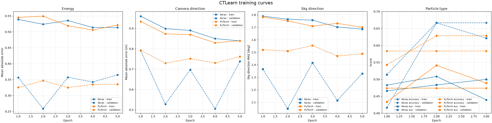

Note
Go to the end to download the full example code.
Tutorial 2 Train CTLearn models#
Train models for CTAO image and waveform data with CTLearn. The image
examples use only the gamma-ray and proton 00 files; the 01 files
remain untouched for future evaluation tutorials.
The tutorial is intenionally kept simple and uses only a small fraction
of the available statistics to keep the training time manageable.
The resulting performance metrics are not representative of a production-level
analysis nor should they be compared directly with published results. The main
goal is to illustrate the analysis workflow and to become familiar with the
command-line tools and the DL2 data format. This tutorial can be modified from
the users to use larger datasets and more statistics to obtain meaningful results.
Each section explains a training task followed immediately by its literal command-line example. Running this script executes every example in order.
Inspect the training environment and cached input data#
Run explore_public_data.py first to download and convert the shared
tutorial data. The converted directory is keyed by the ctapipe version and
the optional event limit, matching the cache layout used by that tutorial.
import importlib.metadata
import os
import subprocess
from pathlib import Path
import matplotlib.pyplot as plt
import pandas as pd
from ctapipe import __version__ as ctapipe_version
MAX_EVENTS = os.environ.get("CTLEARN_TUTORIAL_MAX_EVENTS")
if MAX_EVENTS is not None and int(MAX_EVENTS) < 1:
raise ValueError("CTLEARN_TUTORIAL_MAX_EVENTS must be a positive integer")
MAX_EVENTS_SUFFIX = f"-max{MAX_EVENTS}" if MAX_EVENTS is not None else ""
TESTDATA_DIR = (
Path(
os.environ.get(
"CTLEARN_TUTORIAL_DATA_DIR",
str(Path.home() / ".cache" / "ctlearn" / "tutorial-data"),
)
)
.expanduser()
.resolve()
)
CONVERTED_DIR = TESTDATA_DIR / f"ctapipe-{ctapipe_version}{MAX_EVENTS_SUFFIX}"
GAMMA_FILE = CONVERTED_DIR / "gamma-diffuse_with_images_00.dl2.h5"
PROTON_FILE = CONVERTED_DIR / "proton_with_images_00.dl2.h5"
WAVEFORM_FILE = TESTDATA_DIR / f"gamma_prod5{MAX_EVENTS_SUFFIX}.r1.dl1.h5"
print("Training environment:")
for distribution in ("ctapipe", "ctlearn", "dl1-data-handler", "keras", "tensorflow"):
try:
version = importlib.metadata.version(distribution)
except importlib.metadata.PackageNotFoundError:
version = "not installed"
print(f" {distribution}: {version}")
missing_files = [path for path in (GAMMA_FILE, PROTON_FILE) if not path.is_file()]
if missing_files:
missing = "\n".join(f" - {path}" for path in missing_files)
raise FileNotFoundError(
"Cached stereo training data is missing. Run "
"explore_public_data.py first. Missing files:\n"
f"{missing}"
)
print("\nCached input files:")
for path in (GAMMA_FILE, PROTON_FILE):
print(f" {path.name}: {path.stat().st_size / 1024**2:.1f} MiB")
print("Only the _00 image files are selected; the _01 files are reserved.")
Training environment:
ctapipe: 0.33.0
ctlearn: 0.11.2.dev5+gab3e70b7c
dl1-data-handler: 0.14.13
keras: 3.15.1
tensorflow: 2.21.0
Cached input files:
gamma-diffuse_with_images_00.dl2.h5: 12.3 MiB
proton_with_images_00.dl2.h5: 12.4 MiB
Only the _00 image files are selected; the _01 files are reserved.
Training commands, configs, and outputs#
CTLearn provides ctlearn-train-keras-model and
ctlearn-train-pytorch-model command-line tools. Use --help or
--help-all to inspect their options. Each example has a Keras command
followed immediately by the equivalent PyTorch command. In a notebook,
prefix either command with !.
The three JSON configuration files are in docs/source/config in the
repository and in config in the downloaded tutorial ZIPs:
dl1dh_example_config.jsonselects LST/LSTCam images, the image and relative peak-time channels, bilinear mapping, and an example 50,000 p.e. intensity cut. It also specifies NectarCam waveform settings.ctlearn_train_model_example_config.jsonsets the reader, epoch and batch defaults, validation split, Adam optimizer and learning rate, checkpointing, learning-rate reduction, random seed, and early stopping.ctlearn_models_example_config.jsondefines the prediction heads, attention settings, customSingleCNNandResNetarchitectures, andLoadedModeltransfer-learning options.
def find_config_dir():
roots = []
script_path = globals().get("__file__")
if script_path is not None:
script_dir = Path(script_path).resolve().parent
roots.extend((script_dir, *script_dir.parents))
roots.extend((Path.cwd(), *Path.cwd().parents))
config_names = (
"dl1dh_example_config.json",
"ctlearn_train_model_example_config.json",
"ctlearn_models_example_config.json",
)
for root in roots:
for config_dir in (root / "config", root / "docs" / "source" / "config"):
if all((config_dir / name).is_file() for name in config_names):
return config_dir
raise FileNotFoundError(
"Could not locate tutorial configs in config/ or docs/source/config/. "
"Extract the complete tutorial ZIP or run from the CTLearn repository."
)
CONFIG_DIR = find_config_dir()
DL1DH_CONFIG = CONFIG_DIR / "dl1dh_example_config.json"
TRAINING_CONFIG = CONFIG_DIR / "ctlearn_train_model_example_config.json"
MODEL_CONFIG = CONFIG_DIR / "ctlearn_models_example_config.json"
for config_path in (DL1DH_CONFIG, TRAINING_CONFIG, MODEL_CONFIG):
if not config_path.is_file():
raise FileNotFoundError(f"Tutorial configuration is missing: {config_path}")
OUTPUT_DIR = (
Path(
os.environ.get(
"CTLEARN_TUTORIAL_OUTPUT_DIR",
str(Path.home() / ".cache" / "ctlearn" / "tutorial-training"),
)
)
.expanduser()
.resolve()
)
TRAINING_OUTPUTS = (
"keras-energy",
"pytorch-energy",
"keras-cameradirection",
"pytorch-cameradirection",
"keras-skydirection",
"pytorch-skydirection",
"keras-classification",
"pytorch-classification",
"keras-singlecnn-energy",
"pytorch-singlecnn-energy",
"keras-resnet-energy",
"pytorch-resnet-energy",
"keras-transfer-learning-energy",
"pytorch-transfer-learning-energy",
"keras-stereo-energy",
"pytorch-stereo-energy",
"keras-waveform-energy",
"pytorch-waveform-energy",
)
existing_outputs = [
OUTPUT_DIR / name for name in TRAINING_OUTPUTS if (OUTPUT_DIR / name).exists()
]
if existing_outputs:
existing = "\n".join(f" - {path}" for path in existing_outputs)
raise FileExistsError(
"Training output directories already exist. Set "
"CTLEARN_TUTORIAL_OUTPUT_DIR to a new directory before running all "
f"examples:\n{existing}"
)
os.environ["CTLEARN_TUTORIAL_DATA_DIR"] = str(TESTDATA_DIR)
os.environ["CTLEARN_TUTORIAL_CONVERTED_DIR"] = str(CONVERTED_DIR)
os.environ["CTLEARN_TUTORIAL_CONFIG_DIR"] = str(CONFIG_DIR.resolve())
os.environ["CTLEARN_TUTORIAL_OUTPUT_DIR"] = str(OUTPUT_DIR)
os.environ["CTLEARN_TUTORIAL_MAX_EVENTS_SUFFIX"] = MAX_EVENTS_SUFFIX
print(f"\nTraining outputs: {OUTPUT_DIR}")
def run_command_line(command):
print(f"Running command: $ {command.strip()}")
result = subprocess.run(
command,
shell=True,
stdout=subprocess.PIPE,
stderr=subprocess.STDOUT,
text=True,
)
print(result.stdout, end="")
result.check_returncode()
Training outputs: /home/runner/.cache/ctlearn/tutorial-training
Part A2 Monoscopic CNN-based model training#
We first train a basic monoscopic CNN-based model using the default CTLearn model configuration. The model uses a ThinResNet backbone for feature extraction and a standard MLP head for the task-specific prediction. We consider three different reconstruction tasks, each trained separately:
1. Primary particle energy regression#
The model reconstructs the energy of the primary particle as a continuous value. Internally, CTLearn performs the regression on the energy in TeV and on a logarithmic scale, since the primary-particle energy spans a very wide range. Working in logarithmic space has been found to be more efficient for the regression and is therefore a fixed, non-configurable aspect of the energy reconstruction. During inference, the prediction tool converts the predicted values back from logarithmic space to the original linear energy scale in TeV.
run_command_line(
"""ctlearn-train-keras-model --verbose \\
--signal "$CTLEARN_TUTORIAL_CONVERTED_DIR" \\
--pattern-signal "gamma-diffuse_with_images_00.dl2.h5" \\
--output "$CTLEARN_TUTORIAL_OUTPUT_DIR/keras-energy" \\
--config "$CTLEARN_TUTORIAL_CONFIG_DIR/dl1dh_example_config.json" \\
--config "$CTLEARN_TUTORIAL_CONFIG_DIR/ctlearn_train_model_example_config.json" \\
--reco energy \\
--DLImageReader.focal_length_choice EQUIVALENT \\
--TrainCTLearnModel.n_epochs 5 \\
--TrainCTLearnModel.batch_size 4""",
)
run_command_line(
"""ctlearn-train-pytorch-model --verbose \\
--signal "$CTLEARN_TUTORIAL_CONVERTED_DIR" \\
--pattern-signal "gamma-diffuse_with_images_00.dl2.h5" \\
--output "$CTLEARN_TUTORIAL_OUTPUT_DIR/pytorch-energy" \\
--config "$CTLEARN_TUTORIAL_CONFIG_DIR/dl1dh_example_config.json" \\
--config "$CTLEARN_TUTORIAL_CONFIG_DIR/ctlearn_train_model_example_config.json" \\
--reco energy \\
--DLImageReader.focal_length_choice EQUIVALENT \\
--TrainCTLearnModel.n_epochs 5 \\
--TrainCTLearnModel.batch_size 4""",
)
Running command: $ ctlearn-train-keras-model --verbose \
--signal "$CTLEARN_TUTORIAL_CONVERTED_DIR" \
--pattern-signal "gamma-diffuse_with_images_00.dl2.h5" \
--output "$CTLEARN_TUTORIAL_OUTPUT_DIR/keras-energy" \
--config "$CTLEARN_TUTORIAL_CONFIG_DIR/dl1dh_example_config.json" \
--config "$CTLEARN_TUTORIAL_CONFIG_DIR/ctlearn_train_model_example_config.json" \
--reco energy \
--DLImageReader.focal_length_choice EQUIVALENT \
--TrainCTLearnModel.n_epochs 5 \
--TrainCTLearnModel.batch_size 4
WARNING: All log messages before absl::InitializeLog() is called are written to STDERR
I0000 00:00:1795710836.780124 2425 port.cc:153] oneDNN custom operations are on. You may see slightly different numerical results due to floating-point round-off errors from different computation orders. To turn them off, set the environment variable `TF_ENABLE_ONEDNN_OPTS=0`.
I0000 00:00:1795710836.818728 2425 cpu_feature_guard.cc:227] This TensorFlow binary is optimized to use available CPU instructions in performance-critical operations.
To enable the following instructions: AVX2 AVX512F AVX512_VNNI AVX512_BF16 AVX_VNNI FMA, in other operations, rebuild TensorFlow with the appropriate compiler flags.
WARNING: All log messages before absl::InitializeLog() is called are written to STDERR
I0000 00:00:1795710837.833866 2425 port.cc:153] oneDNN custom operations are on. You may see slightly different numerical results due to floating-point round-off errors from different computation orders. To turn them off, set the environment variable `TF_ENABLE_ONEDNN_OPTS=0`.
/opt/hostedtoolcache/Python/3.12.16/x64/lib/python3.12/site-packages/ctapipe/core/traits.py:211: NoneDefaultNotAllowedWarning: Setting default_value=None and allow_none will result in misleading error messages. To require an value, set allow_none=True, default_value=None and check later that the value is not None
warnings.warn(msg, NoneDefaultNotAllowedWarning)
2026-11-26 16:34:00,574 INFO [ctlearn.ctlearn-train-keras-model] (tool.initialize): Loading config from '[PosixPath('/home/runner/work/ctlearn/ctlearn/docs/source/config/dl1dh_example_config.json'), PosixPath('/home/runner/work/ctlearn/ctlearn/docs/source/config/ctlearn_train_model_example_config.json')]'
2026-11-26 16:34:00,575 DEBUG [ctlearn.ctlearn-train-keras-model] (application._load_config_files): Looking for /home/runner/work/ctlearn/ctlearn/docs/source/config/dl1dh_example_config in /home/runner/work/ctlearn/ctlearn/examples/tutorials
2026-11-26 16:34:00,575 DEBUG [ctlearn.ctlearn-train-keras-model] (application._load_config_files): Loaded config file: /home/runner/work/ctlearn/ctlearn/docs/source/config/dl1dh_example_config.json
2026-11-26 16:34:00,576 DEBUG [ctlearn.ctlearn-train-keras-model] (application._load_config_files): Looking for /home/runner/work/ctlearn/ctlearn/docs/source/config/ctlearn_train_model_example_config in /home/runner/work/ctlearn/ctlearn/examples/tutorials
2026-11-26 16:34:00,576 DEBUG [ctlearn.ctlearn-train-keras-model] (application._load_config_files): Loaded config file: /home/runner/work/ctlearn/ctlearn/docs/source/config/ctlearn_train_model_example_config.json
2026-11-26 16:34:00,577 INFO [ctlearn.ctlearn-train-keras-model] (tool.initialize): ctapipe version 0.33.0
2026-11-26 16:34:00,577 INFO [ctlearn.ctlearn-train-keras-model] (train_model.setup): ctlearn version 0.11.2.dev5+gab3e70b7c
2026-11-26 16:34:00,577 INFO [ctlearn.ctlearn-train-keras-model] (train_model.setup): Loading data:
2026-11-26 16:34:00,577 INFO [ctlearn.ctlearn-train-keras-model] (train_model.setup): For a large dataset, this may take a while...
WARNING: MergeConflictWarning: Cannot merge meta key 'CTAPIPE_VERSION' types <class 'str'> and <class 'str'>, choosing CTAPIPE_VERSION='0.33.0' [astropy.utils.metadata.merge]
WARNING: MergeConflictWarning: Cannot merge meta key 'CTAPIPE_VERSION' types <class 'str'> and <class 'str'>, choosing CTAPIPE_VERSION='0.33.0' [astropy.utils.metadata.merge]
WARNING: MergeConflictWarning: Cannot merge meta key 'CTAPIPE_VERSION' types <class 'str'> and <class 'str'>, choosing CTAPIPE_VERSION='0.33.0' [astropy.utils.metadata.merge]
WARNING: MergeConflictWarning: Cannot merge meta key 'CTAPIPE_VERSION' types <class 'str'> and <class 'str'>, choosing CTAPIPE_VERSION='0.33.0' [astropy.utils.metadata.merge]
WARNING: MergeConflictWarning: In merged column 'obs_id' the 'description' attribute does not match (Observation Block ID != Simulation Run Identifier). Using Simulation Run Identifier for merged output [astropy.utils.metadata.merge]
WARNING: MergeConflictWarning: Cannot merge meta key 'CTAPIPE_VERSION' types <class 'str'> and <class 'str'>, choosing CTAPIPE_VERSION='0.17.0' [astropy.utils.metadata.merge]
2026-11-26 16:34:01,363 INFO [ctlearn.ctlearn-train-keras-model] (train_model.setup): Number of events loaded: 66
E0000 00:00:1795710841.364371 2425 cuda_platform.cc:52] failed call to cuInit: INTERNAL: CUDA error: Failed call to cuInit: UNKNOWN ERROR (303)
2026-11-26 16:34:01,379 INFO [ctlearn.ctlearn-train-keras-model] (train_model.setup_framework): Number of devices: 1
2026-11-26 16:34:01,405 DEBUG [ctlearn.ctlearn-train-keras-model] (tool.run): CONFIG: {'TrainCTLearnKerasModel': {'batch_size': 4, 'config_files': [PosixPath('/home/runner/work/ctlearn/ctlearn/docs/source/config/dl1dh_example_config.json'), PosixPath('/home/runner/work/ctlearn/ctlearn/docs/source/config/ctlearn_train_model_example_config.json')], 'dl1dh_reader_type': 'DLImageReader', 'early_stopping': None, 'file_pattern_background': ['*.h5'], 'file_pattern_signal': ['gamma-diffuse_with_images_00.dl2.h5'], 'input_dir_background': None, 'input_dir_signal': PosixPath('/home/runner/.cache/ctlearn/tutorial-data/ctapipe-0.33.0-max500'), 'log_config': {}, 'log_datefmt': '%Y-%m-%d %H:%M:%S', 'log_file': None, 'log_file_level': 'INFO', 'log_format': '[%(name)s]%(highlevel)s %(message)s', 'log_level': 10, 'logging_config': {}, 'lr_reducing': {'factor': 0.5, 'patience': 5, 'min_delta': 0.01, 'min_lr': 1e-06}, 'model_type': 'ResNet', 'n_epochs': 5, 'optimizer': {'name': 'Adam', 'base_learning_rate': 0.0001, 'adam_epsilon': 1e-08}, 'output_dir': PosixPath('/home/runner/.cache/ctlearn/tutorial-training/keras-energy'), 'overwrite': False, 'provenance_log': PosixPath('/home/runner/work/ctlearn/ctlearn/examples/tutorials/ctlearn-train-keras-model.provenance.log'), 'quiet': False, 'random_seed': 1234, 'reco_tasks': ['energy'], 'save_best_validation_only': True, 'show_config': False, 'show_config_json': False, 'sort_by_intensity': False, 'stack_telescope_images': False, 'validation_split': 0.1, 'DLImageReader': {'allowed_tel_types': ['LST_LST_LSTCam'], 'allowed_tels': None, 'channels': ['image', 'relative_peak_time'], 'enforce_subarray_equality': True, 'focal_length_choice': <FocalLengthKind.EQUIVALENT: 2>, 'force_dl1_lookup': False, 'image_mapper_type': [('type', '*', 'BilinearMapper')], 'min_telescopes': 1, 'min_telescopes_of_type': [('type', '*', 0)], 'mode': 'mono', 'skip_incompatible_files': False, 'TableQualityQuery': {'passed_all_column_name': 'PASSED_ALL', 'quality_criteria': [['> 1000 phe', 'hillas_intensity > 1000']]}}}}
2026-11-26 16:34:01,405 INFO [ctlearn.ctlearn-train-keras-model] (train_model.start): Setting up the Keras model.
2026-11-26 16:34:01,971 INFO [ctlearn.ctlearn-train-keras-model] (train_model.start): Compiling CTLearn model.
2026-11-26 16:34:01,973 INFO [ctlearn.ctlearn-train-keras-model] (train_model.start): Training and evaluating...
I0000 00:00:1795710842.011690 2425 generator_dataset_op.cc:213] Memory patch applied: M_TRIM_THRESHOLD=128 kb was set.
W0000 00:00:1795710842.029755 2425 dataset.cc:997] Input of GeneratorDatasetOp::Dataset will not be optimized because the dataset does not implement the AsGraphDefInternal() method needed to apply optimizations.
2026-11-26 16:34:13,525 INFO [ctlearn.ctlearn-train-keras-model] (train_model._on_epoch_end): Epoch 1/5 - loss: 0.5390 - mae_energy: 0.5390 - val_loss: 0.3567 - val_mae_energy: 0.3567 - time: 10.98s
2026-11-26 16:34:13,526 INFO [ctlearn.ctlearn-train-keras-model] (train_model.on_epoch_end): Epoch 1: val_loss improved from None to 0.35666, saving model to /home/runner/.cache/ctlearn/tutorial-training/keras-energy/ctlearn_model.keras
2026-11-26 16:34:13,820 INFO [ctlearn.ctlearn-train-keras-model] (train_model.on_epoch_end): Epoch 1: finished saving model to /home/runner/.cache/ctlearn/tutorial-training/keras-energy/ctlearn_model.keras
2026-11-26 16:34:20,645 INFO [ctlearn.ctlearn-train-keras-model] (train_model._on_epoch_end): Epoch 2/5 - loss: 0.5238 - mae_energy: 0.5238 - val_loss: 0.2588 - val_mae_energy: 0.2588 - time: 6.34s
2026-11-26 16:34:20,649 INFO [ctlearn.ctlearn-train-keras-model] (train_model.on_epoch_end): Epoch 2: val_loss improved from 0.35666 to 0.25882, saving model to /home/runner/.cache/ctlearn/tutorial-training/keras-energy/ctlearn_model.keras
2026-11-26 16:34:21,254 INFO [ctlearn.ctlearn-train-keras-model] (train_model.on_epoch_end): Epoch 2: finished saving model to /home/runner/.cache/ctlearn/tutorial-training/keras-energy/ctlearn_model.keras
2026-11-26 16:34:28,093 INFO [ctlearn.ctlearn-train-keras-model] (train_model._on_epoch_end): Epoch 3/5 - loss: 0.5355 - mae_energy: 0.5355 - val_loss: 0.3574 - val_mae_energy: 0.3574 - time: 6.40s
2026-11-26 16:34:28,093 INFO [ctlearn.ctlearn-train-keras-model] (train_model.on_epoch_end): Epoch 3: val_loss did not improve from 0.25882
W0000 00:00:1795710874.811570 2425 dataset.cc:997] Input of GeneratorDatasetOp::Dataset will not be optimized because the dataset does not implement the AsGraphDefInternal() method needed to apply optimizations.
2026-11-26 16:34:35,082 INFO [ctlearn.ctlearn-train-keras-model] (train_model._on_epoch_end): Epoch 4/5 - loss: 0.5139 - mae_energy: 0.5139 - val_loss: 0.3425 - val_mae_energy: 0.3425 - time: 6.48s
2026-11-26 16:34:35,083 INFO [ctlearn.ctlearn-train-keras-model] (train_model.on_epoch_end): Epoch 4: val_loss did not improve from 0.25882
2026-11-26 16:34:42,303 INFO [ctlearn.ctlearn-train-keras-model] (train_model._on_epoch_end): Epoch 5/5 - loss: 0.5135 - mae_energy: 0.5135 - val_loss: 0.3650 - val_mae_energy: 0.3650 - time: 6.77s
2026-11-26 16:34:42,303 INFO [ctlearn.ctlearn-train-keras-model] (train_model.on_epoch_end): Epoch 5: val_loss did not improve from 0.25882
2026-11-26 16:34:42,769 INFO [ctlearn.ctlearn-train-keras-model] (train_model.start): Training and evaluating finished successfully!
2026-11-26 16:34:42,769 INFO [ctlearn.ctlearn-train-keras-model] (train_model._write_config_file): Writing configuration file to /home/runner/.cache/ctlearn/tutorial-training/keras-energy/config.json
2026-11-26 16:34:42,770 INFO [ctlearn.ctlearn-train-keras-model] (train_model.finish): Tool is shutting down
2026-11-26 16:34:42,771 INFO [ctlearn.ctlearn-train-keras-model] (tool.write_provenance): Output:
2026-11-26 16:34:42,771 DEBUG [ctlearn.ctlearn-train-keras-model] (tool.write_provenance): PROVENANCE: 'Details about provenance is found in /home/runner/.cache/ctlearn/tutorial-training/keras-energy/ctlearn-train-keras-model.provenance.log'
2026-11-26 16:34:42,772 INFO [ctlearn.ctlearn-train-keras-model] (tool.write_provenance): Output:
2026-11-26 16:34:42,772 DEBUG [ctlearn.ctlearn-train-keras-model] (tool.write_provenance): PROVENANCE: 'Details about provenance is found in /home/runner/work/ctlearn/ctlearn/examples/tutorials/ctlearn-train-keras-model.provenance.log'
2026-11-26 16:34:42,773 INFO [ctlearn.ctlearn-train-keras-model] (tool.run): Finished ctlearn-train-keras-model
2026-11-26 16:34:42,773 DEBUG [ctlearn.ctlearn-train-keras-model] (application.exit): Exiting application: ctlearn-train-keras-model
Running command: $ ctlearn-train-pytorch-model --verbose \
--signal "$CTLEARN_TUTORIAL_CONVERTED_DIR" \
--pattern-signal "gamma-diffuse_with_images_00.dl2.h5" \
--output "$CTLEARN_TUTORIAL_OUTPUT_DIR/pytorch-energy" \
--config "$CTLEARN_TUTORIAL_CONFIG_DIR/dl1dh_example_config.json" \
--config "$CTLEARN_TUTORIAL_CONFIG_DIR/ctlearn_train_model_example_config.json" \
--reco energy \
--DLImageReader.focal_length_choice EQUIVALENT \
--TrainCTLearnModel.n_epochs 5 \
--TrainCTLearnModel.batch_size 4
WARNING: All log messages before absl::InitializeLog() is called are written to STDERR
I0000 00:00:1795710887.599484 3006 port.cc:153] oneDNN custom operations are on. You may see slightly different numerical results due to floating-point round-off errors from different computation orders. To turn them off, set the environment variable `TF_ENABLE_ONEDNN_OPTS=0`.
I0000 00:00:1795710887.636461 3006 cpu_feature_guard.cc:227] This TensorFlow binary is optimized to use available CPU instructions in performance-critical operations.
To enable the following instructions: AVX2 AVX512F AVX512_VNNI AVX512_BF16 AVX_VNNI FMA, in other operations, rebuild TensorFlow with the appropriate compiler flags.
WARNING: All log messages before absl::InitializeLog() is called are written to STDERR
I0000 00:00:1795710888.867597 3006 port.cc:153] oneDNN custom operations are on. You may see slightly different numerical results due to floating-point round-off errors from different computation orders. To turn them off, set the environment variable `TF_ENABLE_ONEDNN_OPTS=0`.
/opt/hostedtoolcache/Python/3.12.16/x64/lib/python3.12/site-packages/ctapipe/core/traits.py:211: NoneDefaultNotAllowedWarning: Setting default_value=None and allow_none will result in misleading error messages. To require an value, set allow_none=True, default_value=None and check later that the value is not None
warnings.warn(msg, NoneDefaultNotAllowedWarning)
2026-11-26 16:34:50,300 INFO [ctlearn.ctlearn-train-pytorch-model] (tool.initialize): Loading config from '[PosixPath('/home/runner/work/ctlearn/ctlearn/docs/source/config/dl1dh_example_config.json'), PosixPath('/home/runner/work/ctlearn/ctlearn/docs/source/config/ctlearn_train_model_example_config.json')]'
2026-11-26 16:34:50,301 DEBUG [ctlearn.ctlearn-train-pytorch-model] (application._load_config_files): Looking for /home/runner/work/ctlearn/ctlearn/docs/source/config/dl1dh_example_config in /home/runner/work/ctlearn/ctlearn/examples/tutorials
2026-11-26 16:34:50,301 DEBUG [ctlearn.ctlearn-train-pytorch-model] (application._load_config_files): Loaded config file: /home/runner/work/ctlearn/ctlearn/docs/source/config/dl1dh_example_config.json
2026-11-26 16:34:50,302 DEBUG [ctlearn.ctlearn-train-pytorch-model] (application._load_config_files): Looking for /home/runner/work/ctlearn/ctlearn/docs/source/config/ctlearn_train_model_example_config in /home/runner/work/ctlearn/ctlearn/examples/tutorials
2026-11-26 16:34:50,302 DEBUG [ctlearn.ctlearn-train-pytorch-model] (application._load_config_files): Loaded config file: /home/runner/work/ctlearn/ctlearn/docs/source/config/ctlearn_train_model_example_config.json
2026-11-26 16:34:50,303 INFO [ctlearn.ctlearn-train-pytorch-model] (tool.initialize): ctapipe version 0.33.0
2026-11-26 16:34:50,303 INFO [ctlearn.ctlearn-train-pytorch-model] (train_model.setup): ctlearn version 0.11.2.dev5+gab3e70b7c
2026-11-26 16:34:50,303 INFO [ctlearn.ctlearn-train-pytorch-model] (train_model.setup): Loading data:
2026-11-26 16:34:50,303 INFO [ctlearn.ctlearn-train-pytorch-model] (train_model.setup): For a large dataset, this may take a while...
WARNING: MergeConflictWarning: Cannot merge meta key 'CTAPIPE_VERSION' types <class 'str'> and <class 'str'>, choosing CTAPIPE_VERSION='0.33.0' [astropy.utils.metadata.merge]
WARNING: MergeConflictWarning: Cannot merge meta key 'CTAPIPE_VERSION' types <class 'str'> and <class 'str'>, choosing CTAPIPE_VERSION='0.33.0' [astropy.utils.metadata.merge]
WARNING: MergeConflictWarning: Cannot merge meta key 'CTAPIPE_VERSION' types <class 'str'> and <class 'str'>, choosing CTAPIPE_VERSION='0.33.0' [astropy.utils.metadata.merge]
WARNING: MergeConflictWarning: Cannot merge meta key 'CTAPIPE_VERSION' types <class 'str'> and <class 'str'>, choosing CTAPIPE_VERSION='0.33.0' [astropy.utils.metadata.merge]
WARNING: MergeConflictWarning: In merged column 'obs_id' the 'description' attribute does not match (Observation Block ID != Simulation Run Identifier). Using Simulation Run Identifier for merged output [astropy.utils.metadata.merge]
WARNING: MergeConflictWarning: Cannot merge meta key 'CTAPIPE_VERSION' types <class 'str'> and <class 'str'>, choosing CTAPIPE_VERSION='0.17.0' [astropy.utils.metadata.merge]
2026-11-26 16:34:51,026 INFO [ctlearn.ctlearn-train-pytorch-model] (train_model.setup): Number of events loaded: 66
2026-11-26 16:34:51,026 INFO [ctlearn.ctlearn-train-pytorch-model] (train_model.setup_framework): Using CPU device.
2026-11-26 16:34:51,056 DEBUG [ctlearn.ctlearn-train-pytorch-model] (tool.run): CONFIG: {'TrainCTLearnPyTorchModel': {'batch_size': 4, 'config_files': [PosixPath('/home/runner/work/ctlearn/ctlearn/docs/source/config/dl1dh_example_config.json'), PosixPath('/home/runner/work/ctlearn/ctlearn/docs/source/config/ctlearn_train_model_example_config.json')], 'dl1dh_reader_type': 'DLImageReader', 'early_stopping': None, 'file_pattern_background': ['*.h5'], 'file_pattern_signal': ['gamma-diffuse_with_images_00.dl2.h5'], 'input_dir_background': None, 'input_dir_signal': PosixPath('/home/runner/.cache/ctlearn/tutorial-data/ctapipe-0.33.0-max500'), 'log_config': {}, 'log_datefmt': '%Y-%m-%d %H:%M:%S', 'log_file': None, 'log_file_level': 'INFO', 'log_format': '[%(name)s]%(highlevel)s %(message)s', 'log_level': 10, 'logging_config': {}, 'lr_reducing': {'factor': 0.5, 'patience': 5, 'min_delta': 0.01, 'min_lr': 1e-06}, 'model_type': 'ResNet', 'n_epochs': 5, 'num_workers': 0, 'optimizer': {'name': 'Adam', 'base_learning_rate': 0.0001, 'adam_epsilon': 1e-08}, 'output_dir': PosixPath('/home/runner/.cache/ctlearn/tutorial-training/pytorch-energy'), 'overwrite': False, 'persistent_workers': False, 'provenance_log': PosixPath('/home/runner/work/ctlearn/ctlearn/examples/tutorials/ctlearn-train-pytorch-model.provenance.log'), 'quiet': False, 'random_seed': 1234, 'reco_tasks': ['energy'], 'save_best_validation_only': True, 'show_config': False, 'show_config_json': False, 'sort_by_intensity': False, 'stack_telescope_images': False, 'validation_split': 0.1, 'DLImageReader': {'allowed_tel_types': ['LST_LST_LSTCam'], 'allowed_tels': None, 'channels': ['image', 'relative_peak_time'], 'enforce_subarray_equality': True, 'focal_length_choice': <FocalLengthKind.EQUIVALENT: 2>, 'force_dl1_lookup': False, 'image_mapper_type': [('type', '*', 'BilinearMapper')], 'min_telescopes': 1, 'min_telescopes_of_type': [('type', '*', 0)], 'mode': 'mono', 'skip_incompatible_files': False, 'TableQualityQuery': {'passed_all_column_name': 'PASSED_ALL', 'quality_criteria': [['> 1000 phe', 'hillas_intensity > 1000']]}}}}
2026-11-26 16:34:51,056 INFO [ctlearn.ctlearn-train-pytorch-model] (train_model.start): Setting up the PyTorch model.
2026-11-26 16:34:51,079 INFO [ctlearn.ctlearn-train-pytorch-model] (train_model.start): Training and evaluating...
2026-11-26 16:35:04,677 INFO [ctlearn.ctlearn-train-pytorch-model] (train_model.start): Epoch 1/5 - loss: 0.5453 - mae_energy: 0.5453 - val_loss: 0.3254 - val_mae_energy: 0.3254 - time: 13.60s
2026-11-26 16:35:04,678 INFO [ctlearn.ctlearn-train-pytorch-model] (train_model.start): Epoch 1: val_loss improved from None to 0.32539, saving model to /home/runner/.cache/ctlearn/tutorial-training/pytorch-energy/ctlearn_model.pth
2026-11-26 16:35:04,709 INFO [ctlearn.ctlearn-train-pytorch-model] (train_model.start): Epoch 1: finished saving model to /home/runner/.cache/ctlearn/tutorial-training/pytorch-energy/ctlearn_model.pth
2026-11-26 16:35:18,524 INFO [ctlearn.ctlearn-train-pytorch-model] (train_model.start): Epoch 2/5 - loss: 0.5494 - mae_energy: 0.5494 - val_loss: 0.3467 - val_mae_energy: 0.3467 - time: 13.81s
2026-11-26 16:35:18,525 INFO [ctlearn.ctlearn-train-pytorch-model] (train_model.start): Epoch 2: val_loss did not improve from 0.32539
2026-11-26 16:35:30,664 INFO [ctlearn.ctlearn-train-pytorch-model] (train_model.start): Epoch 3/5 - loss: 0.5191 - mae_energy: 0.5191 - val_loss: 0.3251 - val_mae_energy: 0.3251 - time: 12.14s
2026-11-26 16:35:30,666 INFO [ctlearn.ctlearn-train-pytorch-model] (train_model.start): Epoch 3: val_loss improved from 0.32539 to 0.32513, saving model to /home/runner/.cache/ctlearn/tutorial-training/pytorch-energy/ctlearn_model.pth
2026-11-26 16:35:30,910 INFO [ctlearn.ctlearn-train-pytorch-model] (train_model.start): Epoch 3: finished saving model to /home/runner/.cache/ctlearn/tutorial-training/pytorch-energy/ctlearn_model.pth
2026-11-26 16:35:43,689 INFO [ctlearn.ctlearn-train-pytorch-model] (train_model.start): Epoch 4/5 - loss: 0.5060 - mae_energy: 0.5060 - val_loss: 0.3346 - val_mae_energy: 0.3346 - time: 12.78s
2026-11-26 16:35:43,689 INFO [ctlearn.ctlearn-train-pytorch-model] (train_model.start): Epoch 4: val_loss did not improve from 0.32513
2026-11-26 16:35:56,697 INFO [ctlearn.ctlearn-train-pytorch-model] (train_model.start): Epoch 5/5 - loss: 0.5216 - mae_energy: 0.5216 - val_loss: 0.3351 - val_mae_energy: 0.3351 - time: 13.01s
2026-11-26 16:35:56,698 INFO [ctlearn.ctlearn-train-pytorch-model] (train_model.start): Epoch 5: val_loss did not improve from 0.32513
2026-11-26 16:35:56,698 INFO [ctlearn.ctlearn-train-pytorch-model] (train_model.start): Training and evaluating finished successfully!
2026-11-26 16:35:56,698 INFO [ctlearn.ctlearn-train-pytorch-model] (train_model._write_config_file): Writing configuration file to /home/runner/.cache/ctlearn/tutorial-training/pytorch-energy/config.json
2026-11-26 16:35:56,698 INFO [ctlearn.ctlearn-train-pytorch-model] (train_model.finish): Tool is shutting down
2026-11-26 16:35:56,699 INFO [ctlearn.ctlearn-train-pytorch-model] (tool.write_provenance): Output:
2026-11-26 16:35:56,699 DEBUG [ctlearn.ctlearn-train-pytorch-model] (tool.write_provenance): PROVENANCE: 'Details about provenance is found in /home/runner/.cache/ctlearn/tutorial-training/pytorch-energy/ctlearn-train-pytorch-model.provenance.log'
2026-11-26 16:35:56,700 INFO [ctlearn.ctlearn-train-pytorch-model] (tool.write_provenance): Output:
2026-11-26 16:35:56,700 DEBUG [ctlearn.ctlearn-train-pytorch-model] (tool.write_provenance): PROVENANCE: 'Details about provenance is found in /home/runner/work/ctlearn/ctlearn/examples/tutorials/ctlearn-train-pytorch-model.provenance.log'
2026-11-26 16:35:56,701 INFO [ctlearn.ctlearn-train-pytorch-model] (tool.run): Finished ctlearn-train-pytorch-model
2026-11-26 16:35:56,701 DEBUG [ctlearn.ctlearn-train-pytorch-model] (application.exit): Exiting application: ctlearn-train-pytorch-model
2. Arrival direction regression#
The model reconstructs the arrival direction of the primary particle. This can be done in two ways: either using the cameradirection task, which transforms the particle origin into the camera frame and performs the regression in camera coordinates, with distances expressed in meters; or using the skydirection task, which performs the regression in the sky frame, with field-of-view offsets expressed in degrees. For monoscopic CNN-based models, we generally recommend using the cameradirection task. During inference, the prediction tool converts the reconstructed camera coordinates back to the original Alt/Az representation, with the final direction expressed in degrees.
# Camera coordinates
run_command_line(
"""ctlearn-train-keras-model --verbose \\
--signal "$CTLEARN_TUTORIAL_CONVERTED_DIR" \\
--pattern-signal "gamma-diffuse_with_images_00.dl2.h5" \\
--output "$CTLEARN_TUTORIAL_OUTPUT_DIR/keras-cameradirection" \\
--config "$CTLEARN_TUTORIAL_CONFIG_DIR/dl1dh_example_config.json" \\
--config "$CTLEARN_TUTORIAL_CONFIG_DIR/ctlearn_train_model_example_config.json" \\
--reco cameradirection \\
--DLImageReader.focal_length_choice EQUIVALENT \\
--TrainCTLearnModel.n_epochs 5 \\
--TrainCTLearnModel.batch_size 4""",
)
run_command_line(
"""ctlearn-train-pytorch-model --verbose \\
--signal "$CTLEARN_TUTORIAL_CONVERTED_DIR" \\
--pattern-signal "gamma-diffuse_with_images_00.dl2.h5" \\
--output "$CTLEARN_TUTORIAL_OUTPUT_DIR/pytorch-cameradirection" \\
--config "$CTLEARN_TUTORIAL_CONFIG_DIR/dl1dh_example_config.json" \\
--config "$CTLEARN_TUTORIAL_CONFIG_DIR/ctlearn_train_model_example_config.json" \\
--reco cameradirection \\
--DLImageReader.focal_length_choice EQUIVALENT \\
--TrainCTLearnModel.n_epochs 5 \\
--TrainCTLearnModel.batch_size 4""",
)
# Sky coordinates
run_command_line(
"""ctlearn-train-keras-model --verbose \\
--signal "$CTLEARN_TUTORIAL_CONVERTED_DIR" \\
--pattern-signal "gamma-diffuse_with_images_00.dl2.h5" \\
--output "$CTLEARN_TUTORIAL_OUTPUT_DIR/keras-skydirection" \\
--config "$CTLEARN_TUTORIAL_CONFIG_DIR/dl1dh_example_config.json" \\
--config "$CTLEARN_TUTORIAL_CONFIG_DIR/ctlearn_train_model_example_config.json" \\
--reco skydirection \\
--DLImageReader.focal_length_choice EQUIVALENT \\
--TrainCTLearnModel.n_epochs 5 \\
--TrainCTLearnModel.batch_size 4""",
)
run_command_line(
"""ctlearn-train-pytorch-model --verbose \\
--signal "$CTLEARN_TUTORIAL_CONVERTED_DIR" \\
--pattern-signal "gamma-diffuse_with_images_00.dl2.h5" \\
--output "$CTLEARN_TUTORIAL_OUTPUT_DIR/pytorch-skydirection" \\
--config "$CTLEARN_TUTORIAL_CONFIG_DIR/dl1dh_example_config.json" \\
--config "$CTLEARN_TUTORIAL_CONFIG_DIR/ctlearn_train_model_example_config.json" \\
--reco skydirection \\
--DLImageReader.focal_length_choice EQUIVALENT \\
--TrainCTLearnModel.n_epochs 5 \\
--TrainCTLearnModel.batch_size 4""",
)
Running command: $ ctlearn-train-keras-model --verbose \
--signal "$CTLEARN_TUTORIAL_CONVERTED_DIR" \
--pattern-signal "gamma-diffuse_with_images_00.dl2.h5" \
--output "$CTLEARN_TUTORIAL_OUTPUT_DIR/keras-cameradirection" \
--config "$CTLEARN_TUTORIAL_CONFIG_DIR/dl1dh_example_config.json" \
--config "$CTLEARN_TUTORIAL_CONFIG_DIR/ctlearn_train_model_example_config.json" \
--reco cameradirection \
--DLImageReader.focal_length_choice EQUIVALENT \
--TrainCTLearnModel.n_epochs 5 \
--TrainCTLearnModel.batch_size 4
WARNING: All log messages before absl::InitializeLog() is called are written to STDERR
I0000 00:00:1795710958.947249 3040 port.cc:153] oneDNN custom operations are on. You may see slightly different numerical results due to floating-point round-off errors from different computation orders. To turn them off, set the environment variable `TF_ENABLE_ONEDNN_OPTS=0`.
I0000 00:00:1795710958.984341 3040 cpu_feature_guard.cc:227] This TensorFlow binary is optimized to use available CPU instructions in performance-critical operations.
To enable the following instructions: AVX2 AVX512F AVX512_VNNI AVX512_BF16 AVX_VNNI FMA, in other operations, rebuild TensorFlow with the appropriate compiler flags.
WARNING: All log messages before absl::InitializeLog() is called are written to STDERR
I0000 00:00:1795710959.833510 3040 port.cc:153] oneDNN custom operations are on. You may see slightly different numerical results due to floating-point round-off errors from different computation orders. To turn them off, set the environment variable `TF_ENABLE_ONEDNN_OPTS=0`.
/opt/hostedtoolcache/Python/3.12.16/x64/lib/python3.12/site-packages/ctapipe/core/traits.py:211: NoneDefaultNotAllowedWarning: Setting default_value=None and allow_none will result in misleading error messages. To require an value, set allow_none=True, default_value=None and check later that the value is not None
warnings.warn(msg, NoneDefaultNotAllowedWarning)
2026-11-26 16:36:02,307 INFO [ctlearn.ctlearn-train-keras-model] (tool.initialize): Loading config from '[PosixPath('/home/runner/work/ctlearn/ctlearn/docs/source/config/dl1dh_example_config.json'), PosixPath('/home/runner/work/ctlearn/ctlearn/docs/source/config/ctlearn_train_model_example_config.json')]'
2026-11-26 16:36:02,308 DEBUG [ctlearn.ctlearn-train-keras-model] (application._load_config_files): Looking for /home/runner/work/ctlearn/ctlearn/docs/source/config/dl1dh_example_config in /home/runner/work/ctlearn/ctlearn/examples/tutorials
2026-11-26 16:36:02,308 DEBUG [ctlearn.ctlearn-train-keras-model] (application._load_config_files): Loaded config file: /home/runner/work/ctlearn/ctlearn/docs/source/config/dl1dh_example_config.json
2026-11-26 16:36:02,308 DEBUG [ctlearn.ctlearn-train-keras-model] (application._load_config_files): Looking for /home/runner/work/ctlearn/ctlearn/docs/source/config/ctlearn_train_model_example_config in /home/runner/work/ctlearn/ctlearn/examples/tutorials
2026-11-26 16:36:02,308 DEBUG [ctlearn.ctlearn-train-keras-model] (application._load_config_files): Loaded config file: /home/runner/work/ctlearn/ctlearn/docs/source/config/ctlearn_train_model_example_config.json
2026-11-26 16:36:02,309 INFO [ctlearn.ctlearn-train-keras-model] (tool.initialize): ctapipe version 0.33.0
2026-11-26 16:36:02,309 INFO [ctlearn.ctlearn-train-keras-model] (train_model.setup): ctlearn version 0.11.2.dev5+gab3e70b7c
2026-11-26 16:36:02,309 INFO [ctlearn.ctlearn-train-keras-model] (train_model.setup): Loading data:
2026-11-26 16:36:02,309 INFO [ctlearn.ctlearn-train-keras-model] (train_model.setup): For a large dataset, this may take a while...
WARNING: MergeConflictWarning: Cannot merge meta key 'CTAPIPE_VERSION' types <class 'str'> and <class 'str'>, choosing CTAPIPE_VERSION='0.33.0' [astropy.utils.metadata.merge]
WARNING: MergeConflictWarning: Cannot merge meta key 'CTAPIPE_VERSION' types <class 'str'> and <class 'str'>, choosing CTAPIPE_VERSION='0.33.0' [astropy.utils.metadata.merge]
WARNING: MergeConflictWarning: Cannot merge meta key 'CTAPIPE_VERSION' types <class 'str'> and <class 'str'>, choosing CTAPIPE_VERSION='0.33.0' [astropy.utils.metadata.merge]
WARNING: MergeConflictWarning: Cannot merge meta key 'CTAPIPE_VERSION' types <class 'str'> and <class 'str'>, choosing CTAPIPE_VERSION='0.33.0' [astropy.utils.metadata.merge]
WARNING: MergeConflictWarning: In merged column 'obs_id' the 'description' attribute does not match (Observation Block ID != Simulation Run Identifier). Using Simulation Run Identifier for merged output [astropy.utils.metadata.merge]
WARNING: MergeConflictWarning: Cannot merge meta key 'CTAPIPE_VERSION' types <class 'str'> and <class 'str'>, choosing CTAPIPE_VERSION='0.17.0' [astropy.utils.metadata.merge]
2026-11-26 16:36:03,023 INFO [ctlearn.ctlearn-train-keras-model] (train_model.setup): Number of events loaded: 66
E0000 00:00:1795710963.024209 3040 cuda_platform.cc:52] failed call to cuInit: INTERNAL: CUDA error: Failed call to cuInit: UNKNOWN ERROR (303)
2026-11-26 16:36:03,036 INFO [ctlearn.ctlearn-train-keras-model] (train_model.setup_framework): Number of devices: 1
2026-11-26 16:36:03,062 DEBUG [ctlearn.ctlearn-train-keras-model] (tool.run): CONFIG: {'TrainCTLearnKerasModel': {'batch_size': 4, 'config_files': [PosixPath('/home/runner/work/ctlearn/ctlearn/docs/source/config/dl1dh_example_config.json'), PosixPath('/home/runner/work/ctlearn/ctlearn/docs/source/config/ctlearn_train_model_example_config.json')], 'dl1dh_reader_type': 'DLImageReader', 'early_stopping': None, 'file_pattern_background': ['*.h5'], 'file_pattern_signal': ['gamma-diffuse_with_images_00.dl2.h5'], 'input_dir_background': None, 'input_dir_signal': PosixPath('/home/runner/.cache/ctlearn/tutorial-data/ctapipe-0.33.0-max500'), 'log_config': {}, 'log_datefmt': '%Y-%m-%d %H:%M:%S', 'log_file': None, 'log_file_level': 'INFO', 'log_format': '[%(name)s]%(highlevel)s %(message)s', 'log_level': 10, 'logging_config': {}, 'lr_reducing': {'factor': 0.5, 'patience': 5, 'min_delta': 0.01, 'min_lr': 1e-06}, 'model_type': 'ResNet', 'n_epochs': 5, 'optimizer': {'name': 'Adam', 'base_learning_rate': 0.0001, 'adam_epsilon': 1e-08}, 'output_dir': PosixPath('/home/runner/.cache/ctlearn/tutorial-training/keras-cameradirection'), 'overwrite': False, 'provenance_log': PosixPath('/home/runner/work/ctlearn/ctlearn/examples/tutorials/ctlearn-train-keras-model.provenance.log'), 'quiet': False, 'random_seed': 1234, 'reco_tasks': ['cameradirection'], 'save_best_validation_only': True, 'show_config': False, 'show_config_json': False, 'sort_by_intensity': False, 'stack_telescope_images': False, 'validation_split': 0.1, 'DLImageReader': {'allowed_tel_types': ['LST_LST_LSTCam'], 'allowed_tels': None, 'channels': ['image', 'relative_peak_time'], 'enforce_subarray_equality': True, 'focal_length_choice': <FocalLengthKind.EQUIVALENT: 2>, 'force_dl1_lookup': False, 'image_mapper_type': [('type', '*', 'BilinearMapper')], 'min_telescopes': 1, 'min_telescopes_of_type': [('type', '*', 0)], 'mode': 'mono', 'skip_incompatible_files': False, 'TableQualityQuery': {'passed_all_column_name': 'PASSED_ALL', 'quality_criteria': [['> 1000 phe', 'hillas_intensity > 1000']]}}}}
2026-11-26 16:36:03,063 INFO [ctlearn.ctlearn-train-keras-model] (train_model.start): Setting up the Keras model.
2026-11-26 16:36:03,581 INFO [ctlearn.ctlearn-train-keras-model] (train_model.start): Compiling CTLearn model.
2026-11-26 16:36:03,583 INFO [ctlearn.ctlearn-train-keras-model] (train_model.start): Training and evaluating...
I0000 00:00:1795710963.616772 3040 generator_dataset_op.cc:213] Memory patch applied: M_TRIM_THRESHOLD=128 kb was set.
W0000 00:00:1795710963.631005 3040 dataset.cc:997] Input of GeneratorDatasetOp::Dataset will not be optimized because the dataset does not implement the AsGraphDefInternal() method needed to apply optimizations.
2026-11-26 16:36:14,817 INFO [ctlearn.ctlearn-train-keras-model] (train_model._on_epoch_end): Epoch 1/5 - loss: 0.9602 - mae_cameradirection: 0.9602 - val_loss: 0.7920 - val_mae_cameradirection: 0.7920 - time: 10.69s
2026-11-26 16:36:14,817 INFO [ctlearn.ctlearn-train-keras-model] (train_model.on_epoch_end): Epoch 1: val_loss improved from None to 0.79197, saving model to /home/runner/.cache/ctlearn/tutorial-training/keras-cameradirection/ctlearn_model.keras
2026-11-26 16:36:15,118 INFO [ctlearn.ctlearn-train-keras-model] (train_model.on_epoch_end): Epoch 1: finished saving model to /home/runner/.cache/ctlearn/tutorial-training/keras-cameradirection/ctlearn_model.keras
2026-11-26 16:36:24,159 INFO [ctlearn.ctlearn-train-keras-model] (train_model._on_epoch_end): Epoch 2/5 - loss: 0.8988 - mae_cameradirection: 0.8988 - val_loss: 0.5278 - val_mae_cameradirection: 0.5278 - time: 8.57s
2026-11-26 16:36:24,161 INFO [ctlearn.ctlearn-train-keras-model] (train_model.on_epoch_end): Epoch 2: val_loss improved from 0.79197 to 0.52777, saving model to /home/runner/.cache/ctlearn/tutorial-training/keras-cameradirection/ctlearn_model.keras
2026-11-26 16:36:24,758 INFO [ctlearn.ctlearn-train-keras-model] (train_model.on_epoch_end): Epoch 2: finished saving model to /home/runner/.cache/ctlearn/tutorial-training/keras-cameradirection/ctlearn_model.keras
2026-11-26 16:36:31,801 INFO [ctlearn.ctlearn-train-keras-model] (train_model._on_epoch_end): Epoch 3/5 - loss: 0.8900 - mae_cameradirection: 0.8900 - val_loss: 0.6970 - val_mae_cameradirection: 0.6970 - time: 6.59s
2026-11-26 16:36:31,801 INFO [ctlearn.ctlearn-train-keras-model] (train_model.on_epoch_end): Epoch 3: val_loss did not improve from 0.52777
W0000 00:00:1795710998.394670 3040 dataset.cc:997] Input of GeneratorDatasetOp::Dataset will not be optimized because the dataset does not implement the AsGraphDefInternal() method needed to apply optimizations.
2026-11-26 16:36:38,778 INFO [ctlearn.ctlearn-train-keras-model] (train_model._on_epoch_end): Epoch 4/5 - loss: 0.8498 - mae_cameradirection: 0.8498 - val_loss: 0.5060 - val_mae_cameradirection: 0.5060 - time: 6.54s
2026-11-26 16:36:38,779 INFO [ctlearn.ctlearn-train-keras-model] (train_model.on_epoch_end): Epoch 4: val_loss improved from 0.52777 to 0.50600, saving model to /home/runner/.cache/ctlearn/tutorial-training/keras-cameradirection/ctlearn_model.keras
2026-11-26 16:36:39,399 INFO [ctlearn.ctlearn-train-keras-model] (train_model.on_epoch_end): Epoch 4: finished saving model to /home/runner/.cache/ctlearn/tutorial-training/keras-cameradirection/ctlearn_model.keras
2026-11-26 16:36:46,434 INFO [ctlearn.ctlearn-train-keras-model] (train_model._on_epoch_end): Epoch 5/5 - loss: 0.8388 - mae_cameradirection: 0.8388 - val_loss: 0.7388 - val_mae_cameradirection: 0.7388 - time: 6.60s
2026-11-26 16:36:46,434 INFO [ctlearn.ctlearn-train-keras-model] (train_model.on_epoch_end): Epoch 5: val_loss did not improve from 0.50600
2026-11-26 16:36:46,872 INFO [ctlearn.ctlearn-train-keras-model] (train_model.start): Training and evaluating finished successfully!
2026-11-26 16:36:46,873 INFO [ctlearn.ctlearn-train-keras-model] (train_model._write_config_file): Writing configuration file to /home/runner/.cache/ctlearn/tutorial-training/keras-cameradirection/config.json
2026-11-26 16:36:46,873 INFO [ctlearn.ctlearn-train-keras-model] (train_model.finish): Tool is shutting down
2026-11-26 16:36:46,874 INFO [ctlearn.ctlearn-train-keras-model] (tool.write_provenance): Output:
2026-11-26 16:36:46,874 DEBUG [ctlearn.ctlearn-train-keras-model] (tool.write_provenance): PROVENANCE: 'Details about provenance is found in /home/runner/.cache/ctlearn/tutorial-training/keras-cameradirection/ctlearn-train-keras-model.provenance.log'
2026-11-26 16:36:46,875 INFO [ctlearn.ctlearn-train-keras-model] (tool.write_provenance): Output:
2026-11-26 16:36:46,875 DEBUG [ctlearn.ctlearn-train-keras-model] (tool.write_provenance): PROVENANCE: 'Details about provenance is found in /home/runner/work/ctlearn/ctlearn/examples/tutorials/ctlearn-train-keras-model.provenance.log'
2026-11-26 16:36:46,876 INFO [ctlearn.ctlearn-train-keras-model] (tool.run): Finished ctlearn-train-keras-model
2026-11-26 16:36:46,876 DEBUG [ctlearn.ctlearn-train-keras-model] (application.exit): Exiting application: ctlearn-train-keras-model
Running command: $ ctlearn-train-pytorch-model --verbose \
--signal "$CTLEARN_TUTORIAL_CONVERTED_DIR" \
--pattern-signal "gamma-diffuse_with_images_00.dl2.h5" \
--output "$CTLEARN_TUTORIAL_OUTPUT_DIR/pytorch-cameradirection" \
--config "$CTLEARN_TUTORIAL_CONFIG_DIR/dl1dh_example_config.json" \
--config "$CTLEARN_TUTORIAL_CONFIG_DIR/ctlearn_train_model_example_config.json" \
--reco cameradirection \
--DLImageReader.focal_length_choice EQUIVALENT \
--TrainCTLearnModel.n_epochs 5 \
--TrainCTLearnModel.batch_size 4
WARNING: All log messages before absl::InitializeLog() is called are written to STDERR
I0000 00:00:1795711011.618358 3593 port.cc:153] oneDNN custom operations are on. You may see slightly different numerical results due to floating-point round-off errors from different computation orders. To turn them off, set the environment variable `TF_ENABLE_ONEDNN_OPTS=0`.
I0000 00:00:1795711011.656900 3593 cpu_feature_guard.cc:227] This TensorFlow binary is optimized to use available CPU instructions in performance-critical operations.
To enable the following instructions: AVX2 AVX512F AVX512_VNNI AVX512_BF16 AVX_VNNI FMA, in other operations, rebuild TensorFlow with the appropriate compiler flags.
WARNING: All log messages before absl::InitializeLog() is called are written to STDERR
I0000 00:00:1795711012.836615 3593 port.cc:153] oneDNN custom operations are on. You may see slightly different numerical results due to floating-point round-off errors from different computation orders. To turn them off, set the environment variable `TF_ENABLE_ONEDNN_OPTS=0`.
/opt/hostedtoolcache/Python/3.12.16/x64/lib/python3.12/site-packages/ctapipe/core/traits.py:211: NoneDefaultNotAllowedWarning: Setting default_value=None and allow_none will result in misleading error messages. To require an value, set allow_none=True, default_value=None and check later that the value is not None
warnings.warn(msg, NoneDefaultNotAllowedWarning)
2026-11-26 16:36:54,303 INFO [ctlearn.ctlearn-train-pytorch-model] (tool.initialize): Loading config from '[PosixPath('/home/runner/work/ctlearn/ctlearn/docs/source/config/dl1dh_example_config.json'), PosixPath('/home/runner/work/ctlearn/ctlearn/docs/source/config/ctlearn_train_model_example_config.json')]'
2026-11-26 16:36:54,303 DEBUG [ctlearn.ctlearn-train-pytorch-model] (application._load_config_files): Looking for /home/runner/work/ctlearn/ctlearn/docs/source/config/dl1dh_example_config in /home/runner/work/ctlearn/ctlearn/examples/tutorials
2026-11-26 16:36:54,303 DEBUG [ctlearn.ctlearn-train-pytorch-model] (application._load_config_files): Loaded config file: /home/runner/work/ctlearn/ctlearn/docs/source/config/dl1dh_example_config.json
2026-11-26 16:36:54,304 DEBUG [ctlearn.ctlearn-train-pytorch-model] (application._load_config_files): Looking for /home/runner/work/ctlearn/ctlearn/docs/source/config/ctlearn_train_model_example_config in /home/runner/work/ctlearn/ctlearn/examples/tutorials
2026-11-26 16:36:54,304 DEBUG [ctlearn.ctlearn-train-pytorch-model] (application._load_config_files): Loaded config file: /home/runner/work/ctlearn/ctlearn/docs/source/config/ctlearn_train_model_example_config.json
2026-11-26 16:36:54,305 INFO [ctlearn.ctlearn-train-pytorch-model] (tool.initialize): ctapipe version 0.33.0
2026-11-26 16:36:54,305 INFO [ctlearn.ctlearn-train-pytorch-model] (train_model.setup): ctlearn version 0.11.2.dev5+gab3e70b7c
2026-11-26 16:36:54,305 INFO [ctlearn.ctlearn-train-pytorch-model] (train_model.setup): Loading data:
2026-11-26 16:36:54,305 INFO [ctlearn.ctlearn-train-pytorch-model] (train_model.setup): For a large dataset, this may take a while...
WARNING: MergeConflictWarning: Cannot merge meta key 'CTAPIPE_VERSION' types <class 'str'> and <class 'str'>, choosing CTAPIPE_VERSION='0.33.0' [astropy.utils.metadata.merge]
WARNING: MergeConflictWarning: Cannot merge meta key 'CTAPIPE_VERSION' types <class 'str'> and <class 'str'>, choosing CTAPIPE_VERSION='0.33.0' [astropy.utils.metadata.merge]
WARNING: MergeConflictWarning: Cannot merge meta key 'CTAPIPE_VERSION' types <class 'str'> and <class 'str'>, choosing CTAPIPE_VERSION='0.33.0' [astropy.utils.metadata.merge]
WARNING: MergeConflictWarning: Cannot merge meta key 'CTAPIPE_VERSION' types <class 'str'> and <class 'str'>, choosing CTAPIPE_VERSION='0.33.0' [astropy.utils.metadata.merge]
WARNING: MergeConflictWarning: In merged column 'obs_id' the 'description' attribute does not match (Observation Block ID != Simulation Run Identifier). Using Simulation Run Identifier for merged output [astropy.utils.metadata.merge]
WARNING: MergeConflictWarning: Cannot merge meta key 'CTAPIPE_VERSION' types <class 'str'> and <class 'str'>, choosing CTAPIPE_VERSION='0.17.0' [astropy.utils.metadata.merge]
2026-11-26 16:36:55,016 INFO [ctlearn.ctlearn-train-pytorch-model] (train_model.setup): Number of events loaded: 66
2026-11-26 16:36:55,017 INFO [ctlearn.ctlearn-train-pytorch-model] (train_model.setup_framework): Using CPU device.
2026-11-26 16:36:55,046 DEBUG [ctlearn.ctlearn-train-pytorch-model] (tool.run): CONFIG: {'TrainCTLearnPyTorchModel': {'batch_size': 4, 'config_files': [PosixPath('/home/runner/work/ctlearn/ctlearn/docs/source/config/dl1dh_example_config.json'), PosixPath('/home/runner/work/ctlearn/ctlearn/docs/source/config/ctlearn_train_model_example_config.json')], 'dl1dh_reader_type': 'DLImageReader', 'early_stopping': None, 'file_pattern_background': ['*.h5'], 'file_pattern_signal': ['gamma-diffuse_with_images_00.dl2.h5'], 'input_dir_background': None, 'input_dir_signal': PosixPath('/home/runner/.cache/ctlearn/tutorial-data/ctapipe-0.33.0-max500'), 'log_config': {}, 'log_datefmt': '%Y-%m-%d %H:%M:%S', 'log_file': None, 'log_file_level': 'INFO', 'log_format': '[%(name)s]%(highlevel)s %(message)s', 'log_level': 10, 'logging_config': {}, 'lr_reducing': {'factor': 0.5, 'patience': 5, 'min_delta': 0.01, 'min_lr': 1e-06}, 'model_type': 'ResNet', 'n_epochs': 5, 'num_workers': 0, 'optimizer': {'name': 'Adam', 'base_learning_rate': 0.0001, 'adam_epsilon': 1e-08}, 'output_dir': PosixPath('/home/runner/.cache/ctlearn/tutorial-training/pytorch-cameradirection'), 'overwrite': False, 'persistent_workers': False, 'provenance_log': PosixPath('/home/runner/work/ctlearn/ctlearn/examples/tutorials/ctlearn-train-pytorch-model.provenance.log'), 'quiet': False, 'random_seed': 1234, 'reco_tasks': ['cameradirection'], 'save_best_validation_only': True, 'show_config': False, 'show_config_json': False, 'sort_by_intensity': False, 'stack_telescope_images': False, 'validation_split': 0.1, 'DLImageReader': {'allowed_tel_types': ['LST_LST_LSTCam'], 'allowed_tels': None, 'channels': ['image', 'relative_peak_time'], 'enforce_subarray_equality': True, 'focal_length_choice': <FocalLengthKind.EQUIVALENT: 2>, 'force_dl1_lookup': False, 'image_mapper_type': [('type', '*', 'BilinearMapper')], 'min_telescopes': 1, 'min_telescopes_of_type': [('type', '*', 0)], 'mode': 'mono', 'skip_incompatible_files': False, 'TableQualityQuery': {'passed_all_column_name': 'PASSED_ALL', 'quality_criteria': [['> 1000 phe', 'hillas_intensity > 1000']]}}}}
2026-11-26 16:36:55,046 INFO [ctlearn.ctlearn-train-pytorch-model] (train_model.start): Setting up the PyTorch model.
2026-11-26 16:36:55,069 INFO [ctlearn.ctlearn-train-pytorch-model] (train_model.start): Training and evaluating...
2026-11-26 16:37:08,272 INFO [ctlearn.ctlearn-train-pytorch-model] (train_model.start): Epoch 1/5 - loss: 0.9342 - mae_cameradirection: 0.9342 - val_loss: 0.7929 - val_mae_cameradirection: 0.7929 - time: 13.20s
2026-11-26 16:37:08,273 INFO [ctlearn.ctlearn-train-pytorch-model] (train_model.start): Epoch 1: val_loss improved from None to 0.79288, saving model to /home/runner/.cache/ctlearn/tutorial-training/pytorch-cameradirection/ctlearn_model.pth
2026-11-26 16:37:08,303 INFO [ctlearn.ctlearn-train-pytorch-model] (train_model.start): Epoch 1: finished saving model to /home/runner/.cache/ctlearn/tutorial-training/pytorch-cameradirection/ctlearn_model.pth
2026-11-26 16:37:22,128 INFO [ctlearn.ctlearn-train-pytorch-model] (train_model.start): Epoch 2/5 - loss: 0.8731 - mae_cameradirection: 0.8731 - val_loss: 0.7294 - val_mae_cameradirection: 0.7294 - time: 13.82s
2026-11-26 16:37:22,129 INFO [ctlearn.ctlearn-train-pytorch-model] (train_model.start): Epoch 2: val_loss improved from 0.79288 to 0.72938, saving model to /home/runner/.cache/ctlearn/tutorial-training/pytorch-cameradirection/ctlearn_model.pth
2026-11-26 16:37:22,320 INFO [ctlearn.ctlearn-train-pytorch-model] (train_model.start): Epoch 2: finished saving model to /home/runner/.cache/ctlearn/tutorial-training/pytorch-cameradirection/ctlearn_model.pth
2026-11-26 16:37:36,052 INFO [ctlearn.ctlearn-train-pytorch-model] (train_model.start): Epoch 3/5 - loss: 0.8694 - mae_cameradirection: 0.8694 - val_loss: 0.7512 - val_mae_cameradirection: 0.7512 - time: 13.73s
2026-11-26 16:37:36,053 INFO [ctlearn.ctlearn-train-pytorch-model] (train_model.start): Epoch 3: val_loss did not improve from 0.72938
2026-11-26 16:37:50,003 INFO [ctlearn.ctlearn-train-pytorch-model] (train_model.start): Epoch 4/5 - loss: 0.8295 - mae_cameradirection: 0.8295 - val_loss: 0.7304 - val_mae_cameradirection: 0.7304 - time: 13.95s
2026-11-26 16:37:50,004 INFO [ctlearn.ctlearn-train-pytorch-model] (train_model.start): Epoch 4: val_loss did not improve from 0.72938
2026-11-26 16:38:04,076 INFO [ctlearn.ctlearn-train-pytorch-model] (train_model.start): Epoch 5/5 - loss: 0.8392 - mae_cameradirection: 0.8392 - val_loss: 0.7611 - val_mae_cameradirection: 0.7611 - time: 14.07s
2026-11-26 16:38:04,077 INFO [ctlearn.ctlearn-train-pytorch-model] (train_model.start): Epoch 5: val_loss did not improve from 0.72938
2026-11-26 16:38:04,077 INFO [ctlearn.ctlearn-train-pytorch-model] (train_model.start): Training and evaluating finished successfully!
2026-11-26 16:38:04,077 INFO [ctlearn.ctlearn-train-pytorch-model] (train_model._write_config_file): Writing configuration file to /home/runner/.cache/ctlearn/tutorial-training/pytorch-cameradirection/config.json
2026-11-26 16:38:04,078 INFO [ctlearn.ctlearn-train-pytorch-model] (train_model.finish): Tool is shutting down
2026-11-26 16:38:04,079 INFO [ctlearn.ctlearn-train-pytorch-model] (tool.write_provenance): Output:
2026-11-26 16:38:04,079 DEBUG [ctlearn.ctlearn-train-pytorch-model] (tool.write_provenance): PROVENANCE: 'Details about provenance is found in /home/runner/.cache/ctlearn/tutorial-training/pytorch-cameradirection/ctlearn-train-pytorch-model.provenance.log'
2026-11-26 16:38:04,080 INFO [ctlearn.ctlearn-train-pytorch-model] (tool.write_provenance): Output:
2026-11-26 16:38:04,080 DEBUG [ctlearn.ctlearn-train-pytorch-model] (tool.write_provenance): PROVENANCE: 'Details about provenance is found in /home/runner/work/ctlearn/ctlearn/examples/tutorials/ctlearn-train-pytorch-model.provenance.log'
2026-11-26 16:38:04,081 INFO [ctlearn.ctlearn-train-pytorch-model] (tool.run): Finished ctlearn-train-pytorch-model
2026-11-26 16:38:04,081 DEBUG [ctlearn.ctlearn-train-pytorch-model] (application.exit): Exiting application: ctlearn-train-pytorch-model
Running command: $ ctlearn-train-keras-model --verbose \
--signal "$CTLEARN_TUTORIAL_CONVERTED_DIR" \
--pattern-signal "gamma-diffuse_with_images_00.dl2.h5" \
--output "$CTLEARN_TUTORIAL_OUTPUT_DIR/keras-skydirection" \
--config "$CTLEARN_TUTORIAL_CONFIG_DIR/dl1dh_example_config.json" \
--config "$CTLEARN_TUTORIAL_CONFIG_DIR/ctlearn_train_model_example_config.json" \
--reco skydirection \
--DLImageReader.focal_length_choice EQUIVALENT \
--TrainCTLearnModel.n_epochs 5 \
--TrainCTLearnModel.batch_size 4
WARNING: All log messages before absl::InitializeLog() is called are written to STDERR
I0000 00:00:1795711086.419553 3616 port.cc:153] oneDNN custom operations are on. You may see slightly different numerical results due to floating-point round-off errors from different computation orders. To turn them off, set the environment variable `TF_ENABLE_ONEDNN_OPTS=0`.
I0000 00:00:1795711086.456083 3616 cpu_feature_guard.cc:227] This TensorFlow binary is optimized to use available CPU instructions in performance-critical operations.
To enable the following instructions: AVX2 AVX512F AVX512_VNNI AVX512_BF16 AVX_VNNI FMA, in other operations, rebuild TensorFlow with the appropriate compiler flags.
WARNING: All log messages before absl::InitializeLog() is called are written to STDERR
I0000 00:00:1795711087.338189 3616 port.cc:153] oneDNN custom operations are on. You may see slightly different numerical results due to floating-point round-off errors from different computation orders. To turn them off, set the environment variable `TF_ENABLE_ONEDNN_OPTS=0`.
/opt/hostedtoolcache/Python/3.12.16/x64/lib/python3.12/site-packages/ctapipe/core/traits.py:211: NoneDefaultNotAllowedWarning: Setting default_value=None and allow_none will result in misleading error messages. To require an value, set allow_none=True, default_value=None and check later that the value is not None
warnings.warn(msg, NoneDefaultNotAllowedWarning)
2026-11-26 16:38:10,073 INFO [ctlearn.ctlearn-train-keras-model] (tool.initialize): Loading config from '[PosixPath('/home/runner/work/ctlearn/ctlearn/docs/source/config/dl1dh_example_config.json'), PosixPath('/home/runner/work/ctlearn/ctlearn/docs/source/config/ctlearn_train_model_example_config.json')]'
2026-11-26 16:38:10,073 DEBUG [ctlearn.ctlearn-train-keras-model] (application._load_config_files): Looking for /home/runner/work/ctlearn/ctlearn/docs/source/config/dl1dh_example_config in /home/runner/work/ctlearn/ctlearn/examples/tutorials
2026-11-26 16:38:10,073 DEBUG [ctlearn.ctlearn-train-keras-model] (application._load_config_files): Loaded config file: /home/runner/work/ctlearn/ctlearn/docs/source/config/dl1dh_example_config.json
2026-11-26 16:38:10,074 DEBUG [ctlearn.ctlearn-train-keras-model] (application._load_config_files): Looking for /home/runner/work/ctlearn/ctlearn/docs/source/config/ctlearn_train_model_example_config in /home/runner/work/ctlearn/ctlearn/examples/tutorials
2026-11-26 16:38:10,074 DEBUG [ctlearn.ctlearn-train-keras-model] (application._load_config_files): Loaded config file: /home/runner/work/ctlearn/ctlearn/docs/source/config/ctlearn_train_model_example_config.json
2026-11-26 16:38:10,075 INFO [ctlearn.ctlearn-train-keras-model] (tool.initialize): ctapipe version 0.33.0
2026-11-26 16:38:10,075 INFO [ctlearn.ctlearn-train-keras-model] (train_model.setup): ctlearn version 0.11.2.dev5+gab3e70b7c
2026-11-26 16:38:10,075 INFO [ctlearn.ctlearn-train-keras-model] (train_model.setup): Loading data:
2026-11-26 16:38:10,075 INFO [ctlearn.ctlearn-train-keras-model] (train_model.setup): For a large dataset, this may take a while...
WARNING: MergeConflictWarning: Cannot merge meta key 'CTAPIPE_VERSION' types <class 'str'> and <class 'str'>, choosing CTAPIPE_VERSION='0.33.0' [astropy.utils.metadata.merge]
WARNING: MergeConflictWarning: Cannot merge meta key 'CTAPIPE_VERSION' types <class 'str'> and <class 'str'>, choosing CTAPIPE_VERSION='0.33.0' [astropy.utils.metadata.merge]
WARNING: MergeConflictWarning: Cannot merge meta key 'CTAPIPE_VERSION' types <class 'str'> and <class 'str'>, choosing CTAPIPE_VERSION='0.33.0' [astropy.utils.metadata.merge]
WARNING: MergeConflictWarning: Cannot merge meta key 'CTAPIPE_VERSION' types <class 'str'> and <class 'str'>, choosing CTAPIPE_VERSION='0.33.0' [astropy.utils.metadata.merge]
WARNING: MergeConflictWarning: In merged column 'obs_id' the 'description' attribute does not match (Observation Block ID != Simulation Run Identifier). Using Simulation Run Identifier for merged output [astropy.utils.metadata.merge]
WARNING: MergeConflictWarning: Cannot merge meta key 'CTAPIPE_VERSION' types <class 'str'> and <class 'str'>, choosing CTAPIPE_VERSION='0.17.0' [astropy.utils.metadata.merge]
2026-11-26 16:38:10,848 INFO [ctlearn.ctlearn-train-keras-model] (train_model.setup): Number of events loaded: 66
E0000 00:00:1795711090.849166 3616 cuda_platform.cc:52] failed call to cuInit: INTERNAL: CUDA error: Failed call to cuInit: UNKNOWN ERROR (303)
2026-11-26 16:38:10,862 INFO [ctlearn.ctlearn-train-keras-model] (train_model.setup_framework): Number of devices: 1
2026-11-26 16:38:10,889 DEBUG [ctlearn.ctlearn-train-keras-model] (tool.run): CONFIG: {'TrainCTLearnKerasModel': {'batch_size': 4, 'config_files': [PosixPath('/home/runner/work/ctlearn/ctlearn/docs/source/config/dl1dh_example_config.json'), PosixPath('/home/runner/work/ctlearn/ctlearn/docs/source/config/ctlearn_train_model_example_config.json')], 'dl1dh_reader_type': 'DLImageReader', 'early_stopping': None, 'file_pattern_background': ['*.h5'], 'file_pattern_signal': ['gamma-diffuse_with_images_00.dl2.h5'], 'input_dir_background': None, 'input_dir_signal': PosixPath('/home/runner/.cache/ctlearn/tutorial-data/ctapipe-0.33.0-max500'), 'log_config': {}, 'log_datefmt': '%Y-%m-%d %H:%M:%S', 'log_file': None, 'log_file_level': 'INFO', 'log_format': '[%(name)s]%(highlevel)s %(message)s', 'log_level': 10, 'logging_config': {}, 'lr_reducing': {'factor': 0.5, 'patience': 5, 'min_delta': 0.01, 'min_lr': 1e-06}, 'model_type': 'ResNet', 'n_epochs': 5, 'optimizer': {'name': 'Adam', 'base_learning_rate': 0.0001, 'adam_epsilon': 1e-08}, 'output_dir': PosixPath('/home/runner/.cache/ctlearn/tutorial-training/keras-skydirection'), 'overwrite': False, 'provenance_log': PosixPath('/home/runner/work/ctlearn/ctlearn/examples/tutorials/ctlearn-train-keras-model.provenance.log'), 'quiet': False, 'random_seed': 1234, 'reco_tasks': ['skydirection'], 'save_best_validation_only': True, 'show_config': False, 'show_config_json': False, 'sort_by_intensity': False, 'stack_telescope_images': False, 'validation_split': 0.1, 'DLImageReader': {'allowed_tel_types': ['LST_LST_LSTCam'], 'allowed_tels': None, 'channels': ['image', 'relative_peak_time'], 'enforce_subarray_equality': True, 'focal_length_choice': <FocalLengthKind.EQUIVALENT: 2>, 'force_dl1_lookup': False, 'image_mapper_type': [('type', '*', 'BilinearMapper')], 'min_telescopes': 1, 'min_telescopes_of_type': [('type', '*', 0)], 'mode': 'mono', 'skip_incompatible_files': False, 'TableQualityQuery': {'passed_all_column_name': 'PASSED_ALL', 'quality_criteria': [['> 1000 phe', 'hillas_intensity > 1000']]}}}}
2026-11-26 16:38:10,890 INFO [ctlearn.ctlearn-train-keras-model] (train_model.start): Setting up the Keras model.
2026-11-26 16:38:11,463 INFO [ctlearn.ctlearn-train-keras-model] (train_model.start): Compiling CTLearn model.
2026-11-26 16:38:11,465 INFO [ctlearn.ctlearn-train-keras-model] (train_model.start): Training and evaluating...
I0000 00:00:1795711091.502876 3616 generator_dataset_op.cc:213] Memory patch applied: M_TRIM_THRESHOLD=128 kb was set.
W0000 00:00:1795711091.521174 3616 dataset.cc:997] Input of GeneratorDatasetOp::Dataset will not be optimized because the dataset does not implement the AsGraphDefInternal() method needed to apply optimizations.
2026-11-26 16:38:22,618 INFO [ctlearn.ctlearn-train-keras-model] (train_model._on_epoch_end): Epoch 1/5 - loss: 1.7894 - mae_skydirection: 1.7894 - val_loss: 1.3649 - val_mae_skydirection: 1.3649 - time: 10.60s
2026-11-26 16:38:22,618 INFO [ctlearn.ctlearn-train-keras-model] (train_model.on_epoch_end): Epoch 1: val_loss improved from None to 1.36493, saving model to /home/runner/.cache/ctlearn/tutorial-training/keras-skydirection/ctlearn_model.keras
2026-11-26 16:38:22,931 INFO [ctlearn.ctlearn-train-keras-model] (train_model.on_epoch_end): Epoch 1: finished saving model to /home/runner/.cache/ctlearn/tutorial-training/keras-skydirection/ctlearn_model.keras
2026-11-26 16:38:32,386 INFO [ctlearn.ctlearn-train-keras-model] (train_model._on_epoch_end): Epoch 2/5 - loss: 1.7648 - mae_skydirection: 1.7648 - val_loss: 1.0491 - val_mae_skydirection: 1.0491 - time: 8.99s
2026-11-26 16:38:32,390 INFO [ctlearn.ctlearn-train-keras-model] (train_model.on_epoch_end): Epoch 2: val_loss improved from 1.36493 to 1.04911, saving model to /home/runner/.cache/ctlearn/tutorial-training/keras-skydirection/ctlearn_model.keras
2026-11-26 16:38:32,974 INFO [ctlearn.ctlearn-train-keras-model] (train_model.on_epoch_end): Epoch 2: finished saving model to /home/runner/.cache/ctlearn/tutorial-training/keras-skydirection/ctlearn_model.keras
2026-11-26 16:38:40,002 INFO [ctlearn.ctlearn-train-keras-model] (train_model._on_epoch_end): Epoch 3/5 - loss: 1.7572 - mae_skydirection: 1.7572 - val_loss: 1.4157 - val_mae_skydirection: 1.4157 - time: 6.58s
2026-11-26 16:38:40,002 INFO [ctlearn.ctlearn-train-keras-model] (train_model.on_epoch_end): Epoch 3: val_loss did not improve from 1.04911
W0000 00:00:1795711130.328006 3616 dataset.cc:997] Input of GeneratorDatasetOp::Dataset will not be optimized because the dataset does not implement the AsGraphDefInternal() method needed to apply optimizations.
2026-11-26 16:38:50,601 INFO [ctlearn.ctlearn-train-keras-model] (train_model._on_epoch_end): Epoch 4/5 - loss: 1.7020 - mae_skydirection: 1.7020 - val_loss: 1.1150 - val_mae_skydirection: 1.1150 - time: 10.16s
2026-11-26 16:38:50,601 INFO [ctlearn.ctlearn-train-keras-model] (train_model.on_epoch_end): Epoch 4: val_loss did not improve from 1.04911
2026-11-26 16:39:00,745 INFO [ctlearn.ctlearn-train-keras-model] (train_model._on_epoch_end): Epoch 5/5 - loss: 1.6860 - mae_skydirection: 1.6860 - val_loss: 1.3295 - val_mae_skydirection: 1.3295 - time: 9.67s
2026-11-26 16:39:00,746 INFO [ctlearn.ctlearn-train-keras-model] (train_model.on_epoch_end): Epoch 5: val_loss did not improve from 1.04911
2026-11-26 16:39:01,198 INFO [ctlearn.ctlearn-train-keras-model] (train_model.start): Training and evaluating finished successfully!
2026-11-26 16:39:01,198 INFO [ctlearn.ctlearn-train-keras-model] (train_model._write_config_file): Writing configuration file to /home/runner/.cache/ctlearn/tutorial-training/keras-skydirection/config.json
2026-11-26 16:39:01,199 INFO [ctlearn.ctlearn-train-keras-model] (train_model.finish): Tool is shutting down
2026-11-26 16:39:01,200 INFO [ctlearn.ctlearn-train-keras-model] (tool.write_provenance): Output:
2026-11-26 16:39:01,200 DEBUG [ctlearn.ctlearn-train-keras-model] (tool.write_provenance): PROVENANCE: 'Details about provenance is found in /home/runner/.cache/ctlearn/tutorial-training/keras-skydirection/ctlearn-train-keras-model.provenance.log'
2026-11-26 16:39:01,201 INFO [ctlearn.ctlearn-train-keras-model] (tool.write_provenance): Output:
2026-11-26 16:39:01,202 DEBUG [ctlearn.ctlearn-train-keras-model] (tool.write_provenance): PROVENANCE: 'Details about provenance is found in /home/runner/work/ctlearn/ctlearn/examples/tutorials/ctlearn-train-keras-model.provenance.log'
2026-11-26 16:39:01,202 INFO [ctlearn.ctlearn-train-keras-model] (tool.run): Finished ctlearn-train-keras-model
2026-11-26 16:39:01,202 DEBUG [ctlearn.ctlearn-train-keras-model] (application.exit): Exiting application: ctlearn-train-keras-model
Running command: $ ctlearn-train-pytorch-model --verbose \
--signal "$CTLEARN_TUTORIAL_CONVERTED_DIR" \
--pattern-signal "gamma-diffuse_with_images_00.dl2.h5" \
--output "$CTLEARN_TUTORIAL_OUTPUT_DIR/pytorch-skydirection" \
--config "$CTLEARN_TUTORIAL_CONFIG_DIR/dl1dh_example_config.json" \
--config "$CTLEARN_TUTORIAL_CONFIG_DIR/ctlearn_train_model_example_config.json" \
--reco skydirection \
--DLImageReader.focal_length_choice EQUIVALENT \
--TrainCTLearnModel.n_epochs 5 \
--TrainCTLearnModel.batch_size 4
WARNING: All log messages before absl::InitializeLog() is called are written to STDERR
I0000 00:00:1795711146.145529 4171 port.cc:153] oneDNN custom operations are on. You may see slightly different numerical results due to floating-point round-off errors from different computation orders. To turn them off, set the environment variable `TF_ENABLE_ONEDNN_OPTS=0`.
I0000 00:00:1795711146.182107 4171 cpu_feature_guard.cc:227] This TensorFlow binary is optimized to use available CPU instructions in performance-critical operations.
To enable the following instructions: AVX2 AVX512F AVX512_VNNI AVX512_BF16 AVX_VNNI FMA, in other operations, rebuild TensorFlow with the appropriate compiler flags.
WARNING: All log messages before absl::InitializeLog() is called are written to STDERR
I0000 00:00:1795711147.417160 4171 port.cc:153] oneDNN custom operations are on. You may see slightly different numerical results due to floating-point round-off errors from different computation orders. To turn them off, set the environment variable `TF_ENABLE_ONEDNN_OPTS=0`.
/opt/hostedtoolcache/Python/3.12.16/x64/lib/python3.12/site-packages/ctapipe/core/traits.py:211: NoneDefaultNotAllowedWarning: Setting default_value=None and allow_none will result in misleading error messages. To require an value, set allow_none=True, default_value=None and check later that the value is not None
warnings.warn(msg, NoneDefaultNotAllowedWarning)
2026-11-26 16:39:08,903 INFO [ctlearn.ctlearn-train-pytorch-model] (tool.initialize): Loading config from '[PosixPath('/home/runner/work/ctlearn/ctlearn/docs/source/config/dl1dh_example_config.json'), PosixPath('/home/runner/work/ctlearn/ctlearn/docs/source/config/ctlearn_train_model_example_config.json')]'
2026-11-26 16:39:08,904 DEBUG [ctlearn.ctlearn-train-pytorch-model] (application._load_config_files): Looking for /home/runner/work/ctlearn/ctlearn/docs/source/config/dl1dh_example_config in /home/runner/work/ctlearn/ctlearn/examples/tutorials
2026-11-26 16:39:08,904 DEBUG [ctlearn.ctlearn-train-pytorch-model] (application._load_config_files): Loaded config file: /home/runner/work/ctlearn/ctlearn/docs/source/config/dl1dh_example_config.json
2026-11-26 16:39:08,904 DEBUG [ctlearn.ctlearn-train-pytorch-model] (application._load_config_files): Looking for /home/runner/work/ctlearn/ctlearn/docs/source/config/ctlearn_train_model_example_config in /home/runner/work/ctlearn/ctlearn/examples/tutorials
2026-11-26 16:39:08,905 DEBUG [ctlearn.ctlearn-train-pytorch-model] (application._load_config_files): Loaded config file: /home/runner/work/ctlearn/ctlearn/docs/source/config/ctlearn_train_model_example_config.json
2026-11-26 16:39:08,906 INFO [ctlearn.ctlearn-train-pytorch-model] (tool.initialize): ctapipe version 0.33.0
2026-11-26 16:39:08,906 INFO [ctlearn.ctlearn-train-pytorch-model] (train_model.setup): ctlearn version 0.11.2.dev5+gab3e70b7c
2026-11-26 16:39:08,906 INFO [ctlearn.ctlearn-train-pytorch-model] (train_model.setup): Loading data:
2026-11-26 16:39:08,906 INFO [ctlearn.ctlearn-train-pytorch-model] (train_model.setup): For a large dataset, this may take a while...
WARNING: MergeConflictWarning: Cannot merge meta key 'CTAPIPE_VERSION' types <class 'str'> and <class 'str'>, choosing CTAPIPE_VERSION='0.33.0' [astropy.utils.metadata.merge]
WARNING: MergeConflictWarning: Cannot merge meta key 'CTAPIPE_VERSION' types <class 'str'> and <class 'str'>, choosing CTAPIPE_VERSION='0.33.0' [astropy.utils.metadata.merge]
WARNING: MergeConflictWarning: Cannot merge meta key 'CTAPIPE_VERSION' types <class 'str'> and <class 'str'>, choosing CTAPIPE_VERSION='0.33.0' [astropy.utils.metadata.merge]
WARNING: MergeConflictWarning: Cannot merge meta key 'CTAPIPE_VERSION' types <class 'str'> and <class 'str'>, choosing CTAPIPE_VERSION='0.33.0' [astropy.utils.metadata.merge]
WARNING: MergeConflictWarning: In merged column 'obs_id' the 'description' attribute does not match (Observation Block ID != Simulation Run Identifier). Using Simulation Run Identifier for merged output [astropy.utils.metadata.merge]
WARNING: MergeConflictWarning: Cannot merge meta key 'CTAPIPE_VERSION' types <class 'str'> and <class 'str'>, choosing CTAPIPE_VERSION='0.17.0' [astropy.utils.metadata.merge]
2026-11-26 16:39:09,619 INFO [ctlearn.ctlearn-train-pytorch-model] (train_model.setup): Number of events loaded: 66
2026-11-26 16:39:09,620 INFO [ctlearn.ctlearn-train-pytorch-model] (train_model.setup_framework): Using CPU device.
2026-11-26 16:39:09,649 DEBUG [ctlearn.ctlearn-train-pytorch-model] (tool.run): CONFIG: {'TrainCTLearnPyTorchModel': {'batch_size': 4, 'config_files': [PosixPath('/home/runner/work/ctlearn/ctlearn/docs/source/config/dl1dh_example_config.json'), PosixPath('/home/runner/work/ctlearn/ctlearn/docs/source/config/ctlearn_train_model_example_config.json')], 'dl1dh_reader_type': 'DLImageReader', 'early_stopping': None, 'file_pattern_background': ['*.h5'], 'file_pattern_signal': ['gamma-diffuse_with_images_00.dl2.h5'], 'input_dir_background': None, 'input_dir_signal': PosixPath('/home/runner/.cache/ctlearn/tutorial-data/ctapipe-0.33.0-max500'), 'log_config': {}, 'log_datefmt': '%Y-%m-%d %H:%M:%S', 'log_file': None, 'log_file_level': 'INFO', 'log_format': '[%(name)s]%(highlevel)s %(message)s', 'log_level': 10, 'logging_config': {}, 'lr_reducing': {'factor': 0.5, 'patience': 5, 'min_delta': 0.01, 'min_lr': 1e-06}, 'model_type': 'ResNet', 'n_epochs': 5, 'num_workers': 0, 'optimizer': {'name': 'Adam', 'base_learning_rate': 0.0001, 'adam_epsilon': 1e-08}, 'output_dir': PosixPath('/home/runner/.cache/ctlearn/tutorial-training/pytorch-skydirection'), 'overwrite': False, 'persistent_workers': False, 'provenance_log': PosixPath('/home/runner/work/ctlearn/ctlearn/examples/tutorials/ctlearn-train-pytorch-model.provenance.log'), 'quiet': False, 'random_seed': 1234, 'reco_tasks': ['skydirection'], 'save_best_validation_only': True, 'show_config': False, 'show_config_json': False, 'sort_by_intensity': False, 'stack_telescope_images': False, 'validation_split': 0.1, 'DLImageReader': {'allowed_tel_types': ['LST_LST_LSTCam'], 'allowed_tels': None, 'channels': ['image', 'relative_peak_time'], 'enforce_subarray_equality': True, 'focal_length_choice': <FocalLengthKind.EQUIVALENT: 2>, 'force_dl1_lookup': False, 'image_mapper_type': [('type', '*', 'BilinearMapper')], 'min_telescopes': 1, 'min_telescopes_of_type': [('type', '*', 0)], 'mode': 'mono', 'skip_incompatible_files': False, 'TableQualityQuery': {'passed_all_column_name': 'PASSED_ALL', 'quality_criteria': [['> 1000 phe', 'hillas_intensity > 1000']]}}}}
2026-11-26 16:39:09,650 INFO [ctlearn.ctlearn-train-pytorch-model] (train_model.start): Setting up the PyTorch model.
2026-11-26 16:39:09,672 INFO [ctlearn.ctlearn-train-pytorch-model] (train_model.start): Training and evaluating...
2026-11-26 16:39:23,884 INFO [ctlearn.ctlearn-train-pytorch-model] (train_model.start): Epoch 1/5 - loss: 1.7831 - mae_skydirection: 1.7831 - val_loss: 1.5204 - val_mae_skydirection: 1.5204 - time: 14.21s
2026-11-26 16:39:23,885 INFO [ctlearn.ctlearn-train-pytorch-model] (train_model.start): Epoch 1: val_loss improved from None to 1.52044, saving model to /home/runner/.cache/ctlearn/tutorial-training/pytorch-skydirection/ctlearn_model.pth
2026-11-26 16:39:23,916 INFO [ctlearn.ctlearn-train-pytorch-model] (train_model.start): Epoch 1: finished saving model to /home/runner/.cache/ctlearn/tutorial-training/pytorch-skydirection/ctlearn_model.pth
2026-11-26 16:39:37,023 INFO [ctlearn.ctlearn-train-pytorch-model] (train_model.start): Epoch 2/5 - loss: 1.7512 - mae_skydirection: 1.7512 - val_loss: 1.5101 - val_mae_skydirection: 1.5101 - time: 13.11s
2026-11-26 16:39:37,024 INFO [ctlearn.ctlearn-train-pytorch-model] (train_model.start): Epoch 2: val_loss improved from 1.52044 to 1.51010, saving model to /home/runner/.cache/ctlearn/tutorial-training/pytorch-skydirection/ctlearn_model.pth
2026-11-26 16:39:37,298 INFO [ctlearn.ctlearn-train-pytorch-model] (train_model.start): Epoch 2: finished saving model to /home/runner/.cache/ctlearn/tutorial-training/pytorch-skydirection/ctlearn_model.pth
2026-11-26 16:39:51,741 INFO [ctlearn.ctlearn-train-pytorch-model] (train_model.start): Epoch 3/5 - loss: 1.7095 - mae_skydirection: 1.7095 - val_loss: 1.5539 - val_mae_skydirection: 1.5539 - time: 14.44s
2026-11-26 16:39:51,742 INFO [ctlearn.ctlearn-train-pytorch-model] (train_model.start): Epoch 3: val_loss did not improve from 1.51010
2026-11-26 16:40:06,441 INFO [ctlearn.ctlearn-train-pytorch-model] (train_model.start): Epoch 4/5 - loss: 1.7316 - mae_skydirection: 1.7316 - val_loss: 1.4703 - val_mae_skydirection: 1.4703 - time: 14.70s
2026-11-26 16:40:06,442 INFO [ctlearn.ctlearn-train-pytorch-model] (train_model.start): Epoch 4: val_loss improved from 1.51010 to 1.47030, saving model to /home/runner/.cache/ctlearn/tutorial-training/pytorch-skydirection/ctlearn_model.pth
2026-11-26 16:40:06,622 INFO [ctlearn.ctlearn-train-pytorch-model] (train_model.start): Epoch 4: finished saving model to /home/runner/.cache/ctlearn/tutorial-training/pytorch-skydirection/ctlearn_model.pth
2026-11-26 16:40:20,255 INFO [ctlearn.ctlearn-train-pytorch-model] (train_model.start): Epoch 5/5 - loss: 1.7003 - mae_skydirection: 1.7003 - val_loss: 1.4879 - val_mae_skydirection: 1.4879 - time: 13.63s
2026-11-26 16:40:20,256 INFO [ctlearn.ctlearn-train-pytorch-model] (train_model.start): Epoch 5: val_loss did not improve from 1.47030
2026-11-26 16:40:20,256 INFO [ctlearn.ctlearn-train-pytorch-model] (train_model.start): Training and evaluating finished successfully!
2026-11-26 16:40:20,256 INFO [ctlearn.ctlearn-train-pytorch-model] (train_model._write_config_file): Writing configuration file to /home/runner/.cache/ctlearn/tutorial-training/pytorch-skydirection/config.json
2026-11-26 16:40:20,257 INFO [ctlearn.ctlearn-train-pytorch-model] (train_model.finish): Tool is shutting down
2026-11-26 16:40:20,258 INFO [ctlearn.ctlearn-train-pytorch-model] (tool.write_provenance): Output:
2026-11-26 16:40:20,258 DEBUG [ctlearn.ctlearn-train-pytorch-model] (tool.write_provenance): PROVENANCE: 'Details about provenance is found in /home/runner/.cache/ctlearn/tutorial-training/pytorch-skydirection/ctlearn-train-pytorch-model.provenance.log'
2026-11-26 16:40:20,259 INFO [ctlearn.ctlearn-train-pytorch-model] (tool.write_provenance): Output:
2026-11-26 16:40:20,259 DEBUG [ctlearn.ctlearn-train-pytorch-model] (tool.write_provenance): PROVENANCE: 'Details about provenance is found in /home/runner/work/ctlearn/ctlearn/examples/tutorials/ctlearn-train-pytorch-model.provenance.log'
2026-11-26 16:40:20,259 INFO [ctlearn.ctlearn-train-pytorch-model] (tool.run): Finished ctlearn-train-pytorch-model
2026-11-26 16:40:20,260 DEBUG [ctlearn.ctlearn-train-pytorch-model] (application.exit): Exiting application: ctlearn-train-pytorch-model
3. Primary particle type classification#
The model performs binary classification of the primary particle type,
learning to distinguish between the two particle classes: signal
(gamma-ray events) and background (proton events), based on the information
contained in the camera image. The input directory containing the signal
events can be specified using --TrainCTLearnModel.input_dir_signal or the
shorthand --signal. One or more file patterns can be provided using
--TrainCTLearnModel.file_pattern_signal or --pattern-signal. The
corresponding options for the background events are
--TrainCTLearnModel.input_dir_background / --background and
--TrainCTLearnModel.file_pattern_background / --pattern-background.
It is recommended to approximately balance the training dataset before training. The training log reports the number of signal and background events remaining after the selection cuts, which can be used to check the class balance. If a significant imbalance is present, the input file patterns should be adjusted to include a more balanced selection of gamma-ray and proton events. CTLearn includes a standard, fixed mechanism that computes class weights and incorporates them into the loss calculation to compensate for differences in the number of signal and background events. However, class weighting is only effective up to a certain degree of class imbalance. It is therefore important to monitor the training carefully, particularly when the input samples are not well balanced. The training logs and learning curves should be inspected throughout the training. In particular, the evolution of metrics such as loss, accuracy, and AUC on a per-epoch basis can help identify potential issues arising from class imbalance or other training problems.
run_command_line(
"""ctlearn-train-keras-model --verbose \\
--signal "$CTLEARN_TUTORIAL_CONVERTED_DIR" \\
--pattern-signal "gamma-diffuse_with_images_00.dl2.h*" \\
--background "$CTLEARN_TUTORIAL_CONVERTED_DIR" \\
--pattern-background "proton_with_images_00.dl2.h*" \\
--output "$CTLEARN_TUTORIAL_OUTPUT_DIR/keras-classification" \\
--config "$CTLEARN_TUTORIAL_CONFIG_DIR/dl1dh_example_config.json" \\
--config "$CTLEARN_TUTORIAL_CONFIG_DIR/ctlearn_train_model_example_config.json" \\
--reco type \\
--DLImageReader.focal_length_choice EQUIVALENT \\
--TrainCTLearnModel.n_epochs 3 \\
--TrainCTLearnModel.batch_size 4""",
)
run_command_line(
"""ctlearn-train-pytorch-model --verbose \\
--signal "$CTLEARN_TUTORIAL_CONVERTED_DIR" \\
--pattern-signal "gamma-diffuse_with_images_00.dl2.h*" \\
--background "$CTLEARN_TUTORIAL_CONVERTED_DIR" \\
--pattern-background "proton_with_images_00.dl2.h*" \\
--output "$CTLEARN_TUTORIAL_OUTPUT_DIR/pytorch-classification" \\
--config "$CTLEARN_TUTORIAL_CONFIG_DIR/dl1dh_example_config.json" \\
--config "$CTLEARN_TUTORIAL_CONFIG_DIR/ctlearn_train_model_example_config.json" \\
--reco type \\
--DLImageReader.focal_length_choice EQUIVALENT \\
--TrainCTLearnModel.n_epochs 3 \\
--TrainCTLearnModel.batch_size 4""",
)
Running command: $ ctlearn-train-keras-model --verbose \
--signal "$CTLEARN_TUTORIAL_CONVERTED_DIR" \
--pattern-signal "gamma-diffuse_with_images_00.dl2.h*" \
--background "$CTLEARN_TUTORIAL_CONVERTED_DIR" \
--pattern-background "proton_with_images_00.dl2.h*" \
--output "$CTLEARN_TUTORIAL_OUTPUT_DIR/keras-classification" \
--config "$CTLEARN_TUTORIAL_CONFIG_DIR/dl1dh_example_config.json" \
--config "$CTLEARN_TUTORIAL_CONFIG_DIR/ctlearn_train_model_example_config.json" \
--reco type \
--DLImageReader.focal_length_choice EQUIVALENT \
--TrainCTLearnModel.n_epochs 3 \
--TrainCTLearnModel.batch_size 4
WARNING: All log messages before absl::InitializeLog() is called are written to STDERR
I0000 00:00:1795711222.651442 4285 port.cc:153] oneDNN custom operations are on. You may see slightly different numerical results due to floating-point round-off errors from different computation orders. To turn them off, set the environment variable `TF_ENABLE_ONEDNN_OPTS=0`.
I0000 00:00:1795711222.688912 4285 cpu_feature_guard.cc:227] This TensorFlow binary is optimized to use available CPU instructions in performance-critical operations.
To enable the following instructions: AVX2 AVX512F AVX512_VNNI AVX512_BF16 AVX_VNNI FMA, in other operations, rebuild TensorFlow with the appropriate compiler flags.
WARNING: All log messages before absl::InitializeLog() is called are written to STDERR
I0000 00:00:1795711223.635242 4285 port.cc:153] oneDNN custom operations are on. You may see slightly different numerical results due to floating-point round-off errors from different computation orders. To turn them off, set the environment variable `TF_ENABLE_ONEDNN_OPTS=0`.
/opt/hostedtoolcache/Python/3.12.16/x64/lib/python3.12/site-packages/ctapipe/core/traits.py:211: NoneDefaultNotAllowedWarning: Setting default_value=None and allow_none will result in misleading error messages. To require an value, set allow_none=True, default_value=None and check later that the value is not None
warnings.warn(msg, NoneDefaultNotAllowedWarning)
2026-11-26 16:40:26,366 INFO [ctlearn.ctlearn-train-keras-model] (tool.initialize): Loading config from '[PosixPath('/home/runner/work/ctlearn/ctlearn/docs/source/config/dl1dh_example_config.json'), PosixPath('/home/runner/work/ctlearn/ctlearn/docs/source/config/ctlearn_train_model_example_config.json')]'
2026-11-26 16:40:26,367 DEBUG [ctlearn.ctlearn-train-keras-model] (application._load_config_files): Looking for /home/runner/work/ctlearn/ctlearn/docs/source/config/dl1dh_example_config in /home/runner/work/ctlearn/ctlearn/examples/tutorials
2026-11-26 16:40:26,367 DEBUG [ctlearn.ctlearn-train-keras-model] (application._load_config_files): Loaded config file: /home/runner/work/ctlearn/ctlearn/docs/source/config/dl1dh_example_config.json
2026-11-26 16:40:26,367 DEBUG [ctlearn.ctlearn-train-keras-model] (application._load_config_files): Looking for /home/runner/work/ctlearn/ctlearn/docs/source/config/ctlearn_train_model_example_config in /home/runner/work/ctlearn/ctlearn/examples/tutorials
2026-11-26 16:40:26,368 DEBUG [ctlearn.ctlearn-train-keras-model] (application._load_config_files): Loaded config file: /home/runner/work/ctlearn/ctlearn/docs/source/config/ctlearn_train_model_example_config.json
2026-11-26 16:40:26,368 INFO [ctlearn.ctlearn-train-keras-model] (tool.initialize): ctapipe version 0.33.0
2026-11-26 16:40:26,368 INFO [ctlearn.ctlearn-train-keras-model] (train_model.setup): ctlearn version 0.11.2.dev5+gab3e70b7c
2026-11-26 16:40:26,369 INFO [ctlearn.ctlearn-train-keras-model] (train_model.setup): Loading data:
2026-11-26 16:40:26,369 INFO [ctlearn.ctlearn-train-keras-model] (train_model.setup): For a large dataset, this may take a while...
WARNING: MergeConflictWarning: Cannot merge meta key 'CTAPIPE_VERSION' types <class 'str'> and <class 'str'>, choosing CTAPIPE_VERSION='0.33.0' [astropy.utils.metadata.merge]
WARNING: MergeConflictWarning: Cannot merge meta key 'CTAPIPE_VERSION' types <class 'str'> and <class 'str'>, choosing CTAPIPE_VERSION='0.33.0' [astropy.utils.metadata.merge]
WARNING: MergeConflictWarning: Cannot merge meta key 'CTAPIPE_VERSION' types <class 'str'> and <class 'str'>, choosing CTAPIPE_VERSION='0.33.0' [astropy.utils.metadata.merge]
WARNING: MergeConflictWarning: Cannot merge meta key 'CTAPIPE_VERSION' types <class 'str'> and <class 'str'>, choosing CTAPIPE_VERSION='0.33.0' [astropy.utils.metadata.merge]
WARNING: MergeConflictWarning: In merged column 'obs_id' the 'description' attribute does not match (Observation Block ID != Simulation Run Identifier). Using Simulation Run Identifier for merged output [astropy.utils.metadata.merge]
WARNING: MergeConflictWarning: Cannot merge meta key 'CTAPIPE_VERSION' types <class 'str'> and <class 'str'>, choosing CTAPIPE_VERSION='0.17.0' [astropy.utils.metadata.merge]
WARNING: MergeConflictWarning: Cannot merge meta key 'CTAPIPE_VERSION' types <class 'str'> and <class 'str'>, choosing CTAPIPE_VERSION='0.33.0' [astropy.utils.metadata.merge]
WARNING: MergeConflictWarning: Cannot merge meta key 'CTAPIPE_VERSION' types <class 'str'> and <class 'str'>, choosing CTAPIPE_VERSION='0.33.0' [astropy.utils.metadata.merge]
WARNING: MergeConflictWarning: Cannot merge meta key 'CTAPIPE_VERSION' types <class 'str'> and <class 'str'>, choosing CTAPIPE_VERSION='0.33.0' [astropy.utils.metadata.merge]
WARNING: MergeConflictWarning: Cannot merge meta key 'CTAPIPE_VERSION' types <class 'str'> and <class 'str'>, choosing CTAPIPE_VERSION='0.33.0' [astropy.utils.metadata.merge]
WARNING: MergeConflictWarning: In merged column 'obs_id' the 'description' attribute does not match (Observation Block ID != Simulation Run Identifier). Using Simulation Run Identifier for merged output [astropy.utils.metadata.merge]
WARNING: MergeConflictWarning: Cannot merge meta key 'CTAPIPE_VERSION' types <class 'str'> and <class 'str'>, choosing CTAPIPE_VERSION='0.17.0' [astropy.utils.metadata.merge]
2026-11-26 16:40:27,406 INFO [ctlearn.ctlearn-train-keras-model] (train_model.setup): Number of events loaded: 128
2026-11-26 16:40:27,407 INFO [ctlearn.ctlearn-train-keras-model] (train_model.setup): Number of signal events: 66
2026-11-26 16:40:27,407 INFO [ctlearn.ctlearn-train-keras-model] (train_model.setup): Number of background events: 62
E0000 00:00:1795711227.407627 4285 cuda_platform.cc:52] failed call to cuInit: INTERNAL: CUDA error: Failed call to cuInit: UNKNOWN ERROR (303)
2026-11-26 16:40:27,419 INFO [ctlearn.ctlearn-train-keras-model] (train_model.setup_framework): Number of devices: 1
2026-11-26 16:40:27,422 DEBUG [ctlearn.ctlearn-train-keras-model] (tool.run): CONFIG: {'TrainCTLearnKerasModel': {'batch_size': 4, 'config_files': [PosixPath('/home/runner/work/ctlearn/ctlearn/docs/source/config/dl1dh_example_config.json'), PosixPath('/home/runner/work/ctlearn/ctlearn/docs/source/config/ctlearn_train_model_example_config.json')], 'dl1dh_reader_type': 'DLImageReader', 'early_stopping': None, 'file_pattern_background': ['proton_with_images_00.dl2.h*'], 'file_pattern_signal': ['gamma-diffuse_with_images_00.dl2.h*'], 'input_dir_background': PosixPath('/home/runner/.cache/ctlearn/tutorial-data/ctapipe-0.33.0-max500'), 'input_dir_signal': PosixPath('/home/runner/.cache/ctlearn/tutorial-data/ctapipe-0.33.0-max500'), 'log_config': {}, 'log_datefmt': '%Y-%m-%d %H:%M:%S', 'log_file': None, 'log_file_level': 'INFO', 'log_format': '[%(name)s]%(highlevel)s %(message)s', 'log_level': 10, 'logging_config': {}, 'lr_reducing': {'factor': 0.5, 'patience': 5, 'min_delta': 0.01, 'min_lr': 1e-06}, 'model_type': 'ResNet', 'n_epochs': 3, 'optimizer': {'name': 'Adam', 'base_learning_rate': 0.0001, 'adam_epsilon': 1e-08}, 'output_dir': PosixPath('/home/runner/.cache/ctlearn/tutorial-training/keras-classification'), 'overwrite': False, 'provenance_log': PosixPath('/home/runner/work/ctlearn/ctlearn/examples/tutorials/ctlearn-train-keras-model.provenance.log'), 'quiet': False, 'random_seed': 1234, 'reco_tasks': ['type'], 'save_best_validation_only': True, 'show_config': False, 'show_config_json': False, 'sort_by_intensity': False, 'stack_telescope_images': False, 'validation_split': 0.1, 'DLImageReader': {'allowed_tel_types': ['LST_LST_LSTCam'], 'allowed_tels': None, 'channels': ['image', 'relative_peak_time'], 'enforce_subarray_equality': True, 'focal_length_choice': <FocalLengthKind.EQUIVALENT: 2>, 'force_dl1_lookup': False, 'image_mapper_type': [('type', '*', 'BilinearMapper')], 'min_telescopes': 1, 'min_telescopes_of_type': [('type', '*', 0)], 'mode': 'mono', 'skip_incompatible_files': False, 'TableQualityQuery': {'passed_all_column_name': 'PASSED_ALL', 'quality_criteria': [['> 1000 phe', 'hillas_intensity > 1000']]}}}}
2026-11-26 16:40:27,422 INFO [ctlearn.ctlearn-train-keras-model] (train_model.start): Setting up the Keras model.
2026-11-26 16:40:27,966 INFO [ctlearn.ctlearn-train-keras-model] (train_model.start): Compiling CTLearn model.
2026-11-26 16:40:27,968 INFO [ctlearn.ctlearn-train-keras-model] (train_model.start): Training and evaluating...
I0000 00:00:1795711228.010414 4285 generator_dataset_op.cc:213] Memory patch applied: M_TRIM_THRESHOLD=128 kb was set.
W0000 00:00:1795711228.029848 4285 dataset.cc:997] Input of GeneratorDatasetOp::Dataset will not be optimized because the dataset does not implement the AsGraphDefInternal() method needed to apply optimizations.
2026-11-26 16:40:45,496 INFO [ctlearn.ctlearn-train-keras-model] (train_model._on_epoch_end): Epoch 1/3 - accuracy: 0.4828 - auc: 0.4660 - loss: 0.7359 - val_accuracy: 0.4167 - val_auc: 0.5139 - val_loss: 0.7020 - time: 16.95s
2026-11-26 16:40:45,497 INFO [ctlearn.ctlearn-train-keras-model] (train_model.on_epoch_end): Epoch 1: val_loss improved from None to 0.70196, saving model to /home/runner/.cache/ctlearn/tutorial-training/keras-classification/ctlearn_model.keras
2026-11-26 16:40:45,802 INFO [ctlearn.ctlearn-train-keras-model] (train_model.on_epoch_end): Epoch 1: finished saving model to /home/runner/.cache/ctlearn/tutorial-training/keras-classification/ctlearn_model.keras
W0000 00:00:1795711258.331357 4285 dataset.cc:997] Input of GeneratorDatasetOp::Dataset will not be optimized because the dataset does not implement the AsGraphDefInternal() method needed to apply optimizations.
W0000 00:00:1795711258.390466 4501 local_rendezvous.cc:412] Local rendezvous is aborting with status: CANCELLED: GetNextFromShard was cancelled
[[{{node MultiDeviceIteratorGetNextFromShard}}]]
2026-11-26 16:40:58,843 INFO [ctlearn.ctlearn-train-keras-model] (train_model._on_epoch_end): Epoch 2/3 - accuracy: 0.5086 - auc: 0.4835 - loss: 0.6960 - val_accuracy: 0.6667 - val_auc: 0.6667 - val_loss: 0.6713 - time: 12.56s
2026-11-26 16:40:58,847 INFO [ctlearn.ctlearn-train-keras-model] (train_model.on_epoch_end): Epoch 2: val_loss improved from 0.70196 to 0.67131, saving model to /home/runner/.cache/ctlearn/tutorial-training/keras-classification/ctlearn_model.keras
2026-11-26 16:40:59,465 INFO [ctlearn.ctlearn-train-keras-model] (train_model.on_epoch_end): Epoch 2: finished saving model to /home/runner/.cache/ctlearn/tutorial-training/keras-classification/ctlearn_model.keras
W0000 00:00:1795711271.568737 4599 local_rendezvous.cc:412] Local rendezvous is aborting with status: CANCELLED: GetNextFromShard was cancelled
[[{{node MultiDeviceIteratorGetNextFromShard}}]]
2026-11-26 16:41:11,989 INFO [ctlearn.ctlearn-train-keras-model] (train_model._on_epoch_end): Epoch 3/3 - accuracy: 0.4397 - auc: 0.4997 - loss: 0.6897 - val_accuracy: 0.6667 - val_auc: 0.6215 - val_loss: 0.6674 - time: 12.09s
2026-11-26 16:41:11,989 INFO [ctlearn.ctlearn-train-keras-model] (train_model.on_epoch_end): Epoch 3: val_loss improved from 0.67131 to 0.66739, saving model to /home/runner/.cache/ctlearn/tutorial-training/keras-classification/ctlearn_model.keras
2026-11-26 16:41:12,822 INFO [ctlearn.ctlearn-train-keras-model] (train_model.on_epoch_end): Epoch 3: finished saving model to /home/runner/.cache/ctlearn/tutorial-training/keras-classification/ctlearn_model.keras
2026-11-26 16:41:13,311 INFO [ctlearn.ctlearn-train-keras-model] (train_model.start): Training and evaluating finished successfully!
2026-11-26 16:41:13,311 INFO [ctlearn.ctlearn-train-keras-model] (train_model._write_config_file): Writing configuration file to /home/runner/.cache/ctlearn/tutorial-training/keras-classification/config.json
2026-11-26 16:41:13,312 INFO [ctlearn.ctlearn-train-keras-model] (train_model.finish): Tool is shutting down
2026-11-26 16:41:13,313 INFO [ctlearn.ctlearn-train-keras-model] (tool.write_provenance): Output:
2026-11-26 16:41:13,313 DEBUG [ctlearn.ctlearn-train-keras-model] (tool.write_provenance): PROVENANCE: 'Details about provenance is found in /home/runner/.cache/ctlearn/tutorial-training/keras-classification/ctlearn-train-keras-model.provenance.log'
2026-11-26 16:41:13,314 INFO [ctlearn.ctlearn-train-keras-model] (tool.write_provenance): Output:
2026-11-26 16:41:13,314 DEBUG [ctlearn.ctlearn-train-keras-model] (tool.write_provenance): PROVENANCE: 'Details about provenance is found in /home/runner/work/ctlearn/ctlearn/examples/tutorials/ctlearn-train-keras-model.provenance.log'
2026-11-26 16:41:13,315 INFO [ctlearn.ctlearn-train-keras-model] (tool.run): Finished ctlearn-train-keras-model
2026-11-26 16:41:13,315 DEBUG [ctlearn.ctlearn-train-keras-model] (application.exit): Exiting application: ctlearn-train-keras-model
Running command: $ ctlearn-train-pytorch-model --verbose \
--signal "$CTLEARN_TUTORIAL_CONVERTED_DIR" \
--pattern-signal "gamma-diffuse_with_images_00.dl2.h*" \
--background "$CTLEARN_TUTORIAL_CONVERTED_DIR" \
--pattern-background "proton_with_images_00.dl2.h*" \
--output "$CTLEARN_TUTORIAL_OUTPUT_DIR/pytorch-classification" \
--config "$CTLEARN_TUTORIAL_CONFIG_DIR/dl1dh_example_config.json" \
--config "$CTLEARN_TUTORIAL_CONFIG_DIR/ctlearn_train_model_example_config.json" \
--reco type \
--DLImageReader.focal_length_choice EQUIVALENT \
--TrainCTLearnModel.n_epochs 3 \
--TrainCTLearnModel.batch_size 4
WARNING: All log messages before absl::InitializeLog() is called are written to STDERR
I0000 00:00:1795711278.175751 4642 port.cc:153] oneDNN custom operations are on. You may see slightly different numerical results due to floating-point round-off errors from different computation orders. To turn them off, set the environment variable `TF_ENABLE_ONEDNN_OPTS=0`.
I0000 00:00:1795711278.214478 4642 cpu_feature_guard.cc:227] This TensorFlow binary is optimized to use available CPU instructions in performance-critical operations.
To enable the following instructions: AVX2 AVX512F AVX512_VNNI AVX512_BF16 AVX_VNNI FMA, in other operations, rebuild TensorFlow with the appropriate compiler flags.
WARNING: All log messages before absl::InitializeLog() is called are written to STDERR
I0000 00:00:1795711279.424922 4642 port.cc:153] oneDNN custom operations are on. You may see slightly different numerical results due to floating-point round-off errors from different computation orders. To turn them off, set the environment variable `TF_ENABLE_ONEDNN_OPTS=0`.
/opt/hostedtoolcache/Python/3.12.16/x64/lib/python3.12/site-packages/ctapipe/core/traits.py:211: NoneDefaultNotAllowedWarning: Setting default_value=None and allow_none will result in misleading error messages. To require an value, set allow_none=True, default_value=None and check later that the value is not None
warnings.warn(msg, NoneDefaultNotAllowedWarning)
2026-11-26 16:41:20,915 INFO [ctlearn.ctlearn-train-pytorch-model] (tool.initialize): Loading config from '[PosixPath('/home/runner/work/ctlearn/ctlearn/docs/source/config/dl1dh_example_config.json'), PosixPath('/home/runner/work/ctlearn/ctlearn/docs/source/config/ctlearn_train_model_example_config.json')]'
2026-11-26 16:41:20,916 DEBUG [ctlearn.ctlearn-train-pytorch-model] (application._load_config_files): Looking for /home/runner/work/ctlearn/ctlearn/docs/source/config/dl1dh_example_config in /home/runner/work/ctlearn/ctlearn/examples/tutorials
2026-11-26 16:41:20,916 DEBUG [ctlearn.ctlearn-train-pytorch-model] (application._load_config_files): Loaded config file: /home/runner/work/ctlearn/ctlearn/docs/source/config/dl1dh_example_config.json
2026-11-26 16:41:20,916 DEBUG [ctlearn.ctlearn-train-pytorch-model] (application._load_config_files): Looking for /home/runner/work/ctlearn/ctlearn/docs/source/config/ctlearn_train_model_example_config in /home/runner/work/ctlearn/ctlearn/examples/tutorials
2026-11-26 16:41:20,917 DEBUG [ctlearn.ctlearn-train-pytorch-model] (application._load_config_files): Loaded config file: /home/runner/work/ctlearn/ctlearn/docs/source/config/ctlearn_train_model_example_config.json
2026-11-26 16:41:20,918 INFO [ctlearn.ctlearn-train-pytorch-model] (tool.initialize): ctapipe version 0.33.0
2026-11-26 16:41:20,918 INFO [ctlearn.ctlearn-train-pytorch-model] (train_model.setup): ctlearn version 0.11.2.dev5+gab3e70b7c
2026-11-26 16:41:20,918 INFO [ctlearn.ctlearn-train-pytorch-model] (train_model.setup): Loading data:
2026-11-26 16:41:20,918 INFO [ctlearn.ctlearn-train-pytorch-model] (train_model.setup): For a large dataset, this may take a while...
WARNING: MergeConflictWarning: Cannot merge meta key 'CTAPIPE_VERSION' types <class 'str'> and <class 'str'>, choosing CTAPIPE_VERSION='0.33.0' [astropy.utils.metadata.merge]
WARNING: MergeConflictWarning: Cannot merge meta key 'CTAPIPE_VERSION' types <class 'str'> and <class 'str'>, choosing CTAPIPE_VERSION='0.33.0' [astropy.utils.metadata.merge]
WARNING: MergeConflictWarning: Cannot merge meta key 'CTAPIPE_VERSION' types <class 'str'> and <class 'str'>, choosing CTAPIPE_VERSION='0.33.0' [astropy.utils.metadata.merge]
WARNING: MergeConflictWarning: Cannot merge meta key 'CTAPIPE_VERSION' types <class 'str'> and <class 'str'>, choosing CTAPIPE_VERSION='0.33.0' [astropy.utils.metadata.merge]
WARNING: MergeConflictWarning: In merged column 'obs_id' the 'description' attribute does not match (Observation Block ID != Simulation Run Identifier). Using Simulation Run Identifier for merged output [astropy.utils.metadata.merge]
WARNING: MergeConflictWarning: Cannot merge meta key 'CTAPIPE_VERSION' types <class 'str'> and <class 'str'>, choosing CTAPIPE_VERSION='0.17.0' [astropy.utils.metadata.merge]
WARNING: MergeConflictWarning: Cannot merge meta key 'CTAPIPE_VERSION' types <class 'str'> and <class 'str'>, choosing CTAPIPE_VERSION='0.33.0' [astropy.utils.metadata.merge]
WARNING: MergeConflictWarning: Cannot merge meta key 'CTAPIPE_VERSION' types <class 'str'> and <class 'str'>, choosing CTAPIPE_VERSION='0.33.0' [astropy.utils.metadata.merge]
WARNING: MergeConflictWarning: Cannot merge meta key 'CTAPIPE_VERSION' types <class 'str'> and <class 'str'>, choosing CTAPIPE_VERSION='0.33.0' [astropy.utils.metadata.merge]
WARNING: MergeConflictWarning: Cannot merge meta key 'CTAPIPE_VERSION' types <class 'str'> and <class 'str'>, choosing CTAPIPE_VERSION='0.33.0' [astropy.utils.metadata.merge]
WARNING: MergeConflictWarning: In merged column 'obs_id' the 'description' attribute does not match (Observation Block ID != Simulation Run Identifier). Using Simulation Run Identifier for merged output [astropy.utils.metadata.merge]
WARNING: MergeConflictWarning: Cannot merge meta key 'CTAPIPE_VERSION' types <class 'str'> and <class 'str'>, choosing CTAPIPE_VERSION='0.17.0' [astropy.utils.metadata.merge]
2026-11-26 16:41:21,946 INFO [ctlearn.ctlearn-train-pytorch-model] (train_model.setup): Number of events loaded: 128
2026-11-26 16:41:21,946 INFO [ctlearn.ctlearn-train-pytorch-model] (train_model.setup): Number of signal events: 66
2026-11-26 16:41:21,946 INFO [ctlearn.ctlearn-train-pytorch-model] (train_model.setup): Number of background events: 62
2026-11-26 16:41:21,946 INFO [ctlearn.ctlearn-train-pytorch-model] (train_model.setup_framework): Using CPU device.
2026-11-26 16:41:21,953 DEBUG [ctlearn.ctlearn-train-pytorch-model] (tool.run): CONFIG: {'TrainCTLearnPyTorchModel': {'batch_size': 4, 'config_files': [PosixPath('/home/runner/work/ctlearn/ctlearn/docs/source/config/dl1dh_example_config.json'), PosixPath('/home/runner/work/ctlearn/ctlearn/docs/source/config/ctlearn_train_model_example_config.json')], 'dl1dh_reader_type': 'DLImageReader', 'early_stopping': None, 'file_pattern_background': ['proton_with_images_00.dl2.h*'], 'file_pattern_signal': ['gamma-diffuse_with_images_00.dl2.h*'], 'input_dir_background': PosixPath('/home/runner/.cache/ctlearn/tutorial-data/ctapipe-0.33.0-max500'), 'input_dir_signal': PosixPath('/home/runner/.cache/ctlearn/tutorial-data/ctapipe-0.33.0-max500'), 'log_config': {}, 'log_datefmt': '%Y-%m-%d %H:%M:%S', 'log_file': None, 'log_file_level': 'INFO', 'log_format': '[%(name)s]%(highlevel)s %(message)s', 'log_level': 10, 'logging_config': {}, 'lr_reducing': {'factor': 0.5, 'patience': 5, 'min_delta': 0.01, 'min_lr': 1e-06}, 'model_type': 'ResNet', 'n_epochs': 3, 'num_workers': 0, 'optimizer': {'name': 'Adam', 'base_learning_rate': 0.0001, 'adam_epsilon': 1e-08}, 'output_dir': PosixPath('/home/runner/.cache/ctlearn/tutorial-training/pytorch-classification'), 'overwrite': False, 'persistent_workers': False, 'provenance_log': PosixPath('/home/runner/work/ctlearn/ctlearn/examples/tutorials/ctlearn-train-pytorch-model.provenance.log'), 'quiet': False, 'random_seed': 1234, 'reco_tasks': ['type'], 'save_best_validation_only': True, 'show_config': False, 'show_config_json': False, 'sort_by_intensity': False, 'stack_telescope_images': False, 'validation_split': 0.1, 'DLImageReader': {'allowed_tel_types': ['LST_LST_LSTCam'], 'allowed_tels': None, 'channels': ['image', 'relative_peak_time'], 'enforce_subarray_equality': True, 'focal_length_choice': <FocalLengthKind.EQUIVALENT: 2>, 'force_dl1_lookup': False, 'image_mapper_type': [('type', '*', 'BilinearMapper')], 'min_telescopes': 1, 'min_telescopes_of_type': [('type', '*', 0)], 'mode': 'mono', 'skip_incompatible_files': False, 'TableQualityQuery': {'passed_all_column_name': 'PASSED_ALL', 'quality_criteria': [['> 1000 phe', 'hillas_intensity > 1000']]}}}}
2026-11-26 16:41:21,953 INFO [ctlearn.ctlearn-train-pytorch-model] (train_model.start): Setting up the PyTorch model.
2026-11-26 16:41:21,977 INFO [ctlearn.ctlearn-train-pytorch-model] (train_model.start): Training and evaluating...
2026-11-26 16:41:50,932 INFO [ctlearn.ctlearn-train-pytorch-model] (train_model.start): Epoch 1/3 - loss: 0.6957 - accuracy: 0.4741 - auc: 0.4337 - val_loss: 0.6750 - val_accuracy: 0.5833 - val_auc: 0.5429 - time: 28.95s
2026-11-26 16:41:50,934 INFO [ctlearn.ctlearn-train-pytorch-model] (train_model.start): Epoch 1: val_loss improved from None to 0.67495, saving model to /home/runner/.cache/ctlearn/tutorial-training/pytorch-classification/ctlearn_model.pth
2026-11-26 16:41:50,964 INFO [ctlearn.ctlearn-train-pytorch-model] (train_model.start): Epoch 1: finished saving model to /home/runner/.cache/ctlearn/tutorial-training/pytorch-classification/ctlearn_model.pth
2026-11-26 16:42:17,875 INFO [ctlearn.ctlearn-train-pytorch-model] (train_model.start): Epoch 2/3 - loss: 0.6918 - accuracy: 0.4741 - auc: 0.5413 - val_loss: 0.6677 - val_accuracy: 0.5833 - val_auc: 0.6286 - time: 26.91s
2026-11-26 16:42:17,876 INFO [ctlearn.ctlearn-train-pytorch-model] (train_model.start): Epoch 2: val_loss improved from 0.67495 to 0.66771, saving model to /home/runner/.cache/ctlearn/tutorial-training/pytorch-classification/ctlearn_model.pth
2026-11-26 16:42:18,099 INFO [ctlearn.ctlearn-train-pytorch-model] (train_model.start): Epoch 2: finished saving model to /home/runner/.cache/ctlearn/tutorial-training/pytorch-classification/ctlearn_model.pth
2026-11-26 16:42:46,874 INFO [ctlearn.ctlearn-train-pytorch-model] (train_model.start): Epoch 3/3 - loss: 0.6946 - accuracy: 0.4741 - auc: 0.4888 - val_loss: 0.6449 - val_accuracy: 0.5833 - val_auc: 0.6286 - time: 28.78s
2026-11-26 16:42:46,875 INFO [ctlearn.ctlearn-train-pytorch-model] (train_model.start): Epoch 3: val_loss improved from 0.66771 to 0.64494, saving model to /home/runner/.cache/ctlearn/tutorial-training/pytorch-classification/ctlearn_model.pth
2026-11-26 16:42:47,120 INFO [ctlearn.ctlearn-train-pytorch-model] (train_model.start): Epoch 3: finished saving model to /home/runner/.cache/ctlearn/tutorial-training/pytorch-classification/ctlearn_model.pth
2026-11-26 16:42:47,120 INFO [ctlearn.ctlearn-train-pytorch-model] (train_model.start): Training and evaluating finished successfully!
2026-11-26 16:42:47,120 INFO [ctlearn.ctlearn-train-pytorch-model] (train_model._write_config_file): Writing configuration file to /home/runner/.cache/ctlearn/tutorial-training/pytorch-classification/config.json
2026-11-26 16:42:47,121 INFO [ctlearn.ctlearn-train-pytorch-model] (train_model.finish): Tool is shutting down
2026-11-26 16:42:47,122 INFO [ctlearn.ctlearn-train-pytorch-model] (tool.write_provenance): Output:
2026-11-26 16:42:47,122 DEBUG [ctlearn.ctlearn-train-pytorch-model] (tool.write_provenance): PROVENANCE: 'Details about provenance is found in /home/runner/.cache/ctlearn/tutorial-training/pytorch-classification/ctlearn-train-pytorch-model.provenance.log'
2026-11-26 16:42:47,123 INFO [ctlearn.ctlearn-train-pytorch-model] (tool.write_provenance): Output:
2026-11-26 16:42:47,123 DEBUG [ctlearn.ctlearn-train-pytorch-model] (tool.write_provenance): PROVENANCE: 'Details about provenance is found in /home/runner/work/ctlearn/ctlearn/examples/tutorials/ctlearn-train-pytorch-model.provenance.log'
2026-11-26 16:42:47,124 INFO [ctlearn.ctlearn-train-pytorch-model] (tool.run): Finished ctlearn-train-pytorch-model
2026-11-26 16:42:47,124 DEBUG [ctlearn.ctlearn-train-pytorch-model] (application.exit): Exiting application: ctlearn-train-pytorch-model
Part B2 Customizing the CTLearn model architecture#
CTLearn provides a flexible configuration system that allows users to customize the neural network architecture.
Two main CNN-based architectures are currently implemented: SingleCNN
and ResNet, which can be set by --TrainCTLearnModel.model_type.
1. SingleCNN model#
The SingleCNN component implements a plain convolutional neural network consisting of configurable convolutional layers. It can be used to construct very simple and lightweight models, but it can also be configured to create deeper architectures, such as VGG-like networks. This architecture represents the more legacy model structure in CTLearn and was the starting point for early proof-of-concept studies exploring the applicability of CNNs to the problem. For applications closer to the camera hardware and its readout (for the trigger system), particularly where predictions need to be made at very high rates and with very low latency, computational efficiency becomes increasingly important.
run_command_line(
"""ctlearn-train-keras-model --verbose \\
--signal "$CTLEARN_TUTORIAL_CONVERTED_DIR" \\
--pattern-signal "gamma-diffuse_with_images_00.dl2.h5" \\
--output "$CTLEARN_TUTORIAL_OUTPUT_DIR/keras-singlecnn-energy" \\
--config "$CTLEARN_TUTORIAL_CONFIG_DIR/dl1dh_example_config.json" \\
--config "$CTLEARN_TUTORIAL_CONFIG_DIR/ctlearn_train_model_example_config.json" \\
--config "$CTLEARN_TUTORIAL_CONFIG_DIR/ctlearn_models_example_config.json" \\
--reco energy \\
--DLImageReader.focal_length_choice EQUIVALENT \\
--TrainCTLearnModel.model_type SingleCNN \\
--TrainCTLearnModel.n_epochs 2 \\
--TrainCTLearnModel.batch_size 4""",
)
run_command_line(
"""ctlearn-train-pytorch-model --verbose \\
--signal "$CTLEARN_TUTORIAL_CONVERTED_DIR" \\
--pattern-signal "gamma-diffuse_with_images_00.dl2.h5" \\
--output "$CTLEARN_TUTORIAL_OUTPUT_DIR/pytorch-singlecnn-energy" \\
--config "$CTLEARN_TUTORIAL_CONFIG_DIR/dl1dh_example_config.json" \\
--config "$CTLEARN_TUTORIAL_CONFIG_DIR/ctlearn_train_model_example_config.json" \\
--config "$CTLEARN_TUTORIAL_CONFIG_DIR/ctlearn_models_example_config.json" \\
--reco energy \\
--DLImageReader.focal_length_choice EQUIVALENT \\
--TrainCTLearnModel.model_type SingleCNN \\
--TrainCTLearnModel.n_epochs 2 \\
--TrainCTLearnModel.batch_size 4""",
)
Running command: $ ctlearn-train-keras-model --verbose \
--signal "$CTLEARN_TUTORIAL_CONVERTED_DIR" \
--pattern-signal "gamma-diffuse_with_images_00.dl2.h5" \
--output "$CTLEARN_TUTORIAL_OUTPUT_DIR/keras-singlecnn-energy" \
--config "$CTLEARN_TUTORIAL_CONFIG_DIR/dl1dh_example_config.json" \
--config "$CTLEARN_TUTORIAL_CONFIG_DIR/ctlearn_train_model_example_config.json" \
--config "$CTLEARN_TUTORIAL_CONFIG_DIR/ctlearn_models_example_config.json" \
--reco energy \
--DLImageReader.focal_length_choice EQUIVALENT \
--TrainCTLearnModel.model_type SingleCNN \
--TrainCTLearnModel.n_epochs 2 \
--TrainCTLearnModel.batch_size 4
WARNING: All log messages before absl::InitializeLog() is called are written to STDERR
I0000 00:00:1795711369.472926 4666 port.cc:153] oneDNN custom operations are on. You may see slightly different numerical results due to floating-point round-off errors from different computation orders. To turn them off, set the environment variable `TF_ENABLE_ONEDNN_OPTS=0`.
I0000 00:00:1795711369.518192 4666 cpu_feature_guard.cc:227] This TensorFlow binary is optimized to use available CPU instructions in performance-critical operations.
To enable the following instructions: AVX2 AVX512F AVX512_VNNI AVX512_BF16 AVX_VNNI FMA, in other operations, rebuild TensorFlow with the appropriate compiler flags.
WARNING: All log messages before absl::InitializeLog() is called are written to STDERR
I0000 00:00:1795711370.414992 4666 port.cc:153] oneDNN custom operations are on. You may see slightly different numerical results due to floating-point round-off errors from different computation orders. To turn them off, set the environment variable `TF_ENABLE_ONEDNN_OPTS=0`.
/opt/hostedtoolcache/Python/3.12.16/x64/lib/python3.12/site-packages/ctapipe/core/traits.py:211: NoneDefaultNotAllowedWarning: Setting default_value=None and allow_none will result in misleading error messages. To require an value, set allow_none=True, default_value=None and check later that the value is not None
warnings.warn(msg, NoneDefaultNotAllowedWarning)
2026-11-26 16:42:53,128 INFO [ctlearn.ctlearn-train-keras-model] (tool.initialize): Loading config from '[PosixPath('/home/runner/work/ctlearn/ctlearn/docs/source/config/dl1dh_example_config.json'), PosixPath('/home/runner/work/ctlearn/ctlearn/docs/source/config/ctlearn_train_model_example_config.json'), PosixPath('/home/runner/work/ctlearn/ctlearn/docs/source/config/ctlearn_models_example_config.json')]'
2026-11-26 16:42:53,128 DEBUG [ctlearn.ctlearn-train-keras-model] (application._load_config_files): Looking for /home/runner/work/ctlearn/ctlearn/docs/source/config/dl1dh_example_config in /home/runner/work/ctlearn/ctlearn/examples/tutorials
2026-11-26 16:42:53,128 DEBUG [ctlearn.ctlearn-train-keras-model] (application._load_config_files): Loaded config file: /home/runner/work/ctlearn/ctlearn/docs/source/config/dl1dh_example_config.json
2026-11-26 16:42:53,129 DEBUG [ctlearn.ctlearn-train-keras-model] (application._load_config_files): Looking for /home/runner/work/ctlearn/ctlearn/docs/source/config/ctlearn_train_model_example_config in /home/runner/work/ctlearn/ctlearn/examples/tutorials
2026-11-26 16:42:53,129 DEBUG [ctlearn.ctlearn-train-keras-model] (application._load_config_files): Loaded config file: /home/runner/work/ctlearn/ctlearn/docs/source/config/ctlearn_train_model_example_config.json
2026-11-26 16:42:53,129 DEBUG [ctlearn.ctlearn-train-keras-model] (application._load_config_files): Looking for /home/runner/work/ctlearn/ctlearn/docs/source/config/ctlearn_models_example_config in /home/runner/work/ctlearn/ctlearn/examples/tutorials
2026-11-26 16:42:53,130 DEBUG [ctlearn.ctlearn-train-keras-model] (application._load_config_files): Loaded config file: /home/runner/work/ctlearn/ctlearn/docs/source/config/ctlearn_models_example_config.json
2026-11-26 16:42:53,131 INFO [ctlearn.ctlearn-train-keras-model] (tool.initialize): ctapipe version 0.33.0
2026-11-26 16:42:53,131 INFO [ctlearn.ctlearn-train-keras-model] (train_model.setup): ctlearn version 0.11.2.dev5+gab3e70b7c
2026-11-26 16:42:53,131 INFO [ctlearn.ctlearn-train-keras-model] (train_model.setup): Loading data:
2026-11-26 16:42:53,131 INFO [ctlearn.ctlearn-train-keras-model] (train_model.setup): For a large dataset, this may take a while...
WARNING: MergeConflictWarning: Cannot merge meta key 'CTAPIPE_VERSION' types <class 'str'> and <class 'str'>, choosing CTAPIPE_VERSION='0.33.0' [astropy.utils.metadata.merge]
WARNING: MergeConflictWarning: Cannot merge meta key 'CTAPIPE_VERSION' types <class 'str'> and <class 'str'>, choosing CTAPIPE_VERSION='0.33.0' [astropy.utils.metadata.merge]
WARNING: MergeConflictWarning: Cannot merge meta key 'CTAPIPE_VERSION' types <class 'str'> and <class 'str'>, choosing CTAPIPE_VERSION='0.33.0' [astropy.utils.metadata.merge]
WARNING: MergeConflictWarning: Cannot merge meta key 'CTAPIPE_VERSION' types <class 'str'> and <class 'str'>, choosing CTAPIPE_VERSION='0.33.0' [astropy.utils.metadata.merge]
WARNING: MergeConflictWarning: In merged column 'obs_id' the 'description' attribute does not match (Observation Block ID != Simulation Run Identifier). Using Simulation Run Identifier for merged output [astropy.utils.metadata.merge]
WARNING: MergeConflictWarning: Cannot merge meta key 'CTAPIPE_VERSION' types <class 'str'> and <class 'str'>, choosing CTAPIPE_VERSION='0.17.0' [astropy.utils.metadata.merge]
2026-11-26 16:42:54,015 INFO [ctlearn.ctlearn-train-keras-model] (train_model.setup): Number of events loaded: 66
E0000 00:00:1795711374.015948 4666 cuda_platform.cc:52] failed call to cuInit: INTERNAL: CUDA error: Failed call to cuInit: UNKNOWN ERROR (303)
2026-11-26 16:42:54,031 INFO [ctlearn.ctlearn-train-keras-model] (train_model.setup_framework): Number of devices: 1
2026-11-26 16:42:54,058 DEBUG [ctlearn.ctlearn-train-keras-model] (tool.run): CONFIG: {'TrainCTLearnKerasModel': {'batch_size': 4, 'config_files': [PosixPath('/home/runner/work/ctlearn/ctlearn/docs/source/config/dl1dh_example_config.json'), PosixPath('/home/runner/work/ctlearn/ctlearn/docs/source/config/ctlearn_train_model_example_config.json'), PosixPath('/home/runner/work/ctlearn/ctlearn/docs/source/config/ctlearn_models_example_config.json')], 'dl1dh_reader_type': 'DLImageReader', 'early_stopping': None, 'file_pattern_background': ['*.h5'], 'file_pattern_signal': ['gamma-diffuse_with_images_00.dl2.h5'], 'input_dir_background': None, 'input_dir_signal': PosixPath('/home/runner/.cache/ctlearn/tutorial-data/ctapipe-0.33.0-max500'), 'log_config': {}, 'log_datefmt': '%Y-%m-%d %H:%M:%S', 'log_file': None, 'log_file_level': 'INFO', 'log_format': '[%(name)s]%(highlevel)s %(message)s', 'log_level': 10, 'logging_config': {}, 'lr_reducing': {'factor': 0.5, 'patience': 5, 'min_delta': 0.01, 'min_lr': 1e-06}, 'model_type': 'SingleCNN', 'n_epochs': 2, 'optimizer': {'name': 'Adam', 'base_learning_rate': 0.0001, 'adam_epsilon': 1e-08}, 'output_dir': PosixPath('/home/runner/.cache/ctlearn/tutorial-training/keras-singlecnn-energy'), 'overwrite': False, 'provenance_log': PosixPath('/home/runner/work/ctlearn/ctlearn/examples/tutorials/ctlearn-train-keras-model.provenance.log'), 'quiet': False, 'random_seed': 1234, 'reco_tasks': ['energy'], 'save_best_validation_only': True, 'show_config': False, 'show_config_json': False, 'sort_by_intensity': False, 'stack_telescope_images': False, 'validation_split': 0.1, 'DLImageReader': {'allowed_tel_types': ['LST_LST_LSTCam'], 'allowed_tels': None, 'channels': ['image', 'relative_peak_time'], 'enforce_subarray_equality': True, 'focal_length_choice': <FocalLengthKind.EQUIVALENT: 2>, 'force_dl1_lookup': False, 'image_mapper_type': [('type', '*', 'BilinearMapper')], 'min_telescopes': 1, 'min_telescopes_of_type': [('type', '*', 0)], 'mode': 'mono', 'skip_incompatible_files': False, 'TableQualityQuery': {'passed_all_column_name': 'PASSED_ALL', 'quality_criteria': [['> 1000 phe', 'hillas_intensity > 1000']]}}}}
2026-11-26 16:42:54,059 INFO [ctlearn.ctlearn-train-keras-model] (train_model.start): Setting up the Keras model.
2026-11-26 16:42:54,126 INFO [ctlearn.ctlearn-train-keras-model] (train_model.start): Compiling CTLearn model.
2026-11-26 16:42:54,128 INFO [ctlearn.ctlearn-train-keras-model] (train_model.start): Training and evaluating...
I0000 00:00:1795711374.437956 4666 generator_dataset_op.cc:213] Memory patch applied: M_TRIM_THRESHOLD=128 kb was set.
W0000 00:00:1795711374.455168 4666 dataset.cc:997] Input of GeneratorDatasetOp::Dataset will not be optimized because the dataset does not implement the AsGraphDefInternal() method needed to apply optimizations.
2026-11-26 16:42:55,776 INFO [ctlearn.ctlearn-train-keras-model] (train_model._on_epoch_end): Epoch 1/2 - loss: 0.5492 - mae_energy: 0.5492 - val_loss: 0.3672 - val_mae_energy: 0.3672 - time: 1.19s
2026-11-26 16:42:55,776 INFO [ctlearn.ctlearn-train-keras-model] (train_model.on_epoch_end): Epoch 1: val_loss improved from None to 0.36720, saving model to /home/runner/.cache/ctlearn/tutorial-training/keras-singlecnn-energy/ctlearn_model.keras
2026-11-26 16:42:55,829 INFO [ctlearn.ctlearn-train-keras-model] (train_model.on_epoch_end): Epoch 1: finished saving model to /home/runner/.cache/ctlearn/tutorial-training/keras-singlecnn-energy/ctlearn_model.keras
2026-11-26 16:42:56,310 INFO [ctlearn.ctlearn-train-keras-model] (train_model._on_epoch_end): Epoch 2/2 - loss: 0.5130 - mae_energy: 0.5130 - val_loss: 0.2506 - val_mae_energy: 0.2506 - time: 0.39s
2026-11-26 16:42:56,312 INFO [ctlearn.ctlearn-train-keras-model] (train_model.on_epoch_end): Epoch 2: val_loss improved from 0.36720 to 0.25063, saving model to /home/runner/.cache/ctlearn/tutorial-training/keras-singlecnn-energy/ctlearn_model.keras
2026-11-26 16:42:56,356 INFO [ctlearn.ctlearn-train-keras-model] (train_model.on_epoch_end): Epoch 2: finished saving model to /home/runner/.cache/ctlearn/tutorial-training/keras-singlecnn-energy/ctlearn_model.keras
2026-11-26 16:42:56,417 INFO [ctlearn.ctlearn-train-keras-model] (train_model.start): Training and evaluating finished successfully!
2026-11-26 16:42:56,418 INFO [ctlearn.ctlearn-train-keras-model] (train_model._write_config_file): Writing configuration file to /home/runner/.cache/ctlearn/tutorial-training/keras-singlecnn-energy/config.json
2026-11-26 16:42:56,418 INFO [ctlearn.ctlearn-train-keras-model] (train_model.finish): Tool is shutting down
2026-11-26 16:42:56,419 INFO [ctlearn.ctlearn-train-keras-model] (tool.write_provenance): Output:
2026-11-26 16:42:56,419 DEBUG [ctlearn.ctlearn-train-keras-model] (tool.write_provenance): PROVENANCE: 'Details about provenance is found in /home/runner/.cache/ctlearn/tutorial-training/keras-singlecnn-energy/ctlearn-train-keras-model.provenance.log'
2026-11-26 16:42:56,420 INFO [ctlearn.ctlearn-train-keras-model] (tool.write_provenance): Output:
2026-11-26 16:42:56,420 DEBUG [ctlearn.ctlearn-train-keras-model] (tool.write_provenance): PROVENANCE: 'Details about provenance is found in /home/runner/work/ctlearn/ctlearn/examples/tutorials/ctlearn-train-keras-model.provenance.log'
2026-11-26 16:42:56,421 INFO [ctlearn.ctlearn-train-keras-model] (tool.run): Finished ctlearn-train-keras-model
2026-11-26 16:42:56,421 DEBUG [ctlearn.ctlearn-train-keras-model] (application.exit): Exiting application: ctlearn-train-keras-model
Running command: $ ctlearn-train-pytorch-model --verbose \
--signal "$CTLEARN_TUTORIAL_CONVERTED_DIR" \
--pattern-signal "gamma-diffuse_with_images_00.dl2.h5" \
--output "$CTLEARN_TUTORIAL_OUTPUT_DIR/pytorch-singlecnn-energy" \
--config "$CTLEARN_TUTORIAL_CONFIG_DIR/dl1dh_example_config.json" \
--config "$CTLEARN_TUTORIAL_CONFIG_DIR/ctlearn_train_model_example_config.json" \
--config "$CTLEARN_TUTORIAL_CONFIG_DIR/ctlearn_models_example_config.json" \
--reco energy \
--DLImageReader.focal_length_choice EQUIVALENT \
--TrainCTLearnModel.model_type SingleCNN \
--TrainCTLearnModel.n_epochs 2 \
--TrainCTLearnModel.batch_size 4
WARNING: All log messages before absl::InitializeLog() is called are written to STDERR
I0000 00:00:1795711380.984570 4920 port.cc:153] oneDNN custom operations are on. You may see slightly different numerical results due to floating-point round-off errors from different computation orders. To turn them off, set the environment variable `TF_ENABLE_ONEDNN_OPTS=0`.
I0000 00:00:1795711381.023632 4920 cpu_feature_guard.cc:227] This TensorFlow binary is optimized to use available CPU instructions in performance-critical operations.
To enable the following instructions: AVX2 AVX512F AVX512_VNNI AVX512_BF16 AVX_VNNI FMA, in other operations, rebuild TensorFlow with the appropriate compiler flags.
WARNING: All log messages before absl::InitializeLog() is called are written to STDERR
I0000 00:00:1795711382.265253 4920 port.cc:153] oneDNN custom operations are on. You may see slightly different numerical results due to floating-point round-off errors from different computation orders. To turn them off, set the environment variable `TF_ENABLE_ONEDNN_OPTS=0`.
/opt/hostedtoolcache/Python/3.12.16/x64/lib/python3.12/site-packages/ctapipe/core/traits.py:211: NoneDefaultNotAllowedWarning: Setting default_value=None and allow_none will result in misleading error messages. To require an value, set allow_none=True, default_value=None and check later that the value is not None
warnings.warn(msg, NoneDefaultNotAllowedWarning)
2026-11-26 16:43:03,738 INFO [ctlearn.ctlearn-train-pytorch-model] (tool.initialize): Loading config from '[PosixPath('/home/runner/work/ctlearn/ctlearn/docs/source/config/dl1dh_example_config.json'), PosixPath('/home/runner/work/ctlearn/ctlearn/docs/source/config/ctlearn_train_model_example_config.json'), PosixPath('/home/runner/work/ctlearn/ctlearn/docs/source/config/ctlearn_models_example_config.json')]'
2026-11-26 16:43:03,738 DEBUG [ctlearn.ctlearn-train-pytorch-model] (application._load_config_files): Looking for /home/runner/work/ctlearn/ctlearn/docs/source/config/dl1dh_example_config in /home/runner/work/ctlearn/ctlearn/examples/tutorials
2026-11-26 16:43:03,739 DEBUG [ctlearn.ctlearn-train-pytorch-model] (application._load_config_files): Loaded config file: /home/runner/work/ctlearn/ctlearn/docs/source/config/dl1dh_example_config.json
2026-11-26 16:43:03,739 DEBUG [ctlearn.ctlearn-train-pytorch-model] (application._load_config_files): Looking for /home/runner/work/ctlearn/ctlearn/docs/source/config/ctlearn_train_model_example_config in /home/runner/work/ctlearn/ctlearn/examples/tutorials
2026-11-26 16:43:03,740 DEBUG [ctlearn.ctlearn-train-pytorch-model] (application._load_config_files): Loaded config file: /home/runner/work/ctlearn/ctlearn/docs/source/config/ctlearn_train_model_example_config.json
2026-11-26 16:43:03,740 DEBUG [ctlearn.ctlearn-train-pytorch-model] (application._load_config_files): Looking for /home/runner/work/ctlearn/ctlearn/docs/source/config/ctlearn_models_example_config in /home/runner/work/ctlearn/ctlearn/examples/tutorials
2026-11-26 16:43:03,740 DEBUG [ctlearn.ctlearn-train-pytorch-model] (application._load_config_files): Loaded config file: /home/runner/work/ctlearn/ctlearn/docs/source/config/ctlearn_models_example_config.json
2026-11-26 16:43:03,741 INFO [ctlearn.ctlearn-train-pytorch-model] (tool.initialize): ctapipe version 0.33.0
2026-11-26 16:43:03,742 INFO [ctlearn.ctlearn-train-pytorch-model] (train_model.setup): ctlearn version 0.11.2.dev5+gab3e70b7c
2026-11-26 16:43:03,742 INFO [ctlearn.ctlearn-train-pytorch-model] (train_model.setup): Loading data:
2026-11-26 16:43:03,742 INFO [ctlearn.ctlearn-train-pytorch-model] (train_model.setup): For a large dataset, this may take a while...
WARNING: MergeConflictWarning: Cannot merge meta key 'CTAPIPE_VERSION' types <class 'str'> and <class 'str'>, choosing CTAPIPE_VERSION='0.33.0' [astropy.utils.metadata.merge]
WARNING: MergeConflictWarning: Cannot merge meta key 'CTAPIPE_VERSION' types <class 'str'> and <class 'str'>, choosing CTAPIPE_VERSION='0.33.0' [astropy.utils.metadata.merge]
WARNING: MergeConflictWarning: Cannot merge meta key 'CTAPIPE_VERSION' types <class 'str'> and <class 'str'>, choosing CTAPIPE_VERSION='0.33.0' [astropy.utils.metadata.merge]
WARNING: MergeConflictWarning: Cannot merge meta key 'CTAPIPE_VERSION' types <class 'str'> and <class 'str'>, choosing CTAPIPE_VERSION='0.33.0' [astropy.utils.metadata.merge]
WARNING: MergeConflictWarning: In merged column 'obs_id' the 'description' attribute does not match (Observation Block ID != Simulation Run Identifier). Using Simulation Run Identifier for merged output [astropy.utils.metadata.merge]
WARNING: MergeConflictWarning: Cannot merge meta key 'CTAPIPE_VERSION' types <class 'str'> and <class 'str'>, choosing CTAPIPE_VERSION='0.17.0' [astropy.utils.metadata.merge]
2026-11-26 16:43:04,488 INFO [ctlearn.ctlearn-train-pytorch-model] (train_model.setup): Number of events loaded: 66
2026-11-26 16:43:04,488 INFO [ctlearn.ctlearn-train-pytorch-model] (train_model.setup_framework): Using CPU device.
2026-11-26 16:43:04,519 DEBUG [ctlearn.ctlearn-train-pytorch-model] (tool.run): CONFIG: {'TrainCTLearnPyTorchModel': {'batch_size': 4, 'config_files': [PosixPath('/home/runner/work/ctlearn/ctlearn/docs/source/config/dl1dh_example_config.json'), PosixPath('/home/runner/work/ctlearn/ctlearn/docs/source/config/ctlearn_train_model_example_config.json'), PosixPath('/home/runner/work/ctlearn/ctlearn/docs/source/config/ctlearn_models_example_config.json')], 'dl1dh_reader_type': 'DLImageReader', 'early_stopping': None, 'file_pattern_background': ['*.h5'], 'file_pattern_signal': ['gamma-diffuse_with_images_00.dl2.h5'], 'input_dir_background': None, 'input_dir_signal': PosixPath('/home/runner/.cache/ctlearn/tutorial-data/ctapipe-0.33.0-max500'), 'log_config': {}, 'log_datefmt': '%Y-%m-%d %H:%M:%S', 'log_file': None, 'log_file_level': 'INFO', 'log_format': '[%(name)s]%(highlevel)s %(message)s', 'log_level': 10, 'logging_config': {}, 'lr_reducing': {'factor': 0.5, 'patience': 5, 'min_delta': 0.01, 'min_lr': 1e-06}, 'model_type': 'SingleCNN', 'n_epochs': 2, 'num_workers': 0, 'optimizer': {'name': 'Adam', 'base_learning_rate': 0.0001, 'adam_epsilon': 1e-08}, 'output_dir': PosixPath('/home/runner/.cache/ctlearn/tutorial-training/pytorch-singlecnn-energy'), 'overwrite': False, 'persistent_workers': False, 'provenance_log': PosixPath('/home/runner/work/ctlearn/ctlearn/examples/tutorials/ctlearn-train-pytorch-model.provenance.log'), 'quiet': False, 'random_seed': 1234, 'reco_tasks': ['energy'], 'save_best_validation_only': True, 'show_config': False, 'show_config_json': False, 'sort_by_intensity': False, 'stack_telescope_images': False, 'validation_split': 0.1, 'DLImageReader': {'allowed_tel_types': ['LST_LST_LSTCam'], 'allowed_tels': None, 'channels': ['image', 'relative_peak_time'], 'enforce_subarray_equality': True, 'focal_length_choice': <FocalLengthKind.EQUIVALENT: 2>, 'force_dl1_lookup': False, 'image_mapper_type': [('type', '*', 'BilinearMapper')], 'min_telescopes': 1, 'min_telescopes_of_type': [('type', '*', 0)], 'mode': 'mono', 'skip_incompatible_files': False, 'TableQualityQuery': {'passed_all_column_name': 'PASSED_ALL', 'quality_criteria': [['> 1000 phe', 'hillas_intensity > 1000']]}}}}
2026-11-26 16:43:04,519 INFO [ctlearn.ctlearn-train-pytorch-model] (train_model.start): Setting up the PyTorch model.
2026-11-26 16:43:04,522 INFO [ctlearn.ctlearn-train-pytorch-model] (train_model.start): Training and evaluating...
2026-11-26 16:43:04,877 INFO [ctlearn.ctlearn-train-pytorch-model] (train_model.start): Epoch 1/2 - loss: 0.5635 - mae_energy: 0.5635 - val_loss: 0.3236 - val_mae_energy: 0.3236 - time: 0.36s
2026-11-26 16:43:04,878 INFO [ctlearn.ctlearn-train-pytorch-model] (train_model.start): Epoch 1: val_loss improved from None to 0.32361, saving model to /home/runner/.cache/ctlearn/tutorial-training/pytorch-singlecnn-energy/ctlearn_model.pth
2026-11-26 16:43:04,882 INFO [ctlearn.ctlearn-train-pytorch-model] (train_model.start): Epoch 1: finished saving model to /home/runner/.cache/ctlearn/tutorial-training/pytorch-singlecnn-energy/ctlearn_model.pth
2026-11-26 16:43:05,206 INFO [ctlearn.ctlearn-train-pytorch-model] (train_model.start): Epoch 2/2 - loss: 0.5444 - mae_energy: 0.5444 - val_loss: 0.3252 - val_mae_energy: 0.3252 - time: 0.32s
2026-11-26 16:43:05,206 INFO [ctlearn.ctlearn-train-pytorch-model] (train_model.start): Epoch 2: val_loss did not improve from 0.32361
2026-11-26 16:43:05,206 INFO [ctlearn.ctlearn-train-pytorch-model] (train_model.start): Training and evaluating finished successfully!
2026-11-26 16:43:05,206 INFO [ctlearn.ctlearn-train-pytorch-model] (train_model._write_config_file): Writing configuration file to /home/runner/.cache/ctlearn/tutorial-training/pytorch-singlecnn-energy/config.json
2026-11-26 16:43:05,207 INFO [ctlearn.ctlearn-train-pytorch-model] (train_model.finish): Tool is shutting down
2026-11-26 16:43:05,208 INFO [ctlearn.ctlearn-train-pytorch-model] (tool.write_provenance): Output:
2026-11-26 16:43:05,208 DEBUG [ctlearn.ctlearn-train-pytorch-model] (tool.write_provenance): PROVENANCE: 'Details about provenance is found in /home/runner/.cache/ctlearn/tutorial-training/pytorch-singlecnn-energy/ctlearn-train-pytorch-model.provenance.log'
2026-11-26 16:43:05,209 INFO [ctlearn.ctlearn-train-pytorch-model] (tool.write_provenance): Output:
2026-11-26 16:43:05,209 DEBUG [ctlearn.ctlearn-train-pytorch-model] (tool.write_provenance): PROVENANCE: 'Details about provenance is found in /home/runner/work/ctlearn/ctlearn/examples/tutorials/ctlearn-train-pytorch-model.provenance.log'
2026-11-26 16:43:05,209 INFO [ctlearn.ctlearn-train-pytorch-model] (tool.run): Finished ctlearn-train-pytorch-model
2026-11-26 16:43:05,209 DEBUG [ctlearn.ctlearn-train-pytorch-model] (application.exit): Exiting application: ctlearn-train-pytorch-model
2. ResNet model#
The ResNet component provides the currently preferred architecture for constructing deeper CNN models. Residual networks allow substantially deeper architectures while maintaining efficient training and inference, and they generally provide improved performance compared with the simpler plain CNN architecture. The architecture, number of layers or blocks, number of filters, and other relevant parameters can therefore be configured directly through the CTLearn configuration system, allowing the model complexity to be adapted to the requirements of a particular application. For ResNet architectures, CTLearn currently supports two types of residual blocks:
Basic blocks, which use the simpler residual block structure and are suitable for relatively lightweight networks.
Bottleneck blocks, which use a more compact sequence of convolutions to enable deeper networks while controlling the computational cost.
run_command_line(
"""ctlearn-train-keras-model --verbose \\
--signal "$CTLEARN_TUTORIAL_CONVERTED_DIR" \\
--pattern-signal "gamma-diffuse_with_images_00.dl2.h5" \\
--output "$CTLEARN_TUTORIAL_OUTPUT_DIR/keras-resnet-energy" \\
--config "$CTLEARN_TUTORIAL_CONFIG_DIR/dl1dh_example_config.json" \\
--config "$CTLEARN_TUTORIAL_CONFIG_DIR/ctlearn_train_model_example_config.json" \\
--config "$CTLEARN_TUTORIAL_CONFIG_DIR/ctlearn_models_example_config.json" \\
--reco energy \\
--DLImageReader.focal_length_choice EQUIVALENT \\
--TrainCTLearnModel.model_type ResNet \\
--TrainCTLearnModel.n_epochs 2 \\
--TrainCTLearnModel.batch_size 4""",
)
run_command_line(
"""ctlearn-train-pytorch-model --verbose \\
--signal "$CTLEARN_TUTORIAL_CONVERTED_DIR" \\
--pattern-signal "gamma-diffuse_with_images_00.dl2.h5" \\
--output "$CTLEARN_TUTORIAL_OUTPUT_DIR/pytorch-resnet-energy" \\
--config "$CTLEARN_TUTORIAL_CONFIG_DIR/dl1dh_example_config.json" \\
--config "$CTLEARN_TUTORIAL_CONFIG_DIR/ctlearn_train_model_example_config.json" \\
--config "$CTLEARN_TUTORIAL_CONFIG_DIR/ctlearn_models_example_config.json" \\
--reco energy \\
--DLImageReader.focal_length_choice EQUIVALENT \\
--TrainCTLearnModel.model_type ResNet \\
--TrainCTLearnModel.n_epochs 2 \\
--TrainCTLearnModel.batch_size 4""",
)
Running command: $ ctlearn-train-keras-model --verbose \
--signal "$CTLEARN_TUTORIAL_CONVERTED_DIR" \
--pattern-signal "gamma-diffuse_with_images_00.dl2.h5" \
--output "$CTLEARN_TUTORIAL_OUTPUT_DIR/keras-resnet-energy" \
--config "$CTLEARN_TUTORIAL_CONFIG_DIR/dl1dh_example_config.json" \
--config "$CTLEARN_TUTORIAL_CONFIG_DIR/ctlearn_train_model_example_config.json" \
--config "$CTLEARN_TUTORIAL_CONFIG_DIR/ctlearn_models_example_config.json" \
--reco energy \
--DLImageReader.focal_length_choice EQUIVALENT \
--TrainCTLearnModel.model_type ResNet \
--TrainCTLearnModel.n_epochs 2 \
--TrainCTLearnModel.batch_size 4
WARNING: All log messages before absl::InitializeLog() is called are written to STDERR
I0000 00:00:1795711387.529150 4937 port.cc:153] oneDNN custom operations are on. You may see slightly different numerical results due to floating-point round-off errors from different computation orders. To turn them off, set the environment variable `TF_ENABLE_ONEDNN_OPTS=0`.
I0000 00:00:1795711387.565367 4937 cpu_feature_guard.cc:227] This TensorFlow binary is optimized to use available CPU instructions in performance-critical operations.
To enable the following instructions: AVX2 AVX512F AVX512_VNNI AVX512_BF16 AVX_VNNI FMA, in other operations, rebuild TensorFlow with the appropriate compiler flags.
WARNING: All log messages before absl::InitializeLog() is called are written to STDERR
I0000 00:00:1795711388.445403 4937 port.cc:153] oneDNN custom operations are on. You may see slightly different numerical results due to floating-point round-off errors from different computation orders. To turn them off, set the environment variable `TF_ENABLE_ONEDNN_OPTS=0`.
/opt/hostedtoolcache/Python/3.12.16/x64/lib/python3.12/site-packages/ctapipe/core/traits.py:211: NoneDefaultNotAllowedWarning: Setting default_value=None and allow_none will result in misleading error messages. To require an value, set allow_none=True, default_value=None and check later that the value is not None
warnings.warn(msg, NoneDefaultNotAllowedWarning)
2026-11-26 16:43:11,074 INFO [ctlearn.ctlearn-train-keras-model] (tool.initialize): Loading config from '[PosixPath('/home/runner/work/ctlearn/ctlearn/docs/source/config/dl1dh_example_config.json'), PosixPath('/home/runner/work/ctlearn/ctlearn/docs/source/config/ctlearn_train_model_example_config.json'), PosixPath('/home/runner/work/ctlearn/ctlearn/docs/source/config/ctlearn_models_example_config.json')]'
2026-11-26 16:43:11,074 DEBUG [ctlearn.ctlearn-train-keras-model] (application._load_config_files): Looking for /home/runner/work/ctlearn/ctlearn/docs/source/config/dl1dh_example_config in /home/runner/work/ctlearn/ctlearn/examples/tutorials
2026-11-26 16:43:11,074 DEBUG [ctlearn.ctlearn-train-keras-model] (application._load_config_files): Loaded config file: /home/runner/work/ctlearn/ctlearn/docs/source/config/dl1dh_example_config.json
2026-11-26 16:43:11,075 DEBUG [ctlearn.ctlearn-train-keras-model] (application._load_config_files): Looking for /home/runner/work/ctlearn/ctlearn/docs/source/config/ctlearn_train_model_example_config in /home/runner/work/ctlearn/ctlearn/examples/tutorials
2026-11-26 16:43:11,075 DEBUG [ctlearn.ctlearn-train-keras-model] (application._load_config_files): Loaded config file: /home/runner/work/ctlearn/ctlearn/docs/source/config/ctlearn_train_model_example_config.json
2026-11-26 16:43:11,075 DEBUG [ctlearn.ctlearn-train-keras-model] (application._load_config_files): Looking for /home/runner/work/ctlearn/ctlearn/docs/source/config/ctlearn_models_example_config in /home/runner/work/ctlearn/ctlearn/examples/tutorials
2026-11-26 16:43:11,076 DEBUG [ctlearn.ctlearn-train-keras-model] (application._load_config_files): Loaded config file: /home/runner/work/ctlearn/ctlearn/docs/source/config/ctlearn_models_example_config.json
2026-11-26 16:43:11,077 INFO [ctlearn.ctlearn-train-keras-model] (tool.initialize): ctapipe version 0.33.0
2026-11-26 16:43:11,077 INFO [ctlearn.ctlearn-train-keras-model] (train_model.setup): ctlearn version 0.11.2.dev5+gab3e70b7c
2026-11-26 16:43:11,077 INFO [ctlearn.ctlearn-train-keras-model] (train_model.setup): Loading data:
2026-11-26 16:43:11,077 INFO [ctlearn.ctlearn-train-keras-model] (train_model.setup): For a large dataset, this may take a while...
WARNING: MergeConflictWarning: Cannot merge meta key 'CTAPIPE_VERSION' types <class 'str'> and <class 'str'>, choosing CTAPIPE_VERSION='0.33.0' [astropy.utils.metadata.merge]
WARNING: MergeConflictWarning: Cannot merge meta key 'CTAPIPE_VERSION' types <class 'str'> and <class 'str'>, choosing CTAPIPE_VERSION='0.33.0' [astropy.utils.metadata.merge]
WARNING: MergeConflictWarning: Cannot merge meta key 'CTAPIPE_VERSION' types <class 'str'> and <class 'str'>, choosing CTAPIPE_VERSION='0.33.0' [astropy.utils.metadata.merge]
WARNING: MergeConflictWarning: Cannot merge meta key 'CTAPIPE_VERSION' types <class 'str'> and <class 'str'>, choosing CTAPIPE_VERSION='0.33.0' [astropy.utils.metadata.merge]
WARNING: MergeConflictWarning: In merged column 'obs_id' the 'description' attribute does not match (Observation Block ID != Simulation Run Identifier). Using Simulation Run Identifier for merged output [astropy.utils.metadata.merge]
WARNING: MergeConflictWarning: Cannot merge meta key 'CTAPIPE_VERSION' types <class 'str'> and <class 'str'>, choosing CTAPIPE_VERSION='0.17.0' [astropy.utils.metadata.merge]
2026-11-26 16:43:11,862 INFO [ctlearn.ctlearn-train-keras-model] (train_model.setup): Number of events loaded: 66
E0000 00:00:1795711391.863723 4937 cuda_platform.cc:52] failed call to cuInit: INTERNAL: CUDA error: Failed call to cuInit: UNKNOWN ERROR (303)
2026-11-26 16:43:11,880 INFO [ctlearn.ctlearn-train-keras-model] (train_model.setup_framework): Number of devices: 1
2026-11-26 16:43:11,906 DEBUG [ctlearn.ctlearn-train-keras-model] (tool.run): CONFIG: {'TrainCTLearnKerasModel': {'batch_size': 4, 'config_files': [PosixPath('/home/runner/work/ctlearn/ctlearn/docs/source/config/dl1dh_example_config.json'), PosixPath('/home/runner/work/ctlearn/ctlearn/docs/source/config/ctlearn_train_model_example_config.json'), PosixPath('/home/runner/work/ctlearn/ctlearn/docs/source/config/ctlearn_models_example_config.json')], 'dl1dh_reader_type': 'DLImageReader', 'early_stopping': None, 'file_pattern_background': ['*.h5'], 'file_pattern_signal': ['gamma-diffuse_with_images_00.dl2.h5'], 'input_dir_background': None, 'input_dir_signal': PosixPath('/home/runner/.cache/ctlearn/tutorial-data/ctapipe-0.33.0-max500'), 'log_config': {}, 'log_datefmt': '%Y-%m-%d %H:%M:%S', 'log_file': None, 'log_file_level': 'INFO', 'log_format': '[%(name)s]%(highlevel)s %(message)s', 'log_level': 10, 'logging_config': {}, 'lr_reducing': {'factor': 0.5, 'patience': 5, 'min_delta': 0.01, 'min_lr': 1e-06}, 'model_type': 'ResNet', 'n_epochs': 2, 'optimizer': {'name': 'Adam', 'base_learning_rate': 0.0001, 'adam_epsilon': 1e-08}, 'output_dir': PosixPath('/home/runner/.cache/ctlearn/tutorial-training/keras-resnet-energy'), 'overwrite': False, 'provenance_log': PosixPath('/home/runner/work/ctlearn/ctlearn/examples/tutorials/ctlearn-train-keras-model.provenance.log'), 'quiet': False, 'random_seed': 1234, 'reco_tasks': ['energy'], 'save_best_validation_only': True, 'show_config': False, 'show_config_json': False, 'sort_by_intensity': False, 'stack_telescope_images': False, 'validation_split': 0.1, 'DLImageReader': {'allowed_tel_types': ['LST_LST_LSTCam'], 'allowed_tels': None, 'channels': ['image', 'relative_peak_time'], 'enforce_subarray_equality': True, 'focal_length_choice': <FocalLengthKind.EQUIVALENT: 2>, 'force_dl1_lookup': False, 'image_mapper_type': [('type', '*', 'BilinearMapper')], 'min_telescopes': 1, 'min_telescopes_of_type': [('type', '*', 0)], 'mode': 'mono', 'skip_incompatible_files': False, 'TableQualityQuery': {'passed_all_column_name': 'PASSED_ALL', 'quality_criteria': [['> 1000 phe', 'hillas_intensity > 1000']]}}}}
2026-11-26 16:43:11,907 INFO [ctlearn.ctlearn-train-keras-model] (train_model.start): Setting up the Keras model.
2026-11-26 16:43:12,617 INFO [ctlearn.ctlearn-train-keras-model] (train_model.start): Compiling CTLearn model.
2026-11-26 16:43:12,620 INFO [ctlearn.ctlearn-train-keras-model] (train_model.start): Training and evaluating...
I0000 00:00:1795711392.657420 4937 generator_dataset_op.cc:213] Memory patch applied: M_TRIM_THRESHOLD=128 kb was set.
W0000 00:00:1795711392.675386 4937 dataset.cc:997] Input of GeneratorDatasetOp::Dataset will not be optimized because the dataset does not implement the AsGraphDefInternal() method needed to apply optimizations.
2026-11-26 16:43:38,871 INFO [ctlearn.ctlearn-train-keras-model] (train_model._on_epoch_end): Epoch 1/2 - loss: 0.5524 - mae_energy: 0.5524 - val_loss: 0.3636 - val_mae_energy: 0.3636 - time: 25.50s
2026-11-26 16:43:38,871 INFO [ctlearn.ctlearn-train-keras-model] (train_model.on_epoch_end): Epoch 1: val_loss improved from None to 0.36356, saving model to /home/runner/.cache/ctlearn/tutorial-training/keras-resnet-energy/ctlearn_model.keras
2026-11-26 16:43:39,484 INFO [ctlearn.ctlearn-train-keras-model] (train_model.on_epoch_end): Epoch 1: finished saving model to /home/runner/.cache/ctlearn/tutorial-training/keras-resnet-energy/ctlearn_model.keras
W0000 00:00:1795711439.373235 4937 dataset.cc:997] Input of GeneratorDatasetOp::Dataset will not be optimized because the dataset does not implement the AsGraphDefInternal() method needed to apply optimizations.
2026-11-26 16:43:59,868 INFO [ctlearn.ctlearn-train-keras-model] (train_model._on_epoch_end): Epoch 2/2 - loss: 0.5401 - mae_energy: 0.5401 - val_loss: 0.2236 - val_mae_energy: 0.2236 - time: 19.27s
2026-11-26 16:43:59,872 INFO [ctlearn.ctlearn-train-keras-model] (train_model.on_epoch_end): Epoch 2: val_loss improved from 0.36356 to 0.22358, saving model to /home/runner/.cache/ctlearn/tutorial-training/keras-resnet-energy/ctlearn_model.keras
2026-11-26 16:44:02,009 INFO [ctlearn.ctlearn-train-keras-model] (train_model.on_epoch_end): Epoch 2: finished saving model to /home/runner/.cache/ctlearn/tutorial-training/keras-resnet-energy/ctlearn_model.keras
2026-11-26 16:44:03,051 INFO [ctlearn.ctlearn-train-keras-model] (train_model.start): Training and evaluating finished successfully!
2026-11-26 16:44:03,052 INFO [ctlearn.ctlearn-train-keras-model] (train_model._write_config_file): Writing configuration file to /home/runner/.cache/ctlearn/tutorial-training/keras-resnet-energy/config.json
2026-11-26 16:44:03,052 INFO [ctlearn.ctlearn-train-keras-model] (train_model.finish): Tool is shutting down
2026-11-26 16:44:03,053 INFO [ctlearn.ctlearn-train-keras-model] (tool.write_provenance): Output:
2026-11-26 16:44:03,053 DEBUG [ctlearn.ctlearn-train-keras-model] (tool.write_provenance): PROVENANCE: 'Details about provenance is found in /home/runner/.cache/ctlearn/tutorial-training/keras-resnet-energy/ctlearn-train-keras-model.provenance.log'
2026-11-26 16:44:03,054 INFO [ctlearn.ctlearn-train-keras-model] (tool.write_provenance): Output:
2026-11-26 16:44:03,054 DEBUG [ctlearn.ctlearn-train-keras-model] (tool.write_provenance): PROVENANCE: 'Details about provenance is found in /home/runner/work/ctlearn/ctlearn/examples/tutorials/ctlearn-train-keras-model.provenance.log'
2026-11-26 16:44:03,055 INFO [ctlearn.ctlearn-train-keras-model] (tool.run): Finished ctlearn-train-keras-model
2026-11-26 16:44:03,055 DEBUG [ctlearn.ctlearn-train-keras-model] (application.exit): Exiting application: ctlearn-train-keras-model
Running command: $ ctlearn-train-pytorch-model --verbose \
--signal "$CTLEARN_TUTORIAL_CONVERTED_DIR" \
--pattern-signal "gamma-diffuse_with_images_00.dl2.h5" \
--output "$CTLEARN_TUTORIAL_OUTPUT_DIR/pytorch-resnet-energy" \
--config "$CTLEARN_TUTORIAL_CONFIG_DIR/dl1dh_example_config.json" \
--config "$CTLEARN_TUTORIAL_CONFIG_DIR/ctlearn_train_model_example_config.json" \
--config "$CTLEARN_TUTORIAL_CONFIG_DIR/ctlearn_models_example_config.json" \
--reco energy \
--DLImageReader.focal_length_choice EQUIVALENT \
--TrainCTLearnModel.model_type ResNet \
--TrainCTLearnModel.n_epochs 2 \
--TrainCTLearnModel.batch_size 4
WARNING: All log messages before absl::InitializeLog() is called are written to STDERR
I0000 00:00:1795711448.213499 5196 port.cc:153] oneDNN custom operations are on. You may see slightly different numerical results due to floating-point round-off errors from different computation orders. To turn them off, set the environment variable `TF_ENABLE_ONEDNN_OPTS=0`.
I0000 00:00:1795711448.252115 5196 cpu_feature_guard.cc:227] This TensorFlow binary is optimized to use available CPU instructions in performance-critical operations.
To enable the following instructions: AVX2 AVX512F AVX512_VNNI AVX512_BF16 AVX_VNNI FMA, in other operations, rebuild TensorFlow with the appropriate compiler flags.
WARNING: All log messages before absl::InitializeLog() is called are written to STDERR
I0000 00:00:1795711449.496153 5196 port.cc:153] oneDNN custom operations are on. You may see slightly different numerical results due to floating-point round-off errors from different computation orders. To turn them off, set the environment variable `TF_ENABLE_ONEDNN_OPTS=0`.
/opt/hostedtoolcache/Python/3.12.16/x64/lib/python3.12/site-packages/ctapipe/core/traits.py:211: NoneDefaultNotAllowedWarning: Setting default_value=None and allow_none will result in misleading error messages. To require an value, set allow_none=True, default_value=None and check later that the value is not None
warnings.warn(msg, NoneDefaultNotAllowedWarning)
2026-11-26 16:44:10,987 INFO [ctlearn.ctlearn-train-pytorch-model] (tool.initialize): Loading config from '[PosixPath('/home/runner/work/ctlearn/ctlearn/docs/source/config/dl1dh_example_config.json'), PosixPath('/home/runner/work/ctlearn/ctlearn/docs/source/config/ctlearn_train_model_example_config.json'), PosixPath('/home/runner/work/ctlearn/ctlearn/docs/source/config/ctlearn_models_example_config.json')]'
2026-11-26 16:44:10,987 DEBUG [ctlearn.ctlearn-train-pytorch-model] (application._load_config_files): Looking for /home/runner/work/ctlearn/ctlearn/docs/source/config/dl1dh_example_config in /home/runner/work/ctlearn/ctlearn/examples/tutorials
2026-11-26 16:44:10,987 DEBUG [ctlearn.ctlearn-train-pytorch-model] (application._load_config_files): Loaded config file: /home/runner/work/ctlearn/ctlearn/docs/source/config/dl1dh_example_config.json
2026-11-26 16:44:10,988 DEBUG [ctlearn.ctlearn-train-pytorch-model] (application._load_config_files): Looking for /home/runner/work/ctlearn/ctlearn/docs/source/config/ctlearn_train_model_example_config in /home/runner/work/ctlearn/ctlearn/examples/tutorials
2026-11-26 16:44:10,988 DEBUG [ctlearn.ctlearn-train-pytorch-model] (application._load_config_files): Loaded config file: /home/runner/work/ctlearn/ctlearn/docs/source/config/ctlearn_train_model_example_config.json
2026-11-26 16:44:10,989 DEBUG [ctlearn.ctlearn-train-pytorch-model] (application._load_config_files): Looking for /home/runner/work/ctlearn/ctlearn/docs/source/config/ctlearn_models_example_config in /home/runner/work/ctlearn/ctlearn/examples/tutorials
2026-11-26 16:44:10,989 DEBUG [ctlearn.ctlearn-train-pytorch-model] (application._load_config_files): Loaded config file: /home/runner/work/ctlearn/ctlearn/docs/source/config/ctlearn_models_example_config.json
2026-11-26 16:44:10,990 INFO [ctlearn.ctlearn-train-pytorch-model] (tool.initialize): ctapipe version 0.33.0
2026-11-26 16:44:10,990 INFO [ctlearn.ctlearn-train-pytorch-model] (train_model.setup): ctlearn version 0.11.2.dev5+gab3e70b7c
2026-11-26 16:44:10,990 INFO [ctlearn.ctlearn-train-pytorch-model] (train_model.setup): Loading data:
2026-11-26 16:44:10,990 INFO [ctlearn.ctlearn-train-pytorch-model] (train_model.setup): For a large dataset, this may take a while...
WARNING: MergeConflictWarning: Cannot merge meta key 'CTAPIPE_VERSION' types <class 'str'> and <class 'str'>, choosing CTAPIPE_VERSION='0.33.0' [astropy.utils.metadata.merge]
WARNING: MergeConflictWarning: Cannot merge meta key 'CTAPIPE_VERSION' types <class 'str'> and <class 'str'>, choosing CTAPIPE_VERSION='0.33.0' [astropy.utils.metadata.merge]
WARNING: MergeConflictWarning: Cannot merge meta key 'CTAPIPE_VERSION' types <class 'str'> and <class 'str'>, choosing CTAPIPE_VERSION='0.33.0' [astropy.utils.metadata.merge]
WARNING: MergeConflictWarning: Cannot merge meta key 'CTAPIPE_VERSION' types <class 'str'> and <class 'str'>, choosing CTAPIPE_VERSION='0.33.0' [astropy.utils.metadata.merge]
WARNING: MergeConflictWarning: In merged column 'obs_id' the 'description' attribute does not match (Observation Block ID != Simulation Run Identifier). Using Simulation Run Identifier for merged output [astropy.utils.metadata.merge]
WARNING: MergeConflictWarning: Cannot merge meta key 'CTAPIPE_VERSION' types <class 'str'> and <class 'str'>, choosing CTAPIPE_VERSION='0.17.0' [astropy.utils.metadata.merge]
2026-11-26 16:44:11,728 INFO [ctlearn.ctlearn-train-pytorch-model] (train_model.setup): Number of events loaded: 66
2026-11-26 16:44:11,728 INFO [ctlearn.ctlearn-train-pytorch-model] (train_model.setup_framework): Using CPU device.
2026-11-26 16:44:11,759 DEBUG [ctlearn.ctlearn-train-pytorch-model] (tool.run): CONFIG: {'TrainCTLearnPyTorchModel': {'batch_size': 4, 'config_files': [PosixPath('/home/runner/work/ctlearn/ctlearn/docs/source/config/dl1dh_example_config.json'), PosixPath('/home/runner/work/ctlearn/ctlearn/docs/source/config/ctlearn_train_model_example_config.json'), PosixPath('/home/runner/work/ctlearn/ctlearn/docs/source/config/ctlearn_models_example_config.json')], 'dl1dh_reader_type': 'DLImageReader', 'early_stopping': None, 'file_pattern_background': ['*.h5'], 'file_pattern_signal': ['gamma-diffuse_with_images_00.dl2.h5'], 'input_dir_background': None, 'input_dir_signal': PosixPath('/home/runner/.cache/ctlearn/tutorial-data/ctapipe-0.33.0-max500'), 'log_config': {}, 'log_datefmt': '%Y-%m-%d %H:%M:%S', 'log_file': None, 'log_file_level': 'INFO', 'log_format': '[%(name)s]%(highlevel)s %(message)s', 'log_level': 10, 'logging_config': {}, 'lr_reducing': {'factor': 0.5, 'patience': 5, 'min_delta': 0.01, 'min_lr': 1e-06}, 'model_type': 'ResNet', 'n_epochs': 2, 'num_workers': 0, 'optimizer': {'name': 'Adam', 'base_learning_rate': 0.0001, 'adam_epsilon': 1e-08}, 'output_dir': PosixPath('/home/runner/.cache/ctlearn/tutorial-training/pytorch-resnet-energy'), 'overwrite': False, 'persistent_workers': False, 'provenance_log': PosixPath('/home/runner/work/ctlearn/ctlearn/examples/tutorials/ctlearn-train-pytorch-model.provenance.log'), 'quiet': False, 'random_seed': 1234, 'reco_tasks': ['energy'], 'save_best_validation_only': True, 'show_config': False, 'show_config_json': False, 'sort_by_intensity': False, 'stack_telescope_images': False, 'validation_split': 0.1, 'DLImageReader': {'allowed_tel_types': ['LST_LST_LSTCam'], 'allowed_tels': None, 'channels': ['image', 'relative_peak_time'], 'enforce_subarray_equality': True, 'focal_length_choice': <FocalLengthKind.EQUIVALENT: 2>, 'force_dl1_lookup': False, 'image_mapper_type': [('type', '*', 'BilinearMapper')], 'min_telescopes': 1, 'min_telescopes_of_type': [('type', '*', 0)], 'mode': 'mono', 'skip_incompatible_files': False, 'TableQualityQuery': {'passed_all_column_name': 'PASSED_ALL', 'quality_criteria': [['> 1000 phe', 'hillas_intensity > 1000']]}}}}
2026-11-26 16:44:11,759 INFO [ctlearn.ctlearn-train-pytorch-model] (train_model.start): Setting up the PyTorch model.
2026-11-26 16:44:11,854 INFO [ctlearn.ctlearn-train-pytorch-model] (train_model.start): Training and evaluating...
2026-11-26 16:44:40,028 INFO [ctlearn.ctlearn-train-pytorch-model] (train_model.start): Epoch 1/2 - loss: 0.5461 - mae_energy: 0.5461 - val_loss: 0.3256 - val_mae_energy: 0.3256 - time: 28.17s
2026-11-26 16:44:40,029 INFO [ctlearn.ctlearn-train-pytorch-model] (train_model.start): Epoch 1: val_loss improved from None to 0.32563, saving model to /home/runner/.cache/ctlearn/tutorial-training/pytorch-resnet-energy/ctlearn_model.pth
2026-11-26 16:44:40,123 INFO [ctlearn.ctlearn-train-pytorch-model] (train_model.start): Epoch 1: finished saving model to /home/runner/.cache/ctlearn/tutorial-training/pytorch-resnet-energy/ctlearn_model.pth
2026-11-26 16:45:06,618 INFO [ctlearn.ctlearn-train-pytorch-model] (train_model.start): Epoch 2/2 - loss: 0.5268 - mae_energy: 0.5268 - val_loss: 0.3251 - val_mae_energy: 0.3251 - time: 26.49s
2026-11-26 16:45:06,619 INFO [ctlearn.ctlearn-train-pytorch-model] (train_model.start): Epoch 2: val_loss improved from 0.32563 to 0.32506, saving model to /home/runner/.cache/ctlearn/tutorial-training/pytorch-resnet-energy/ctlearn_model.pth
2026-11-26 16:45:07,664 INFO [ctlearn.ctlearn-train-pytorch-model] (train_model.start): Epoch 2: finished saving model to /home/runner/.cache/ctlearn/tutorial-training/pytorch-resnet-energy/ctlearn_model.pth
2026-11-26 16:45:07,665 INFO [ctlearn.ctlearn-train-pytorch-model] (train_model.start): Training and evaluating finished successfully!
2026-11-26 16:45:07,665 INFO [ctlearn.ctlearn-train-pytorch-model] (train_model._write_config_file): Writing configuration file to /home/runner/.cache/ctlearn/tutorial-training/pytorch-resnet-energy/config.json
2026-11-26 16:45:07,665 INFO [ctlearn.ctlearn-train-pytorch-model] (train_model.finish): Tool is shutting down
2026-11-26 16:45:07,666 INFO [ctlearn.ctlearn-train-pytorch-model] (tool.write_provenance): Output:
2026-11-26 16:45:07,667 DEBUG [ctlearn.ctlearn-train-pytorch-model] (tool.write_provenance): PROVENANCE: 'Details about provenance is found in /home/runner/.cache/ctlearn/tutorial-training/pytorch-resnet-energy/ctlearn-train-pytorch-model.provenance.log'
2026-11-26 16:45:07,667 INFO [ctlearn.ctlearn-train-pytorch-model] (tool.write_provenance): Output:
2026-11-26 16:45:07,667 DEBUG [ctlearn.ctlearn-train-pytorch-model] (tool.write_provenance): PROVENANCE: 'Details about provenance is found in /home/runner/work/ctlearn/ctlearn/examples/tutorials/ctlearn-train-pytorch-model.provenance.log'
2026-11-26 16:45:07,668 INFO [ctlearn.ctlearn-train-pytorch-model] (tool.run): Finished ctlearn-train-pytorch-model
2026-11-26 16:45:07,668 DEBUG [ctlearn.ctlearn-train-pytorch-model] (application.exit): Exiting application: ctlearn-train-pytorch-model
Part C2 Using a pre-trained model and transfer learning#
The LoadedModel component allows a previously trained model following the CTLearnModel structure to be loaded for either resuming training or transfer learning. Transfer learning reuses the learned features of an existing model and adapts them to new, but related, data or tasks. This can reduce training time compared with training a model from scratch.
Two parameters are particularly important:
--LoadedModel.trainable_backbonecontrols whether the pre-trained backbone is frozen (false) or trainable (true).--LoadedModel.overwrite_headcontrols whether the structure of the original prediction head is reused (false) or replaced with a new MLP tailored to the new task or data (true).
The preceding SingleCNN command trains the model loaded below. The copied configuration keeps its prediction head and leaves the backbone trainable.
run_command_line(
"""ctlearn-train-keras-model --verbose \\
--signal "$CTLEARN_TUTORIAL_CONVERTED_DIR" \\
--pattern-signal "gamma-diffuse_with_images_00.dl2.h5" \\
--output "$CTLEARN_TUTORIAL_OUTPUT_DIR/keras-transfer-learning-energy" \\
--config "$CTLEARN_TUTORIAL_CONFIG_DIR/dl1dh_example_config.json" \\
--config "$CTLEARN_TUTORIAL_CONFIG_DIR/ctlearn_train_model_example_config.json" \\
--config "$CTLEARN_TUTORIAL_CONFIG_DIR/ctlearn_models_example_config.json" \\
--reco energy \\
--DLImageReader.focal_length_choice EQUIVALENT \\
--TrainCTLearnModel.model_type LoadedModel \\
--LoadedModel.load_model_from "$CTLEARN_TUTORIAL_OUTPUT_DIR/keras-singlecnn-energy/ctlearn_model.keras" \\
--TrainCTLearnModel.n_epochs 2 \\
--TrainCTLearnModel.batch_size 4""",
)
run_command_line(
"""ctlearn-train-pytorch-model --verbose \\
--signal "$CTLEARN_TUTORIAL_CONVERTED_DIR" \\
--pattern-signal "gamma-diffuse_with_images_00.dl2.h5" \\
--output "$CTLEARN_TUTORIAL_OUTPUT_DIR/pytorch-transfer-learning-energy" \\
--config "$CTLEARN_TUTORIAL_CONFIG_DIR/dl1dh_example_config.json" \\
--config "$CTLEARN_TUTORIAL_CONFIG_DIR/ctlearn_train_model_example_config.json" \\
--config "$CTLEARN_TUTORIAL_CONFIG_DIR/ctlearn_models_example_config.json" \\
--reco energy \\
--DLImageReader.focal_length_choice EQUIVALENT \\
--TrainCTLearnModel.model_type LoadedModel \\
--PyTorchLoadedModel.load_model_from "$CTLEARN_TUTORIAL_OUTPUT_DIR/pytorch-singlecnn-energy/ctlearn_model.pth" \\
--TrainCTLearnModel.n_epochs 2 \\
--TrainCTLearnModel.batch_size 4""",
)
Running command: $ ctlearn-train-keras-model --verbose \
--signal "$CTLEARN_TUTORIAL_CONVERTED_DIR" \
--pattern-signal "gamma-diffuse_with_images_00.dl2.h5" \
--output "$CTLEARN_TUTORIAL_OUTPUT_DIR/keras-transfer-learning-energy" \
--config "$CTLEARN_TUTORIAL_CONFIG_DIR/dl1dh_example_config.json" \
--config "$CTLEARN_TUTORIAL_CONFIG_DIR/ctlearn_train_model_example_config.json" \
--config "$CTLEARN_TUTORIAL_CONFIG_DIR/ctlearn_models_example_config.json" \
--reco energy \
--DLImageReader.focal_length_choice EQUIVALENT \
--TrainCTLearnModel.model_type LoadedModel \
--LoadedModel.load_model_from "$CTLEARN_TUTORIAL_OUTPUT_DIR/keras-singlecnn-energy/ctlearn_model.keras" \
--TrainCTLearnModel.n_epochs 2 \
--TrainCTLearnModel.batch_size 4
WARNING: All log messages before absl::InitializeLog() is called are written to STDERR
I0000 00:00:1795711509.875309 5227 port.cc:153] oneDNN custom operations are on. You may see slightly different numerical results due to floating-point round-off errors from different computation orders. To turn them off, set the environment variable `TF_ENABLE_ONEDNN_OPTS=0`.
I0000 00:00:1795711509.912933 5227 cpu_feature_guard.cc:227] This TensorFlow binary is optimized to use available CPU instructions in performance-critical operations.
To enable the following instructions: AVX2 AVX512F AVX512_VNNI AVX512_BF16 AVX_VNNI FMA, in other operations, rebuild TensorFlow with the appropriate compiler flags.
WARNING: All log messages before absl::InitializeLog() is called are written to STDERR
I0000 00:00:1795711510.761146 5227 port.cc:153] oneDNN custom operations are on. You may see slightly different numerical results due to floating-point round-off errors from different computation orders. To turn them off, set the environment variable `TF_ENABLE_ONEDNN_OPTS=0`.
/opt/hostedtoolcache/Python/3.12.16/x64/lib/python3.12/site-packages/ctapipe/core/traits.py:211: NoneDefaultNotAllowedWarning: Setting default_value=None and allow_none will result in misleading error messages. To require an value, set allow_none=True, default_value=None and check later that the value is not None
warnings.warn(msg, NoneDefaultNotAllowedWarning)
2026-11-26 16:45:13,272 INFO [ctlearn.ctlearn-train-keras-model] (tool.initialize): Loading config from '[PosixPath('/home/runner/work/ctlearn/ctlearn/docs/source/config/dl1dh_example_config.json'), PosixPath('/home/runner/work/ctlearn/ctlearn/docs/source/config/ctlearn_train_model_example_config.json'), PosixPath('/home/runner/work/ctlearn/ctlearn/docs/source/config/ctlearn_models_example_config.json')]'
2026-11-26 16:45:13,273 DEBUG [ctlearn.ctlearn-train-keras-model] (application._load_config_files): Looking for /home/runner/work/ctlearn/ctlearn/docs/source/config/dl1dh_example_config in /home/runner/work/ctlearn/ctlearn/examples/tutorials
2026-11-26 16:45:13,273 DEBUG [ctlearn.ctlearn-train-keras-model] (application._load_config_files): Loaded config file: /home/runner/work/ctlearn/ctlearn/docs/source/config/dl1dh_example_config.json
2026-11-26 16:45:13,273 DEBUG [ctlearn.ctlearn-train-keras-model] (application._load_config_files): Looking for /home/runner/work/ctlearn/ctlearn/docs/source/config/ctlearn_train_model_example_config in /home/runner/work/ctlearn/ctlearn/examples/tutorials
2026-11-26 16:45:13,274 DEBUG [ctlearn.ctlearn-train-keras-model] (application._load_config_files): Loaded config file: /home/runner/work/ctlearn/ctlearn/docs/source/config/ctlearn_train_model_example_config.json
2026-11-26 16:45:13,274 DEBUG [ctlearn.ctlearn-train-keras-model] (application._load_config_files): Looking for /home/runner/work/ctlearn/ctlearn/docs/source/config/ctlearn_models_example_config in /home/runner/work/ctlearn/ctlearn/examples/tutorials
2026-11-26 16:45:13,274 DEBUG [ctlearn.ctlearn-train-keras-model] (application._load_config_files): Loaded config file: /home/runner/work/ctlearn/ctlearn/docs/source/config/ctlearn_models_example_config.json
2026-11-26 16:45:13,275 INFO [ctlearn.ctlearn-train-keras-model] (tool.initialize): ctapipe version 0.33.0
2026-11-26 16:45:13,275 INFO [ctlearn.ctlearn-train-keras-model] (train_model.setup): ctlearn version 0.11.2.dev5+gab3e70b7c
2026-11-26 16:45:13,275 INFO [ctlearn.ctlearn-train-keras-model] (train_model.setup): Loading data:
2026-11-26 16:45:13,275 INFO [ctlearn.ctlearn-train-keras-model] (train_model.setup): For a large dataset, this may take a while...
WARNING: MergeConflictWarning: Cannot merge meta key 'CTAPIPE_VERSION' types <class 'str'> and <class 'str'>, choosing CTAPIPE_VERSION='0.33.0' [astropy.utils.metadata.merge]
WARNING: MergeConflictWarning: Cannot merge meta key 'CTAPIPE_VERSION' types <class 'str'> and <class 'str'>, choosing CTAPIPE_VERSION='0.33.0' [astropy.utils.metadata.merge]
WARNING: MergeConflictWarning: Cannot merge meta key 'CTAPIPE_VERSION' types <class 'str'> and <class 'str'>, choosing CTAPIPE_VERSION='0.33.0' [astropy.utils.metadata.merge]
WARNING: MergeConflictWarning: Cannot merge meta key 'CTAPIPE_VERSION' types <class 'str'> and <class 'str'>, choosing CTAPIPE_VERSION='0.33.0' [astropy.utils.metadata.merge]
WARNING: MergeConflictWarning: In merged column 'obs_id' the 'description' attribute does not match (Observation Block ID != Simulation Run Identifier). Using Simulation Run Identifier for merged output [astropy.utils.metadata.merge]
WARNING: MergeConflictWarning: Cannot merge meta key 'CTAPIPE_VERSION' types <class 'str'> and <class 'str'>, choosing CTAPIPE_VERSION='0.17.0' [astropy.utils.metadata.merge]
2026-11-26 16:45:14,054 INFO [ctlearn.ctlearn-train-keras-model] (train_model.setup): Number of events loaded: 66
E0000 00:00:1795711514.055507 5227 cuda_platform.cc:52] failed call to cuInit: INTERNAL: CUDA error: Failed call to cuInit: UNKNOWN ERROR (303)
2026-11-26 16:45:14,072 INFO [ctlearn.ctlearn-train-keras-model] (train_model.setup_framework): Number of devices: 1
2026-11-26 16:45:14,097 DEBUG [ctlearn.ctlearn-train-keras-model] (tool.run): CONFIG: {'TrainCTLearnKerasModel': {'batch_size': 4, 'config_files': [PosixPath('/home/runner/work/ctlearn/ctlearn/docs/source/config/dl1dh_example_config.json'), PosixPath('/home/runner/work/ctlearn/ctlearn/docs/source/config/ctlearn_train_model_example_config.json'), PosixPath('/home/runner/work/ctlearn/ctlearn/docs/source/config/ctlearn_models_example_config.json')], 'dl1dh_reader_type': 'DLImageReader', 'early_stopping': None, 'file_pattern_background': ['*.h5'], 'file_pattern_signal': ['gamma-diffuse_with_images_00.dl2.h5'], 'input_dir_background': None, 'input_dir_signal': PosixPath('/home/runner/.cache/ctlearn/tutorial-data/ctapipe-0.33.0-max500'), 'log_config': {}, 'log_datefmt': '%Y-%m-%d %H:%M:%S', 'log_file': None, 'log_file_level': 'INFO', 'log_format': '[%(name)s]%(highlevel)s %(message)s', 'log_level': 10, 'logging_config': {}, 'lr_reducing': {'factor': 0.5, 'patience': 5, 'min_delta': 0.01, 'min_lr': 1e-06}, 'model_type': 'LoadedModel', 'n_epochs': 2, 'optimizer': {'name': 'Adam', 'base_learning_rate': 0.0001, 'adam_epsilon': 1e-08}, 'output_dir': PosixPath('/home/runner/.cache/ctlearn/tutorial-training/keras-transfer-learning-energy'), 'overwrite': False, 'provenance_log': PosixPath('/home/runner/work/ctlearn/ctlearn/examples/tutorials/ctlearn-train-keras-model.provenance.log'), 'quiet': False, 'random_seed': 1234, 'reco_tasks': ['energy'], 'save_best_validation_only': True, 'show_config': False, 'show_config_json': False, 'sort_by_intensity': False, 'stack_telescope_images': False, 'validation_split': 0.1, 'DLImageReader': {'allowed_tel_types': ['LST_LST_LSTCam'], 'allowed_tels': None, 'channels': ['image', 'relative_peak_time'], 'enforce_subarray_equality': True, 'focal_length_choice': <FocalLengthKind.EQUIVALENT: 2>, 'force_dl1_lookup': False, 'image_mapper_type': [('type', '*', 'BilinearMapper')], 'min_telescopes': 1, 'min_telescopes_of_type': [('type', '*', 0)], 'mode': 'mono', 'skip_incompatible_files': False, 'TableQualityQuery': {'passed_all_column_name': 'PASSED_ALL', 'quality_criteria': [['> 1000 phe', 'hillas_intensity > 1000']]}}}}
2026-11-26 16:45:14,098 INFO [ctlearn.ctlearn-train-keras-model] (train_model.start): Setting up the Keras model.
2026-11-26 16:45:14,518 INFO [ctlearn.ctlearn-train-keras-model] (train_model.start): Compiling CTLearn model.
2026-11-26 16:45:14,519 INFO [ctlearn.ctlearn-train-keras-model] (train_model.start): Training and evaluating...
I0000 00:00:1795711514.552681 5227 generator_dataset_op.cc:213] Memory patch applied: M_TRIM_THRESHOLD=128 kb was set.
W0000 00:00:1795711514.568270 5227 dataset.cc:997] Input of GeneratorDatasetOp::Dataset will not be optimized because the dataset does not implement the AsGraphDefInternal() method needed to apply optimizations.
W0000 00:00:1795711515.564249 5339 local_rendezvous.cc:412] Local rendezvous is aborting with status: CANCELLED: GetNextFromShard was cancelled
[[{{node MultiDeviceIteratorGetNextFromShard}}]]
2026-11-26 16:45:15,785 INFO [ctlearn.ctlearn-train-keras-model] (train_model._on_epoch_end): Epoch 1/2 - loss: 0.5248 - mae_energy: 0.5248 - val_loss: 0.4508 - val_mae_energy: 0.4508 - time: 1.11s
2026-11-26 16:45:15,785 INFO [ctlearn.ctlearn-train-keras-model] (train_model.on_epoch_end): Epoch 1: val_loss improved from None to 0.45080, saving model to /home/runner/.cache/ctlearn/tutorial-training/keras-transfer-learning-energy/ctlearn_model.keras
2026-11-26 16:45:15,834 INFO [ctlearn.ctlearn-train-keras-model] (train_model.on_epoch_end): Epoch 1: finished saving model to /home/runner/.cache/ctlearn/tutorial-training/keras-transfer-learning-energy/ctlearn_model.keras
2026-11-26 16:45:16,270 INFO [ctlearn.ctlearn-train-keras-model] (train_model._on_epoch_end): Epoch 2/2 - loss: 0.5220 - mae_energy: 0.5220 - val_loss: 0.3491 - val_mae_energy: 0.3491 - time: 0.35s
2026-11-26 16:45:16,274 INFO [ctlearn.ctlearn-train-keras-model] (train_model.on_epoch_end): Epoch 2: val_loss improved from 0.45080 to 0.34913, saving model to /home/runner/.cache/ctlearn/tutorial-training/keras-transfer-learning-energy/ctlearn_model.keras
2026-11-26 16:45:16,316 INFO [ctlearn.ctlearn-train-keras-model] (train_model.on_epoch_end): Epoch 2: finished saving model to /home/runner/.cache/ctlearn/tutorial-training/keras-transfer-learning-energy/ctlearn_model.keras
2026-11-26 16:45:16,370 INFO [ctlearn.ctlearn-train-keras-model] (train_model.start): Training and evaluating finished successfully!
2026-11-26 16:45:16,370 INFO [ctlearn.ctlearn-train-keras-model] (train_model._write_config_file): Writing configuration file to /home/runner/.cache/ctlearn/tutorial-training/keras-transfer-learning-energy/config.json
2026-11-26 16:45:16,371 INFO [ctlearn.ctlearn-train-keras-model] (train_model.finish): Tool is shutting down
2026-11-26 16:45:16,372 INFO [ctlearn.ctlearn-train-keras-model] (tool.write_provenance): Output:
2026-11-26 16:45:16,372 DEBUG [ctlearn.ctlearn-train-keras-model] (tool.write_provenance): PROVENANCE: 'Details about provenance is found in /home/runner/.cache/ctlearn/tutorial-training/keras-transfer-learning-energy/ctlearn-train-keras-model.provenance.log'
2026-11-26 16:45:16,373 INFO [ctlearn.ctlearn-train-keras-model] (tool.write_provenance): Output:
2026-11-26 16:45:16,373 DEBUG [ctlearn.ctlearn-train-keras-model] (tool.write_provenance): PROVENANCE: 'Details about provenance is found in /home/runner/work/ctlearn/ctlearn/examples/tutorials/ctlearn-train-keras-model.provenance.log'
2026-11-26 16:45:16,373 INFO [ctlearn.ctlearn-train-keras-model] (tool.run): Finished ctlearn-train-keras-model
2026-11-26 16:45:16,374 DEBUG [ctlearn.ctlearn-train-keras-model] (application.exit): Exiting application: ctlearn-train-keras-model
Running command: $ ctlearn-train-pytorch-model --verbose \
--signal "$CTLEARN_TUTORIAL_CONVERTED_DIR" \
--pattern-signal "gamma-diffuse_with_images_00.dl2.h5" \
--output "$CTLEARN_TUTORIAL_OUTPUT_DIR/pytorch-transfer-learning-energy" \
--config "$CTLEARN_TUTORIAL_CONFIG_DIR/dl1dh_example_config.json" \
--config "$CTLEARN_TUTORIAL_CONFIG_DIR/ctlearn_train_model_example_config.json" \
--config "$CTLEARN_TUTORIAL_CONFIG_DIR/ctlearn_models_example_config.json" \
--reco energy \
--DLImageReader.focal_length_choice EQUIVALENT \
--TrainCTLearnModel.model_type LoadedModel \
--PyTorchLoadedModel.load_model_from "$CTLEARN_TUTORIAL_OUTPUT_DIR/pytorch-singlecnn-energy/ctlearn_model.pth" \
--TrainCTLearnModel.n_epochs 2 \
--TrainCTLearnModel.batch_size 4
WARNING: All log messages before absl::InitializeLog() is called are written to STDERR
I0000 00:00:1795711520.491064 5482 port.cc:153] oneDNN custom operations are on. You may see slightly different numerical results due to floating-point round-off errors from different computation orders. To turn them off, set the environment variable `TF_ENABLE_ONEDNN_OPTS=0`.
I0000 00:00:1795711520.526907 5482 cpu_feature_guard.cc:227] This TensorFlow binary is optimized to use available CPU instructions in performance-critical operations.
To enable the following instructions: AVX2 AVX512F AVX512_VNNI AVX512_BF16 AVX_VNNI FMA, in other operations, rebuild TensorFlow with the appropriate compiler flags.
WARNING: All log messages before absl::InitializeLog() is called are written to STDERR
I0000 00:00:1795711521.683781 5482 port.cc:153] oneDNN custom operations are on. You may see slightly different numerical results due to floating-point round-off errors from different computation orders. To turn them off, set the environment variable `TF_ENABLE_ONEDNN_OPTS=0`.
/opt/hostedtoolcache/Python/3.12.16/x64/lib/python3.12/site-packages/ctapipe/core/traits.py:211: NoneDefaultNotAllowedWarning: Setting default_value=None and allow_none will result in misleading error messages. To require an value, set allow_none=True, default_value=None and check later that the value is not None
warnings.warn(msg, NoneDefaultNotAllowedWarning)
2026-11-26 16:45:23,083 INFO [ctlearn.ctlearn-train-pytorch-model] (tool.initialize): Loading config from '[PosixPath('/home/runner/work/ctlearn/ctlearn/docs/source/config/dl1dh_example_config.json'), PosixPath('/home/runner/work/ctlearn/ctlearn/docs/source/config/ctlearn_train_model_example_config.json'), PosixPath('/home/runner/work/ctlearn/ctlearn/docs/source/config/ctlearn_models_example_config.json')]'
2026-11-26 16:45:23,083 DEBUG [ctlearn.ctlearn-train-pytorch-model] (application._load_config_files): Looking for /home/runner/work/ctlearn/ctlearn/docs/source/config/dl1dh_example_config in /home/runner/work/ctlearn/ctlearn/examples/tutorials
2026-11-26 16:45:23,083 DEBUG [ctlearn.ctlearn-train-pytorch-model] (application._load_config_files): Loaded config file: /home/runner/work/ctlearn/ctlearn/docs/source/config/dl1dh_example_config.json
2026-11-26 16:45:23,084 DEBUG [ctlearn.ctlearn-train-pytorch-model] (application._load_config_files): Looking for /home/runner/work/ctlearn/ctlearn/docs/source/config/ctlearn_train_model_example_config in /home/runner/work/ctlearn/ctlearn/examples/tutorials
2026-11-26 16:45:23,084 DEBUG [ctlearn.ctlearn-train-pytorch-model] (application._load_config_files): Loaded config file: /home/runner/work/ctlearn/ctlearn/docs/source/config/ctlearn_train_model_example_config.json
2026-11-26 16:45:23,085 DEBUG [ctlearn.ctlearn-train-pytorch-model] (application._load_config_files): Looking for /home/runner/work/ctlearn/ctlearn/docs/source/config/ctlearn_models_example_config in /home/runner/work/ctlearn/ctlearn/examples/tutorials
2026-11-26 16:45:23,085 DEBUG [ctlearn.ctlearn-train-pytorch-model] (application._load_config_files): Loaded config file: /home/runner/work/ctlearn/ctlearn/docs/source/config/ctlearn_models_example_config.json
2026-11-26 16:45:23,086 INFO [ctlearn.ctlearn-train-pytorch-model] (tool.initialize): ctapipe version 0.33.0
2026-11-26 16:45:23,086 INFO [ctlearn.ctlearn-train-pytorch-model] (train_model.setup): ctlearn version 0.11.2.dev5+gab3e70b7c
2026-11-26 16:45:23,086 INFO [ctlearn.ctlearn-train-pytorch-model] (train_model.setup): Loading data:
2026-11-26 16:45:23,086 INFO [ctlearn.ctlearn-train-pytorch-model] (train_model.setup): For a large dataset, this may take a while...
WARNING: MergeConflictWarning: Cannot merge meta key 'CTAPIPE_VERSION' types <class 'str'> and <class 'str'>, choosing CTAPIPE_VERSION='0.33.0' [astropy.utils.metadata.merge]
WARNING: MergeConflictWarning: Cannot merge meta key 'CTAPIPE_VERSION' types <class 'str'> and <class 'str'>, choosing CTAPIPE_VERSION='0.33.0' [astropy.utils.metadata.merge]
WARNING: MergeConflictWarning: Cannot merge meta key 'CTAPIPE_VERSION' types <class 'str'> and <class 'str'>, choosing CTAPIPE_VERSION='0.33.0' [astropy.utils.metadata.merge]
WARNING: MergeConflictWarning: Cannot merge meta key 'CTAPIPE_VERSION' types <class 'str'> and <class 'str'>, choosing CTAPIPE_VERSION='0.33.0' [astropy.utils.metadata.merge]
WARNING: MergeConflictWarning: In merged column 'obs_id' the 'description' attribute does not match (Observation Block ID != Simulation Run Identifier). Using Simulation Run Identifier for merged output [astropy.utils.metadata.merge]
WARNING: MergeConflictWarning: Cannot merge meta key 'CTAPIPE_VERSION' types <class 'str'> and <class 'str'>, choosing CTAPIPE_VERSION='0.17.0' [astropy.utils.metadata.merge]
2026-11-26 16:45:23,804 INFO [ctlearn.ctlearn-train-pytorch-model] (train_model.setup): Number of events loaded: 66
2026-11-26 16:45:23,804 INFO [ctlearn.ctlearn-train-pytorch-model] (train_model.setup_framework): Using CPU device.
2026-11-26 16:45:23,835 DEBUG [ctlearn.ctlearn-train-pytorch-model] (tool.run): CONFIG: {'TrainCTLearnPyTorchModel': {'batch_size': 4, 'config_files': [PosixPath('/home/runner/work/ctlearn/ctlearn/docs/source/config/dl1dh_example_config.json'), PosixPath('/home/runner/work/ctlearn/ctlearn/docs/source/config/ctlearn_train_model_example_config.json'), PosixPath('/home/runner/work/ctlearn/ctlearn/docs/source/config/ctlearn_models_example_config.json')], 'dl1dh_reader_type': 'DLImageReader', 'early_stopping': None, 'file_pattern_background': ['*.h5'], 'file_pattern_signal': ['gamma-diffuse_with_images_00.dl2.h5'], 'input_dir_background': None, 'input_dir_signal': PosixPath('/home/runner/.cache/ctlearn/tutorial-data/ctapipe-0.33.0-max500'), 'log_config': {}, 'log_datefmt': '%Y-%m-%d %H:%M:%S', 'log_file': None, 'log_file_level': 'INFO', 'log_format': '[%(name)s]%(highlevel)s %(message)s', 'log_level': 10, 'logging_config': {}, 'lr_reducing': {'factor': 0.5, 'patience': 5, 'min_delta': 0.01, 'min_lr': 1e-06}, 'model_type': 'LoadedModel', 'n_epochs': 2, 'num_workers': 0, 'optimizer': {'name': 'Adam', 'base_learning_rate': 0.0001, 'adam_epsilon': 1e-08}, 'output_dir': PosixPath('/home/runner/.cache/ctlearn/tutorial-training/pytorch-transfer-learning-energy'), 'overwrite': False, 'persistent_workers': False, 'provenance_log': PosixPath('/home/runner/work/ctlearn/ctlearn/examples/tutorials/ctlearn-train-pytorch-model.provenance.log'), 'quiet': False, 'random_seed': 1234, 'reco_tasks': ['energy'], 'save_best_validation_only': True, 'show_config': False, 'show_config_json': False, 'sort_by_intensity': False, 'stack_telescope_images': False, 'validation_split': 0.1, 'DLImageReader': {'allowed_tel_types': ['LST_LST_LSTCam'], 'allowed_tels': None, 'channels': ['image', 'relative_peak_time'], 'enforce_subarray_equality': True, 'focal_length_choice': <FocalLengthKind.EQUIVALENT: 2>, 'force_dl1_lookup': False, 'image_mapper_type': [('type', '*', 'BilinearMapper')], 'min_telescopes': 1, 'min_telescopes_of_type': [('type', '*', 0)], 'mode': 'mono', 'skip_incompatible_files': False, 'TableQualityQuery': {'passed_all_column_name': 'PASSED_ALL', 'quality_criteria': [['> 1000 phe', 'hillas_intensity > 1000']]}}}}
2026-11-26 16:45:23,835 INFO [ctlearn.ctlearn-train-pytorch-model] (train_model.start): Setting up the PyTorch model.
2026-11-26 16:45:23,838 INFO [ctlearn.ctlearn-train-pytorch-model] (train_model.start): Training and evaluating...
2026-11-26 16:45:24,222 INFO [ctlearn.ctlearn-train-pytorch-model] (train_model.start): Epoch 1/2 - loss: 0.5515 - mae_energy: 0.5515 - val_loss: 0.3242 - val_mae_energy: 0.3242 - time: 0.38s
2026-11-26 16:45:24,222 INFO [ctlearn.ctlearn-train-pytorch-model] (train_model.start): Epoch 1: val_loss improved from None to 0.32422, saving model to /home/runner/.cache/ctlearn/tutorial-training/pytorch-transfer-learning-energy/ctlearn_model.pth
2026-11-26 16:45:24,226 INFO [ctlearn.ctlearn-train-pytorch-model] (train_model.start): Epoch 1: finished saving model to /home/runner/.cache/ctlearn/tutorial-training/pytorch-transfer-learning-energy/ctlearn_model.pth
2026-11-26 16:45:24,527 INFO [ctlearn.ctlearn-train-pytorch-model] (train_model.start): Epoch 2/2 - loss: 0.5290 - mae_energy: 0.5290 - val_loss: 0.3416 - val_mae_energy: 0.3416 - time: 0.30s
2026-11-26 16:45:24,527 INFO [ctlearn.ctlearn-train-pytorch-model] (train_model.start): Epoch 2: val_loss did not improve from 0.32422
2026-11-26 16:45:24,527 INFO [ctlearn.ctlearn-train-pytorch-model] (train_model.start): Training and evaluating finished successfully!
2026-11-26 16:45:24,528 INFO [ctlearn.ctlearn-train-pytorch-model] (train_model._write_config_file): Writing configuration file to /home/runner/.cache/ctlearn/tutorial-training/pytorch-transfer-learning-energy/config.json
2026-11-26 16:45:24,528 INFO [ctlearn.ctlearn-train-pytorch-model] (train_model.finish): Tool is shutting down
2026-11-26 16:45:24,529 INFO [ctlearn.ctlearn-train-pytorch-model] (tool.write_provenance): Output:
2026-11-26 16:45:24,529 DEBUG [ctlearn.ctlearn-train-pytorch-model] (tool.write_provenance): PROVENANCE: 'Details about provenance is found in /home/runner/.cache/ctlearn/tutorial-training/pytorch-transfer-learning-energy/ctlearn-train-pytorch-model.provenance.log'
2026-11-26 16:45:24,530 INFO [ctlearn.ctlearn-train-pytorch-model] (tool.write_provenance): Output:
2026-11-26 16:45:24,530 DEBUG [ctlearn.ctlearn-train-pytorch-model] (tool.write_provenance): PROVENANCE: 'Details about provenance is found in /home/runner/work/ctlearn/ctlearn/examples/tutorials/ctlearn-train-pytorch-model.provenance.log'
2026-11-26 16:45:24,531 INFO [ctlearn.ctlearn-train-pytorch-model] (tool.run): Finished ctlearn-train-pytorch-model
2026-11-26 16:45:24,531 DEBUG [ctlearn.ctlearn-train-pytorch-model] (application.exit): Exiting application: ctlearn-train-pytorch-model
Part D2 Stereoscopic CNN-based model training#
CTLearn currently provides a basic approach for stereoscopic CNN-based model training. The images from the different telescopes are concatenated channel-wise and then passed to a standard, monoscopic CNN backbone as above. In this way, the network can process the combined input while retaining stereoscopic information. An earlier version of CTLearn also included a CNN-RNN architecture, using recurrent neural networks to explicitly handle information from multiple telescopes dynamically. This model has not yet been migrated to the latest CTLearn version based on TensorFlow 2 and Keras 3, so this tutorial focuses on the channel-wise concatenation approach.
The main configuration parameters for stereoscopic training are:
--DLImageReader.mode: set to “stereo” to enable stereoscopic image reading--DLImageReader.min_telescopes: defines the minimum number of telescopes that must participate in an event after the quality cuts.--TrainCTLearnModel.stack_telescope_images: set to true to stack/concatenate the images from the telescopes.
Since the resulting input contains information from multiple telescopes
and is therefore larger than the corresponding monoscopic input, it is
recommended to reduce the batch size using
--TrainCTLearnModel.batch_size to account for the increased memory
consumption.
run_command_line(
"""ctlearn-train-keras-model --verbose \\
--signal "$CTLEARN_TUTORIAL_CONVERTED_DIR" \\
--pattern-signal "gamma-diffuse_with_images_00.dl2.h5" \\
--output "$CTLEARN_TUTORIAL_OUTPUT_DIR/keras-stereo-energy" \\
--config "$CTLEARN_TUTORIAL_CONFIG_DIR/dl1dh_example_config.json" \\
--config "$CTLEARN_TUTORIAL_CONFIG_DIR/ctlearn_train_model_example_config.json" \\
--reco energy \\
--DLImageReader.mode stereo \\
--DLImageReader.min_telescopes 2 \\
--TrainCTLearnModel.stack_telescope_images True \\
--TrainCTLearnModel.n_epochs 5 \\
--TrainCTLearnModel.batch_size 2 \\
--TableQualityQuery.quality_criteria []""",
)
run_command_line(
"""ctlearn-train-pytorch-model --verbose \\
--signal "$CTLEARN_TUTORIAL_CONVERTED_DIR" \\
--pattern-signal "gamma-diffuse_with_images_00.dl2.h5" \\
--output "$CTLEARN_TUTORIAL_OUTPUT_DIR/pytorch-stereo-energy" \\
--config "$CTLEARN_TUTORIAL_CONFIG_DIR/dl1dh_example_config.json" \\
--config "$CTLEARN_TUTORIAL_CONFIG_DIR/ctlearn_train_model_example_config.json" \\
--reco energy \\
--DLImageReader.mode stereo \\
--DLImageReader.min_telescopes 2 \\
--TrainCTLearnModel.stack_telescope_images True \\
--TrainCTLearnModel.n_epochs 5 \\
--TrainCTLearnModel.batch_size 2 \\
--TableQualityQuery.quality_criteria []""",
)
Running command: $ ctlearn-train-keras-model --verbose \
--signal "$CTLEARN_TUTORIAL_CONVERTED_DIR" \
--pattern-signal "gamma-diffuse_with_images_00.dl2.h5" \
--output "$CTLEARN_TUTORIAL_OUTPUT_DIR/keras-stereo-energy" \
--config "$CTLEARN_TUTORIAL_CONFIG_DIR/dl1dh_example_config.json" \
--config "$CTLEARN_TUTORIAL_CONFIG_DIR/ctlearn_train_model_example_config.json" \
--reco energy \
--DLImageReader.mode stereo \
--DLImageReader.min_telescopes 2 \
--TrainCTLearnModel.stack_telescope_images True \
--TrainCTLearnModel.n_epochs 5 \
--TrainCTLearnModel.batch_size 2 \
--TableQualityQuery.quality_criteria []
WARNING: All log messages before absl::InitializeLog() is called are written to STDERR
I0000 00:00:1795711526.623711 5499 port.cc:153] oneDNN custom operations are on. You may see slightly different numerical results due to floating-point round-off errors from different computation orders. To turn them off, set the environment variable `TF_ENABLE_ONEDNN_OPTS=0`.
I0000 00:00:1795711526.659830 5499 cpu_feature_guard.cc:227] This TensorFlow binary is optimized to use available CPU instructions in performance-critical operations.
To enable the following instructions: AVX2 AVX512F AVX512_VNNI AVX512_BF16 AVX_VNNI FMA, in other operations, rebuild TensorFlow with the appropriate compiler flags.
WARNING: All log messages before absl::InitializeLog() is called are written to STDERR
I0000 00:00:1795711527.518395 5499 port.cc:153] oneDNN custom operations are on. You may see slightly different numerical results due to floating-point round-off errors from different computation orders. To turn them off, set the environment variable `TF_ENABLE_ONEDNN_OPTS=0`.
/opt/hostedtoolcache/Python/3.12.16/x64/lib/python3.12/site-packages/ctapipe/core/traits.py:211: NoneDefaultNotAllowedWarning: Setting default_value=None and allow_none will result in misleading error messages. To require an value, set allow_none=True, default_value=None and check later that the value is not None
warnings.warn(msg, NoneDefaultNotAllowedWarning)
2026-11-26 16:45:29,989 INFO [ctlearn.ctlearn-train-keras-model] (tool.initialize): Loading config from '[PosixPath('/home/runner/work/ctlearn/ctlearn/docs/source/config/dl1dh_example_config.json'), PosixPath('/home/runner/work/ctlearn/ctlearn/docs/source/config/ctlearn_train_model_example_config.json')]'
2026-11-26 16:45:29,989 DEBUG [ctlearn.ctlearn-train-keras-model] (application._load_config_files): Looking for /home/runner/work/ctlearn/ctlearn/docs/source/config/dl1dh_example_config in /home/runner/work/ctlearn/ctlearn/examples/tutorials
2026-11-26 16:45:29,989 DEBUG [ctlearn.ctlearn-train-keras-model] (application._load_config_files): Loaded config file: /home/runner/work/ctlearn/ctlearn/docs/source/config/dl1dh_example_config.json
2026-11-26 16:45:29,990 DEBUG [ctlearn.ctlearn-train-keras-model] (application._load_config_files): Looking for /home/runner/work/ctlearn/ctlearn/docs/source/config/ctlearn_train_model_example_config in /home/runner/work/ctlearn/ctlearn/examples/tutorials
2026-11-26 16:45:29,990 DEBUG [ctlearn.ctlearn-train-keras-model] (application._load_config_files): Loaded config file: /home/runner/work/ctlearn/ctlearn/docs/source/config/ctlearn_train_model_example_config.json
2026-11-26 16:45:29,991 INFO [ctlearn.ctlearn-train-keras-model] (tool.initialize): ctapipe version 0.33.0
2026-11-26 16:45:29,991 INFO [ctlearn.ctlearn-train-keras-model] (train_model.setup): ctlearn version 0.11.2.dev5+gab3e70b7c
2026-11-26 16:45:29,991 INFO [ctlearn.ctlearn-train-keras-model] (train_model.setup): Loading data:
2026-11-26 16:45:29,991 INFO [ctlearn.ctlearn-train-keras-model] (train_model.setup): For a large dataset, this may take a while...
WARNING: MergeConflictWarning: Cannot merge meta key 'CTAPIPE_VERSION' types <class 'str'> and <class 'str'>, choosing CTAPIPE_VERSION='0.33.0' [astropy.utils.metadata.merge]
WARNING: MergeConflictWarning: Cannot merge meta key 'CTAPIPE_VERSION' types <class 'str'> and <class 'str'>, choosing CTAPIPE_VERSION='0.33.0' [astropy.utils.metadata.merge]
WARNING: MergeConflictWarning: Cannot merge meta key 'CTAPIPE_VERSION' types <class 'str'> and <class 'str'>, choosing CTAPIPE_VERSION='0.33.0' [astropy.utils.metadata.merge]
WARNING: MergeConflictWarning: Cannot merge meta key 'CTAPIPE_VERSION' types <class 'str'> and <class 'str'>, choosing CTAPIPE_VERSION='0.33.0' [astropy.utils.metadata.merge]
WARNING: MergeConflictWarning: In merged column 'obs_id' the 'description' attribute does not match (Observation Block ID != Simulation Run Identifier). Using Simulation Run Identifier for merged output [astropy.utils.metadata.merge]
WARNING: MergeConflictWarning: Cannot merge meta key 'CTAPIPE_VERSION' types <class 'str'> and <class 'str'>, choosing CTAPIPE_VERSION='0.17.0' [astropy.utils.metadata.merge]
2026-11-26 16:45:30,796 INFO [ctlearn.ctlearn-train-keras-model] (train_model.setup): Number of events loaded: 135
E0000 00:00:1795711530.797528 5499 cuda_platform.cc:52] failed call to cuInit: INTERNAL: CUDA error: Failed call to cuInit: UNKNOWN ERROR (303)
2026-11-26 16:45:30,813 INFO [ctlearn.ctlearn-train-keras-model] (train_model.setup_framework): Number of devices: 1
2026-11-26 16:45:30,838 DEBUG [ctlearn.ctlearn-train-keras-model] (tool.run): CONFIG: {'TrainCTLearnKerasModel': {'batch_size': 2, 'config_files': [PosixPath('/home/runner/work/ctlearn/ctlearn/docs/source/config/dl1dh_example_config.json'), PosixPath('/home/runner/work/ctlearn/ctlearn/docs/source/config/ctlearn_train_model_example_config.json')], 'dl1dh_reader_type': 'DLImageReader', 'early_stopping': None, 'file_pattern_background': ['*.h5'], 'file_pattern_signal': ['gamma-diffuse_with_images_00.dl2.h5'], 'input_dir_background': None, 'input_dir_signal': PosixPath('/home/runner/.cache/ctlearn/tutorial-data/ctapipe-0.33.0-max500'), 'log_config': {}, 'log_datefmt': '%Y-%m-%d %H:%M:%S', 'log_file': None, 'log_file_level': 'INFO', 'log_format': '[%(name)s]%(highlevel)s %(message)s', 'log_level': 10, 'logging_config': {}, 'lr_reducing': {'factor': 0.5, 'patience': 5, 'min_delta': 0.01, 'min_lr': 1e-06}, 'model_type': 'ResNet', 'n_epochs': 5, 'optimizer': {'name': 'Adam', 'base_learning_rate': 0.0001, 'adam_epsilon': 1e-08}, 'output_dir': PosixPath('/home/runner/.cache/ctlearn/tutorial-training/keras-stereo-energy'), 'overwrite': False, 'provenance_log': PosixPath('/home/runner/work/ctlearn/ctlearn/examples/tutorials/ctlearn-train-keras-model.provenance.log'), 'quiet': False, 'random_seed': 1234, 'reco_tasks': ['energy'], 'save_best_validation_only': True, 'show_config': False, 'show_config_json': False, 'sort_by_intensity': False, 'stack_telescope_images': True, 'validation_split': 0.1, 'DLImageReader': {'allowed_tel_types': ['LST_LST_LSTCam'], 'allowed_tels': None, 'channels': ['image', 'relative_peak_time'], 'enforce_subarray_equality': True, 'focal_length_choice': <FocalLengthKind.EFFECTIVE: 1>, 'force_dl1_lookup': False, 'image_mapper_type': [('type', '*', 'BilinearMapper')], 'min_telescopes': 2, 'min_telescopes_of_type': [('type', '*', 0)], 'mode': 'stereo', 'skip_incompatible_files': False, 'TableQualityQuery': {'passed_all_column_name': 'PASSED_ALL', 'quality_criteria': []}}}}
2026-11-26 16:45:30,838 INFO [ctlearn.ctlearn-train-keras-model] (train_model.start): Setting up the Keras model.
2026-11-26 16:45:31,374 INFO [ctlearn.ctlearn-train-keras-model] (train_model.start): Compiling CTLearn model.
2026-11-26 16:45:31,376 INFO [ctlearn.ctlearn-train-keras-model] (train_model.start): Training and evaluating...
I0000 00:00:1795711531.439020 5499 generator_dataset_op.cc:213] Memory patch applied: M_TRIM_THRESHOLD=128 kb was set.
W0000 00:00:1795711531.454012 5499 dataset.cc:997] Input of GeneratorDatasetOp::Dataset will not be optimized because the dataset does not implement the AsGraphDefInternal() method needed to apply optimizations.
W0000 00:00:1795711548.338892 5613 local_rendezvous.cc:412] Local rendezvous is aborting with status: CANCELLED: GetNextFromShard was cancelled
[[{{node MultiDeviceIteratorGetNextFromShard}}]]
2026-11-26 16:45:49,364 INFO [ctlearn.ctlearn-train-keras-model] (train_model._on_epoch_end): Epoch 1/5 - loss: 0.9422 - mae_energy: 0.9422 - val_loss: 0.8152 - val_mae_energy: 0.8152 - time: 17.36s
2026-11-26 16:45:49,364 INFO [ctlearn.ctlearn-train-keras-model] (train_model.on_epoch_end): Epoch 1: val_loss improved from None to 0.81521, saving model to /home/runner/.cache/ctlearn/tutorial-training/keras-stereo-energy/ctlearn_model.keras
2026-11-26 16:45:49,679 INFO [ctlearn.ctlearn-train-keras-model] (train_model.on_epoch_end): Epoch 1: finished saving model to /home/runner/.cache/ctlearn/tutorial-training/keras-stereo-energy/ctlearn_model.keras
W0000 00:00:1795711562.933653 5499 dataset.cc:997] Input of GeneratorDatasetOp::Dataset will not be optimized because the dataset does not implement the AsGraphDefInternal() method needed to apply optimizations.
W0000 00:00:1795711563.006101 5715 local_rendezvous.cc:412] Local rendezvous is aborting with status: CANCELLED: GetNextFromShard was cancelled
[[{{node MultiDeviceIteratorGetNextFromShard}}]]
2026-11-26 16:46:03,476 INFO [ctlearn.ctlearn-train-keras-model] (train_model._on_epoch_end): Epoch 2/5 - loss: 0.8546 - mae_energy: 0.8546 - val_loss: 1.0272 - val_mae_energy: 1.0272 - time: 13.31s
2026-11-26 16:46:03,480 INFO [ctlearn.ctlearn-train-keras-model] (train_model.on_epoch_end): Epoch 2: val_loss did not improve from 0.81521
2026-11-26 16:46:17,123 INFO [ctlearn.ctlearn-train-keras-model] (train_model._on_epoch_end): Epoch 3/5 - loss: 0.8574 - mae_energy: 0.8574 - val_loss: 0.7962 - val_mae_energy: 0.7962 - time: 13.19s
2026-11-26 16:46:17,124 INFO [ctlearn.ctlearn-train-keras-model] (train_model.on_epoch_end): Epoch 3: val_loss improved from 0.81521 to 0.79622, saving model to /home/runner/.cache/ctlearn/tutorial-training/keras-stereo-energy/ctlearn_model.keras
2026-11-26 16:46:18,062 INFO [ctlearn.ctlearn-train-keras-model] (train_model.on_epoch_end): Epoch 3: finished saving model to /home/runner/.cache/ctlearn/tutorial-training/keras-stereo-energy/ctlearn_model.keras
W0000 00:00:1795711597.467694 5499 dataset.cc:997] Input of GeneratorDatasetOp::Dataset will not be optimized because the dataset does not implement the AsGraphDefInternal() method needed to apply optimizations.
W0000 00:00:1795711597.537571 5911 local_rendezvous.cc:412] Local rendezvous is aborting with status: CANCELLED: GetNextFromShard was cancelled
[[{{node MultiDeviceIteratorGetNextFromShard}}]]
2026-11-26 16:46:38,013 INFO [ctlearn.ctlearn-train-keras-model] (train_model._on_epoch_end): Epoch 4/5 - loss: 0.7672 - mae_energy: 0.7672 - val_loss: 0.6427 - val_mae_energy: 0.6427 - time: 19.52s
2026-11-26 16:46:38,013 INFO [ctlearn.ctlearn-train-keras-model] (train_model.on_epoch_end): Epoch 4: val_loss improved from 0.79622 to 0.64272, saving model to /home/runner/.cache/ctlearn/tutorial-training/keras-stereo-energy/ctlearn_model.keras
2026-11-26 16:46:38,534 INFO [ctlearn.ctlearn-train-keras-model] (train_model.on_epoch_end): Epoch 4: finished saving model to /home/runner/.cache/ctlearn/tutorial-training/keras-stereo-energy/ctlearn_model.keras
2026-11-26 16:46:52,367 INFO [ctlearn.ctlearn-train-keras-model] (train_model._on_epoch_end): Epoch 5/5 - loss: 0.7171 - mae_energy: 0.7171 - val_loss: 0.9203 - val_mae_energy: 0.9203 - time: 13.39s
2026-11-26 16:46:52,367 INFO [ctlearn.ctlearn-train-keras-model] (train_model.on_epoch_end): Epoch 5: val_loss did not improve from 0.64272
2026-11-26 16:46:52,836 INFO [ctlearn.ctlearn-train-keras-model] (train_model.start): Training and evaluating finished successfully!
2026-11-26 16:46:52,836 INFO [ctlearn.ctlearn-train-keras-model] (train_model._write_config_file): Writing configuration file to /home/runner/.cache/ctlearn/tutorial-training/keras-stereo-energy/config.json
2026-11-26 16:46:52,837 INFO [ctlearn.ctlearn-train-keras-model] (train_model.finish): Tool is shutting down
2026-11-26 16:46:52,838 INFO [ctlearn.ctlearn-train-keras-model] (tool.write_provenance): Output:
2026-11-26 16:46:52,838 DEBUG [ctlearn.ctlearn-train-keras-model] (tool.write_provenance): PROVENANCE: 'Details about provenance is found in /home/runner/.cache/ctlearn/tutorial-training/keras-stereo-energy/ctlearn-train-keras-model.provenance.log'
2026-11-26 16:46:52,840 INFO [ctlearn.ctlearn-train-keras-model] (tool.write_provenance): Output:
2026-11-26 16:46:52,840 DEBUG [ctlearn.ctlearn-train-keras-model] (tool.write_provenance): PROVENANCE: 'Details about provenance is found in /home/runner/work/ctlearn/ctlearn/examples/tutorials/ctlearn-train-keras-model.provenance.log'
2026-11-26 16:46:52,840 INFO [ctlearn.ctlearn-train-keras-model] (tool.run): Finished ctlearn-train-keras-model
2026-11-26 16:46:52,840 DEBUG [ctlearn.ctlearn-train-keras-model] (application.exit): Exiting application: ctlearn-train-keras-model
Running command: $ ctlearn-train-pytorch-model --verbose \
--signal "$CTLEARN_TUTORIAL_CONVERTED_DIR" \
--pattern-signal "gamma-diffuse_with_images_00.dl2.h5" \
--output "$CTLEARN_TUTORIAL_OUTPUT_DIR/pytorch-stereo-energy" \
--config "$CTLEARN_TUTORIAL_CONFIG_DIR/dl1dh_example_config.json" \
--config "$CTLEARN_TUTORIAL_CONFIG_DIR/ctlearn_train_model_example_config.json" \
--reco energy \
--DLImageReader.mode stereo \
--DLImageReader.min_telescopes 2 \
--TrainCTLearnModel.stack_telescope_images True \
--TrainCTLearnModel.n_epochs 5 \
--TrainCTLearnModel.batch_size 2 \
--TableQualityQuery.quality_criteria []
WARNING: All log messages before absl::InitializeLog() is called are written to STDERR
I0000 00:00:1795711617.418309 6055 port.cc:153] oneDNN custom operations are on. You may see slightly different numerical results due to floating-point round-off errors from different computation orders. To turn them off, set the environment variable `TF_ENABLE_ONEDNN_OPTS=0`.
I0000 00:00:1795711617.455850 6055 cpu_feature_guard.cc:227] This TensorFlow binary is optimized to use available CPU instructions in performance-critical operations.
To enable the following instructions: AVX2 AVX512F AVX512_VNNI AVX512_BF16 AVX_VNNI FMA, in other operations, rebuild TensorFlow with the appropriate compiler flags.
WARNING: All log messages before absl::InitializeLog() is called are written to STDERR
I0000 00:00:1795711618.626052 6055 port.cc:153] oneDNN custom operations are on. You may see slightly different numerical results due to floating-point round-off errors from different computation orders. To turn them off, set the environment variable `TF_ENABLE_ONEDNN_OPTS=0`.
/opt/hostedtoolcache/Python/3.12.16/x64/lib/python3.12/site-packages/ctapipe/core/traits.py:211: NoneDefaultNotAllowedWarning: Setting default_value=None and allow_none will result in misleading error messages. To require an value, set allow_none=True, default_value=None and check later that the value is not None
warnings.warn(msg, NoneDefaultNotAllowedWarning)
2026-11-26 16:47:00,049 INFO [ctlearn.ctlearn-train-pytorch-model] (tool.initialize): Loading config from '[PosixPath('/home/runner/work/ctlearn/ctlearn/docs/source/config/dl1dh_example_config.json'), PosixPath('/home/runner/work/ctlearn/ctlearn/docs/source/config/ctlearn_train_model_example_config.json')]'
2026-11-26 16:47:00,049 DEBUG [ctlearn.ctlearn-train-pytorch-model] (application._load_config_files): Looking for /home/runner/work/ctlearn/ctlearn/docs/source/config/dl1dh_example_config in /home/runner/work/ctlearn/ctlearn/examples/tutorials
2026-11-26 16:47:00,049 DEBUG [ctlearn.ctlearn-train-pytorch-model] (application._load_config_files): Loaded config file: /home/runner/work/ctlearn/ctlearn/docs/source/config/dl1dh_example_config.json
2026-11-26 16:47:00,050 DEBUG [ctlearn.ctlearn-train-pytorch-model] (application._load_config_files): Looking for /home/runner/work/ctlearn/ctlearn/docs/source/config/ctlearn_train_model_example_config in /home/runner/work/ctlearn/ctlearn/examples/tutorials
2026-11-26 16:47:00,050 DEBUG [ctlearn.ctlearn-train-pytorch-model] (application._load_config_files): Loaded config file: /home/runner/work/ctlearn/ctlearn/docs/source/config/ctlearn_train_model_example_config.json
2026-11-26 16:47:00,051 INFO [ctlearn.ctlearn-train-pytorch-model] (tool.initialize): ctapipe version 0.33.0
2026-11-26 16:47:00,051 INFO [ctlearn.ctlearn-train-pytorch-model] (train_model.setup): ctlearn version 0.11.2.dev5+gab3e70b7c
2026-11-26 16:47:00,052 INFO [ctlearn.ctlearn-train-pytorch-model] (train_model.setup): Loading data:
2026-11-26 16:47:00,052 INFO [ctlearn.ctlearn-train-pytorch-model] (train_model.setup): For a large dataset, this may take a while...
WARNING: MergeConflictWarning: Cannot merge meta key 'CTAPIPE_VERSION' types <class 'str'> and <class 'str'>, choosing CTAPIPE_VERSION='0.33.0' [astropy.utils.metadata.merge]
WARNING: MergeConflictWarning: Cannot merge meta key 'CTAPIPE_VERSION' types <class 'str'> and <class 'str'>, choosing CTAPIPE_VERSION='0.33.0' [astropy.utils.metadata.merge]
WARNING: MergeConflictWarning: Cannot merge meta key 'CTAPIPE_VERSION' types <class 'str'> and <class 'str'>, choosing CTAPIPE_VERSION='0.33.0' [astropy.utils.metadata.merge]
WARNING: MergeConflictWarning: Cannot merge meta key 'CTAPIPE_VERSION' types <class 'str'> and <class 'str'>, choosing CTAPIPE_VERSION='0.33.0' [astropy.utils.metadata.merge]
WARNING: MergeConflictWarning: In merged column 'obs_id' the 'description' attribute does not match (Observation Block ID != Simulation Run Identifier). Using Simulation Run Identifier for merged output [astropy.utils.metadata.merge]
WARNING: MergeConflictWarning: Cannot merge meta key 'CTAPIPE_VERSION' types <class 'str'> and <class 'str'>, choosing CTAPIPE_VERSION='0.17.0' [astropy.utils.metadata.merge]
2026-11-26 16:47:00,821 INFO [ctlearn.ctlearn-train-pytorch-model] (train_model.setup): Number of events loaded: 135
2026-11-26 16:47:00,822 INFO [ctlearn.ctlearn-train-pytorch-model] (train_model.setup_framework): Using CPU device.
2026-11-26 16:47:00,828 DEBUG [ctlearn.ctlearn-train-pytorch-model] (tool.run): CONFIG: {'TrainCTLearnPyTorchModel': {'batch_size': 2, 'config_files': [PosixPath('/home/runner/work/ctlearn/ctlearn/docs/source/config/dl1dh_example_config.json'), PosixPath('/home/runner/work/ctlearn/ctlearn/docs/source/config/ctlearn_train_model_example_config.json')], 'dl1dh_reader_type': 'DLImageReader', 'early_stopping': None, 'file_pattern_background': ['*.h5'], 'file_pattern_signal': ['gamma-diffuse_with_images_00.dl2.h5'], 'input_dir_background': None, 'input_dir_signal': PosixPath('/home/runner/.cache/ctlearn/tutorial-data/ctapipe-0.33.0-max500'), 'log_config': {}, 'log_datefmt': '%Y-%m-%d %H:%M:%S', 'log_file': None, 'log_file_level': 'INFO', 'log_format': '[%(name)s]%(highlevel)s %(message)s', 'log_level': 10, 'logging_config': {}, 'lr_reducing': {'factor': 0.5, 'patience': 5, 'min_delta': 0.01, 'min_lr': 1e-06}, 'model_type': 'ResNet', 'n_epochs': 5, 'num_workers': 0, 'optimizer': {'name': 'Adam', 'base_learning_rate': 0.0001, 'adam_epsilon': 1e-08}, 'output_dir': PosixPath('/home/runner/.cache/ctlearn/tutorial-training/pytorch-stereo-energy'), 'overwrite': False, 'persistent_workers': False, 'provenance_log': PosixPath('/home/runner/work/ctlearn/ctlearn/examples/tutorials/ctlearn-train-pytorch-model.provenance.log'), 'quiet': False, 'random_seed': 1234, 'reco_tasks': ['energy'], 'save_best_validation_only': True, 'show_config': False, 'show_config_json': False, 'sort_by_intensity': False, 'stack_telescope_images': True, 'validation_split': 0.1, 'DLImageReader': {'allowed_tel_types': ['LST_LST_LSTCam'], 'allowed_tels': None, 'channels': ['image', 'relative_peak_time'], 'enforce_subarray_equality': True, 'focal_length_choice': <FocalLengthKind.EFFECTIVE: 1>, 'force_dl1_lookup': False, 'image_mapper_type': [('type', '*', 'BilinearMapper')], 'min_telescopes': 2, 'min_telescopes_of_type': [('type', '*', 0)], 'mode': 'stereo', 'skip_incompatible_files': False, 'TableQualityQuery': {'passed_all_column_name': 'PASSED_ALL', 'quality_criteria': []}}}}
2026-11-26 16:47:00,829 INFO [ctlearn.ctlearn-train-pytorch-model] (train_model.start): Setting up the PyTorch model.
2026-11-26 16:47:00,870 INFO [ctlearn.ctlearn-train-pytorch-model] (train_model.start): Training and evaluating...
2026-11-26 16:47:21,648 INFO [ctlearn.ctlearn-train-pytorch-model] (train_model.start): Epoch 1/5 - loss: 0.9399 - mae_energy: 0.9399 - val_loss: 0.7731 - val_mae_energy: 0.7731 - time: 20.78s
2026-11-26 16:47:21,649 INFO [ctlearn.ctlearn-train-pytorch-model] (train_model.start): Epoch 1: val_loss improved from None to 0.77313, saving model to /home/runner/.cache/ctlearn/tutorial-training/pytorch-stereo-energy/ctlearn_model.pth
2026-11-26 16:47:21,680 INFO [ctlearn.ctlearn-train-pytorch-model] (train_model.start): Epoch 1: finished saving model to /home/runner/.cache/ctlearn/tutorial-training/pytorch-stereo-energy/ctlearn_model.pth
2026-11-26 16:47:42,187 INFO [ctlearn.ctlearn-train-pytorch-model] (train_model.start): Epoch 2/5 - loss: 0.8843 - mae_energy: 0.8843 - val_loss: 0.8151 - val_mae_energy: 0.8151 - time: 20.51s
2026-11-26 16:47:42,188 INFO [ctlearn.ctlearn-train-pytorch-model] (train_model.start): Epoch 2: val_loss did not improve from 0.77313
2026-11-26 16:48:03,154 INFO [ctlearn.ctlearn-train-pytorch-model] (train_model.start): Epoch 3/5 - loss: 0.8384 - mae_energy: 0.8384 - val_loss: 0.7807 - val_mae_energy: 0.7807 - time: 20.97s
2026-11-26 16:48:03,155 INFO [ctlearn.ctlearn-train-pytorch-model] (train_model.start): Epoch 3: val_loss did not improve from 0.77313
2026-11-26 16:48:24,345 INFO [ctlearn.ctlearn-train-pytorch-model] (train_model.start): Epoch 4/5 - loss: 0.8757 - mae_energy: 0.8757 - val_loss: 0.7526 - val_mae_energy: 0.7526 - time: 21.19s
2026-11-26 16:48:24,347 INFO [ctlearn.ctlearn-train-pytorch-model] (train_model.start): Epoch 4: val_loss improved from 0.77313 to 0.75263, saving model to /home/runner/.cache/ctlearn/tutorial-training/pytorch-stereo-energy/ctlearn_model.pth
2026-11-26 16:48:24,533 INFO [ctlearn.ctlearn-train-pytorch-model] (train_model.start): Epoch 4: finished saving model to /home/runner/.cache/ctlearn/tutorial-training/pytorch-stereo-energy/ctlearn_model.pth
2026-11-26 16:48:46,411 INFO [ctlearn.ctlearn-train-pytorch-model] (train_model.start): Epoch 5/5 - loss: 0.7645 - mae_energy: 0.7645 - val_loss: 0.6892 - val_mae_energy: 0.6892 - time: 21.88s
2026-11-26 16:48:46,412 INFO [ctlearn.ctlearn-train-pytorch-model] (train_model.start): Epoch 5: val_loss improved from 0.75263 to 0.68919, saving model to /home/runner/.cache/ctlearn/tutorial-training/pytorch-stereo-energy/ctlearn_model.pth
2026-11-26 16:48:46,612 INFO [ctlearn.ctlearn-train-pytorch-model] (train_model.start): Epoch 5: finished saving model to /home/runner/.cache/ctlearn/tutorial-training/pytorch-stereo-energy/ctlearn_model.pth
2026-11-26 16:48:46,613 INFO [ctlearn.ctlearn-train-pytorch-model] (train_model.start): Training and evaluating finished successfully!
2026-11-26 16:48:46,613 INFO [ctlearn.ctlearn-train-pytorch-model] (train_model._write_config_file): Writing configuration file to /home/runner/.cache/ctlearn/tutorial-training/pytorch-stereo-energy/config.json
2026-11-26 16:48:46,613 INFO [ctlearn.ctlearn-train-pytorch-model] (train_model.finish): Tool is shutting down
2026-11-26 16:48:46,614 INFO [ctlearn.ctlearn-train-pytorch-model] (tool.write_provenance): Output:
2026-11-26 16:48:46,615 DEBUG [ctlearn.ctlearn-train-pytorch-model] (tool.write_provenance): PROVENANCE: 'Details about provenance is found in /home/runner/.cache/ctlearn/tutorial-training/pytorch-stereo-energy/ctlearn-train-pytorch-model.provenance.log'
2026-11-26 16:48:46,616 INFO [ctlearn.ctlearn-train-pytorch-model] (tool.write_provenance): Output:
2026-11-26 16:48:46,616 DEBUG [ctlearn.ctlearn-train-pytorch-model] (tool.write_provenance): PROVENANCE: 'Details about provenance is found in /home/runner/work/ctlearn/ctlearn/examples/tutorials/ctlearn-train-pytorch-model.provenance.log'
2026-11-26 16:48:46,616 INFO [ctlearn.ctlearn-train-pytorch-model] (tool.run): Finished ctlearn-train-pytorch-model
2026-11-26 16:48:46,616 DEBUG [ctlearn.ctlearn-train-pytorch-model] (application.exit): Exiting application: ctlearn-train-pytorch-model
Part E2 CNN-based model training using waveform data#
The final example demonstrates training directly on waveform data. The example dataset used in this tutorial is intentionally very small, so only a few events are available for training. In practical applications, waveform datasets can be very large, often reaching several terabytes, and processing the full waveforms also requires substantial RAM and computational resources. Because the example dataset is so small, the training configuration needs to be adjusted accordingly. We use a very small batch size and increase the validation split to ensure that at least one batch is available for validation. For this example, we select the MST equipped with the NectarCam camera and disable the quality selection, leaving only 10 events. These are divided into 5 batches of 2 events, with 20% of the data reserved for validation, corresponding to one validation batch.
An important configuration change is required to read waveform data: the
--TrainCTLearnModel.dl1dh_reader_type option must be set to the
appropriate DL1 data reader component for waveform reading
(DLWaveformReader) rather than the default image reader.
if not WAVEFORM_FILE.is_file():
raise FileNotFoundError(
f"Cached waveform data is missing: {WAVEFORM_FILE}. "
"Run explore_public_data.py first."
)
run_command_line(
"""ctlearn-train-keras-model --verbose \\
--signal "$CTLEARN_TUTORIAL_DATA_DIR" \\
--pattern-signal "gamma_prod5${CTLEARN_TUTORIAL_MAX_EVENTS_SUFFIX}.r1.dl1.h5" \\
--output "$CTLEARN_TUTORIAL_OUTPUT_DIR/keras-waveform-energy" \\
--config "$CTLEARN_TUTORIAL_CONFIG_DIR/ctlearn_train_model_example_config.json" \\
--config "$CTLEARN_TUTORIAL_CONFIG_DIR/dl1dh_example_config.json" \\
--reco energy \\
--TrainCTLearnModel.n_epochs 2 \\
--TrainCTLearnModel.batch_size 2 \\
--TrainCTLearnModel.validation_split 0.2 \\
--TrainCTLearnModel.dl1dh_reader_type DLWaveformReader \\
--DLWaveformReader.focal_length_choice EQUIVALENT \\
--TableQualityQuery.quality_criteria []""",
)
run_command_line(
"""ctlearn-train-pytorch-model --verbose \\
--signal "$CTLEARN_TUTORIAL_DATA_DIR" \\
--pattern-signal "gamma_prod5${CTLEARN_TUTORIAL_MAX_EVENTS_SUFFIX}.r1.dl1.h5" \\
--output "$CTLEARN_TUTORIAL_OUTPUT_DIR/pytorch-waveform-energy" \\
--config "$CTLEARN_TUTORIAL_CONFIG_DIR/ctlearn_train_model_example_config.json" \\
--config "$CTLEARN_TUTORIAL_CONFIG_DIR/dl1dh_example_config.json" \\
--reco energy \\
--TrainCTLearnModel.n_epochs 2 \\
--TrainCTLearnModel.batch_size 2 \\
--TrainCTLearnModel.validation_split 0.2 \\
--TrainCTLearnModel.dl1dh_reader_type DLWaveformReader \\
--DLWaveformReader.focal_length_choice EQUIVALENT \\
--TableQualityQuery.quality_criteria []""",
)
Running command: $ ctlearn-train-keras-model --verbose \
--signal "$CTLEARN_TUTORIAL_DATA_DIR" \
--pattern-signal "gamma_prod5${CTLEARN_TUTORIAL_MAX_EVENTS_SUFFIX}.r1.dl1.h5" \
--output "$CTLEARN_TUTORIAL_OUTPUT_DIR/keras-waveform-energy" \
--config "$CTLEARN_TUTORIAL_CONFIG_DIR/ctlearn_train_model_example_config.json" \
--config "$CTLEARN_TUTORIAL_CONFIG_DIR/dl1dh_example_config.json" \
--reco energy \
--TrainCTLearnModel.n_epochs 2 \
--TrainCTLearnModel.batch_size 2 \
--TrainCTLearnModel.validation_split 0.2 \
--TrainCTLearnModel.dl1dh_reader_type DLWaveformReader \
--DLWaveformReader.focal_length_choice EQUIVALENT \
--TableQualityQuery.quality_criteria []
WARNING: All log messages before absl::InitializeLog() is called are written to STDERR
I0000 00:00:1795711728.963978 6083 port.cc:153] oneDNN custom operations are on. You may see slightly different numerical results due to floating-point round-off errors from different computation orders. To turn them off, set the environment variable `TF_ENABLE_ONEDNN_OPTS=0`.
I0000 00:00:1795711729.003099 6083 cpu_feature_guard.cc:227] This TensorFlow binary is optimized to use available CPU instructions in performance-critical operations.
To enable the following instructions: AVX2 AVX512F AVX512_VNNI AVX512_BF16 AVX_VNNI FMA, in other operations, rebuild TensorFlow with the appropriate compiler flags.
WARNING: All log messages before absl::InitializeLog() is called are written to STDERR
I0000 00:00:1795711729.971136 6083 port.cc:153] oneDNN custom operations are on. You may see slightly different numerical results due to floating-point round-off errors from different computation orders. To turn them off, set the environment variable `TF_ENABLE_ONEDNN_OPTS=0`.
/opt/hostedtoolcache/Python/3.12.16/x64/lib/python3.12/site-packages/ctapipe/core/traits.py:211: NoneDefaultNotAllowedWarning: Setting default_value=None and allow_none will result in misleading error messages. To require an value, set allow_none=True, default_value=None and check later that the value is not None
warnings.warn(msg, NoneDefaultNotAllowedWarning)
2026-11-26 16:48:52,724 INFO [ctlearn.ctlearn-train-keras-model] (tool.initialize): Loading config from '[PosixPath('/home/runner/work/ctlearn/ctlearn/docs/source/config/ctlearn_train_model_example_config.json'), PosixPath('/home/runner/work/ctlearn/ctlearn/docs/source/config/dl1dh_example_config.json')]'
2026-11-26 16:48:52,724 DEBUG [ctlearn.ctlearn-train-keras-model] (application._load_config_files): Looking for /home/runner/work/ctlearn/ctlearn/docs/source/config/ctlearn_train_model_example_config in /home/runner/work/ctlearn/ctlearn/examples/tutorials
2026-11-26 16:48:52,725 DEBUG [ctlearn.ctlearn-train-keras-model] (application._load_config_files): Loaded config file: /home/runner/work/ctlearn/ctlearn/docs/source/config/ctlearn_train_model_example_config.json
2026-11-26 16:48:52,725 DEBUG [ctlearn.ctlearn-train-keras-model] (application._load_config_files): Looking for /home/runner/work/ctlearn/ctlearn/docs/source/config/dl1dh_example_config in /home/runner/work/ctlearn/ctlearn/examples/tutorials
2026-11-26 16:48:52,725 DEBUG [ctlearn.ctlearn-train-keras-model] (application._load_config_files): Loaded config file: /home/runner/work/ctlearn/ctlearn/docs/source/config/dl1dh_example_config.json
2026-11-26 16:48:52,726 INFO [ctlearn.ctlearn-train-keras-model] (tool.initialize): ctapipe version 0.33.0
2026-11-26 16:48:52,726 INFO [ctlearn.ctlearn-train-keras-model] (train_model.setup): ctlearn version 0.11.2.dev5+gab3e70b7c
2026-11-26 16:48:52,726 INFO [ctlearn.ctlearn-train-keras-model] (train_model.setup): Loading data:
2026-11-26 16:48:52,726 INFO [ctlearn.ctlearn-train-keras-model] (train_model.setup): For a large dataset, this may take a while...
WARNING: MergeConflictWarning: In merged column 'obs_id' the 'description' attribute does not match (Observation Block ID != Simulation Run Identifier). Using Simulation Run Identifier for merged output [astropy.utils.metadata.merge]
2026-11-26 16:48:53,438 INFO [ctlearn.ctlearn-train-keras-model] (train_model.setup): Number of events loaded: 10
E0000 00:00:1795711733.439451 6083 cuda_platform.cc:52] failed call to cuInit: INTERNAL: CUDA error: Failed call to cuInit: UNKNOWN ERROR (303)
2026-11-26 16:48:53,452 INFO [ctlearn.ctlearn-train-keras-model] (train_model.setup_framework): Number of devices: 1
2026-11-26 16:48:53,478 DEBUG [ctlearn.ctlearn-train-keras-model] (tool.run): CONFIG: {'TrainCTLearnKerasModel': {'batch_size': 2, 'config_files': [PosixPath('/home/runner/work/ctlearn/ctlearn/docs/source/config/ctlearn_train_model_example_config.json'), PosixPath('/home/runner/work/ctlearn/ctlearn/docs/source/config/dl1dh_example_config.json')], 'dl1dh_reader_type': 'DLWaveformReader', 'early_stopping': None, 'file_pattern_background': ['*.h5'], 'file_pattern_signal': ['gamma_prod5-max500.r1.dl1.h5'], 'input_dir_background': None, 'input_dir_signal': PosixPath('/home/runner/.cache/ctlearn/tutorial-data'), 'log_config': {}, 'log_datefmt': '%Y-%m-%d %H:%M:%S', 'log_file': None, 'log_file_level': 'INFO', 'log_format': '[%(name)s]%(highlevel)s %(message)s', 'log_level': 10, 'logging_config': {}, 'lr_reducing': {'factor': 0.5, 'patience': 5, 'min_delta': 0.01, 'min_lr': 1e-06}, 'model_type': 'ResNet', 'n_epochs': 2, 'optimizer': {'name': 'Adam', 'base_learning_rate': 0.0001, 'adam_epsilon': 1e-08}, 'output_dir': PosixPath('/home/runner/.cache/ctlearn/tutorial-training/keras-waveform-energy'), 'overwrite': False, 'provenance_log': PosixPath('/home/runner/work/ctlearn/ctlearn/examples/tutorials/ctlearn-train-keras-model.provenance.log'), 'quiet': False, 'random_seed': 1234, 'reco_tasks': ['energy'], 'save_best_validation_only': True, 'show_config': False, 'show_config_json': False, 'sort_by_intensity': False, 'stack_telescope_images': False, 'validation_split': 0.2, 'DLWaveformReader': {'DBSCAN_params': {'eps': 0.5, 'min_samples': 5, 'metric': 'euclidean'}, 'allowed_tel_types': None, 'allowed_tels': {109, 112, 118, 119, 121, 122, 124}, 'cleaning_type': None, 'enforce_subarray_equality': True, 'focal_length_choice': <FocalLengthKind.EQUIVALENT: 2>, 'force_dl1_lookup': False, 'image_mapper_type': [('type', '*', 'BilinearMapper')], 'min_telescopes': 1, 'min_telescopes_of_type': [('type', '*', 0)], 'mode': 'mono', 'sequence_length': 5, 'sequence_position': 'center', 'skip_incompatible_files': False, 'TableQualityQuery': {'passed_all_column_name': 'PASSED_ALL', 'quality_criteria': []}}}}
2026-11-26 16:48:53,479 INFO [ctlearn.ctlearn-train-keras-model] (train_model.start): Setting up the Keras model.
2026-11-26 16:48:54,053 INFO [ctlearn.ctlearn-train-keras-model] (train_model.start): Compiling CTLearn model.
2026-11-26 16:48:54,055 INFO [ctlearn.ctlearn-train-keras-model] (train_model.start): Training and evaluating...
I0000 00:00:1795711734.103596 6083 generator_dataset_op.cc:213] Memory patch applied: M_TRIM_THRESHOLD=128 kb was set.
W0000 00:00:1795711734.122042 6083 dataset.cc:997] Input of GeneratorDatasetOp::Dataset will not be optimized because the dataset does not implement the AsGraphDefInternal() method needed to apply optimizations.
2026-11-26 16:48:59,879 INFO [ctlearn.ctlearn-train-keras-model] (train_model._on_epoch_end): Epoch 1/2 - loss: 0.2134 - mae_energy: 0.2134 - val_loss: 0.1469 - val_mae_energy: 0.1469 - time: 5.25s
2026-11-26 16:48:59,880 INFO [ctlearn.ctlearn-train-keras-model] (train_model.on_epoch_end): Epoch 1: val_loss improved from None to 0.14686, saving model to /home/runner/.cache/ctlearn/tutorial-training/keras-waveform-energy/ctlearn_model.keras
2026-11-26 16:49:00,183 INFO [ctlearn.ctlearn-train-keras-model] (train_model.on_epoch_end): Epoch 1: finished saving model to /home/runner/.cache/ctlearn/tutorial-training/keras-waveform-energy/ctlearn_model.keras
2026-11-26 16:49:01,862 INFO [ctlearn.ctlearn-train-keras-model] (train_model._on_epoch_end): Epoch 2/2 - loss: 0.0877 - mae_energy: 0.0877 - val_loss: 0.1057 - val_mae_energy: 0.1057 - time: 1.13s
2026-11-26 16:49:01,865 INFO [ctlearn.ctlearn-train-keras-model] (train_model.on_epoch_end): Epoch 2: val_loss improved from 0.14686 to 0.10572, saving model to /home/runner/.cache/ctlearn/tutorial-training/keras-waveform-energy/ctlearn_model.keras
2026-11-26 16:49:02,462 INFO [ctlearn.ctlearn-train-keras-model] (train_model.on_epoch_end): Epoch 2: finished saving model to /home/runner/.cache/ctlearn/tutorial-training/keras-waveform-energy/ctlearn_model.keras
2026-11-26 16:49:02,934 INFO [ctlearn.ctlearn-train-keras-model] (train_model.start): Training and evaluating finished successfully!
2026-11-26 16:49:02,934 INFO [ctlearn.ctlearn-train-keras-model] (train_model._write_config_file): Writing configuration file to /home/runner/.cache/ctlearn/tutorial-training/keras-waveform-energy/config.json
2026-11-26 16:49:02,935 INFO [ctlearn.ctlearn-train-keras-model] (train_model.finish): Tool is shutting down
2026-11-26 16:49:02,936 INFO [ctlearn.ctlearn-train-keras-model] (tool.write_provenance): Output:
2026-11-26 16:49:02,936 DEBUG [ctlearn.ctlearn-train-keras-model] (tool.write_provenance): PROVENANCE: 'Details about provenance is found in /home/runner/.cache/ctlearn/tutorial-training/keras-waveform-energy/ctlearn-train-keras-model.provenance.log'
2026-11-26 16:49:02,937 INFO [ctlearn.ctlearn-train-keras-model] (tool.write_provenance): Output:
2026-11-26 16:49:02,938 DEBUG [ctlearn.ctlearn-train-keras-model] (tool.write_provenance): PROVENANCE: 'Details about provenance is found in /home/runner/work/ctlearn/ctlearn/examples/tutorials/ctlearn-train-keras-model.provenance.log'
2026-11-26 16:49:02,938 INFO [ctlearn.ctlearn-train-keras-model] (tool.run): Finished ctlearn-train-keras-model
2026-11-26 16:49:02,938 DEBUG [ctlearn.ctlearn-train-keras-model] (application.exit): Exiting application: ctlearn-train-keras-model
Running command: $ ctlearn-train-pytorch-model --verbose \
--signal "$CTLEARN_TUTORIAL_DATA_DIR" \
--pattern-signal "gamma_prod5${CTLEARN_TUTORIAL_MAX_EVENTS_SUFFIX}.r1.dl1.h5" \
--output "$CTLEARN_TUTORIAL_OUTPUT_DIR/pytorch-waveform-energy" \
--config "$CTLEARN_TUTORIAL_CONFIG_DIR/ctlearn_train_model_example_config.json" \
--config "$CTLEARN_TUTORIAL_CONFIG_DIR/dl1dh_example_config.json" \
--reco energy \
--TrainCTLearnModel.n_epochs 2 \
--TrainCTLearnModel.batch_size 2 \
--TrainCTLearnModel.validation_split 0.2 \
--TrainCTLearnModel.dl1dh_reader_type DLWaveformReader \
--DLWaveformReader.focal_length_choice EQUIVALENT \
--TableQualityQuery.quality_criteria []
WARNING: All log messages before absl::InitializeLog() is called are written to STDERR
I0000 00:00:1795711747.875951 6338 port.cc:153] oneDNN custom operations are on. You may see slightly different numerical results due to floating-point round-off errors from different computation orders. To turn them off, set the environment variable `TF_ENABLE_ONEDNN_OPTS=0`.
I0000 00:00:1795711747.914221 6338 cpu_feature_guard.cc:227] This TensorFlow binary is optimized to use available CPU instructions in performance-critical operations.
To enable the following instructions: AVX2 AVX512F AVX512_VNNI AVX512_BF16 AVX_VNNI FMA, in other operations, rebuild TensorFlow with the appropriate compiler flags.
WARNING: All log messages before absl::InitializeLog() is called are written to STDERR
I0000 00:00:1795711749.214425 6338 port.cc:153] oneDNN custom operations are on. You may see slightly different numerical results due to floating-point round-off errors from different computation orders. To turn them off, set the environment variable `TF_ENABLE_ONEDNN_OPTS=0`.
/opt/hostedtoolcache/Python/3.12.16/x64/lib/python3.12/site-packages/ctapipe/core/traits.py:211: NoneDefaultNotAllowedWarning: Setting default_value=None and allow_none will result in misleading error messages. To require an value, set allow_none=True, default_value=None and check later that the value is not None
warnings.warn(msg, NoneDefaultNotAllowedWarning)
2026-11-26 16:49:10,727 INFO [ctlearn.ctlearn-train-pytorch-model] (tool.initialize): Loading config from '[PosixPath('/home/runner/work/ctlearn/ctlearn/docs/source/config/ctlearn_train_model_example_config.json'), PosixPath('/home/runner/work/ctlearn/ctlearn/docs/source/config/dl1dh_example_config.json')]'
2026-11-26 16:49:10,727 DEBUG [ctlearn.ctlearn-train-pytorch-model] (application._load_config_files): Looking for /home/runner/work/ctlearn/ctlearn/docs/source/config/ctlearn_train_model_example_config in /home/runner/work/ctlearn/ctlearn/examples/tutorials
2026-11-26 16:49:10,727 DEBUG [ctlearn.ctlearn-train-pytorch-model] (application._load_config_files): Loaded config file: /home/runner/work/ctlearn/ctlearn/docs/source/config/ctlearn_train_model_example_config.json
2026-11-26 16:49:10,728 DEBUG [ctlearn.ctlearn-train-pytorch-model] (application._load_config_files): Looking for /home/runner/work/ctlearn/ctlearn/docs/source/config/dl1dh_example_config in /home/runner/work/ctlearn/ctlearn/examples/tutorials
2026-11-26 16:49:10,728 DEBUG [ctlearn.ctlearn-train-pytorch-model] (application._load_config_files): Loaded config file: /home/runner/work/ctlearn/ctlearn/docs/source/config/dl1dh_example_config.json
2026-11-26 16:49:10,729 INFO [ctlearn.ctlearn-train-pytorch-model] (tool.initialize): ctapipe version 0.33.0
2026-11-26 16:49:10,729 INFO [ctlearn.ctlearn-train-pytorch-model] (train_model.setup): ctlearn version 0.11.2.dev5+gab3e70b7c
2026-11-26 16:49:10,729 INFO [ctlearn.ctlearn-train-pytorch-model] (train_model.setup): Loading data:
2026-11-26 16:49:10,729 INFO [ctlearn.ctlearn-train-pytorch-model] (train_model.setup): For a large dataset, this may take a while...
WARNING: MergeConflictWarning: In merged column 'obs_id' the 'description' attribute does not match (Observation Block ID != Simulation Run Identifier). Using Simulation Run Identifier for merged output [astropy.utils.metadata.merge]
2026-11-26 16:49:11,440 INFO [ctlearn.ctlearn-train-pytorch-model] (train_model.setup): Number of events loaded: 10
2026-11-26 16:49:11,441 INFO [ctlearn.ctlearn-train-pytorch-model] (train_model.setup_framework): Using CPU device.
2026-11-26 16:49:11,472 DEBUG [ctlearn.ctlearn-train-pytorch-model] (tool.run): CONFIG: {'TrainCTLearnPyTorchModel': {'batch_size': 2, 'config_files': [PosixPath('/home/runner/work/ctlearn/ctlearn/docs/source/config/ctlearn_train_model_example_config.json'), PosixPath('/home/runner/work/ctlearn/ctlearn/docs/source/config/dl1dh_example_config.json')], 'dl1dh_reader_type': 'DLWaveformReader', 'early_stopping': None, 'file_pattern_background': ['*.h5'], 'file_pattern_signal': ['gamma_prod5-max500.r1.dl1.h5'], 'input_dir_background': None, 'input_dir_signal': PosixPath('/home/runner/.cache/ctlearn/tutorial-data'), 'log_config': {}, 'log_datefmt': '%Y-%m-%d %H:%M:%S', 'log_file': None, 'log_file_level': 'INFO', 'log_format': '[%(name)s]%(highlevel)s %(message)s', 'log_level': 10, 'logging_config': {}, 'lr_reducing': {'factor': 0.5, 'patience': 5, 'min_delta': 0.01, 'min_lr': 1e-06}, 'model_type': 'ResNet', 'n_epochs': 2, 'num_workers': 0, 'optimizer': {'name': 'Adam', 'base_learning_rate': 0.0001, 'adam_epsilon': 1e-08}, 'output_dir': PosixPath('/home/runner/.cache/ctlearn/tutorial-training/pytorch-waveform-energy'), 'overwrite': False, 'persistent_workers': False, 'provenance_log': PosixPath('/home/runner/work/ctlearn/ctlearn/examples/tutorials/ctlearn-train-pytorch-model.provenance.log'), 'quiet': False, 'random_seed': 1234, 'reco_tasks': ['energy'], 'save_best_validation_only': True, 'show_config': False, 'show_config_json': False, 'sort_by_intensity': False, 'stack_telescope_images': False, 'validation_split': 0.2, 'DLWaveformReader': {'DBSCAN_params': {'eps': 0.5, 'min_samples': 5, 'metric': 'euclidean'}, 'allowed_tel_types': None, 'allowed_tels': {109, 112, 118, 119, 121, 122, 124}, 'cleaning_type': None, 'enforce_subarray_equality': True, 'focal_length_choice': <FocalLengthKind.EQUIVALENT: 2>, 'force_dl1_lookup': False, 'image_mapper_type': [('type', '*', 'BilinearMapper')], 'min_telescopes': 1, 'min_telescopes_of_type': [('type', '*', 0)], 'mode': 'mono', 'sequence_length': 5, 'sequence_position': 'center', 'skip_incompatible_files': False, 'TableQualityQuery': {'passed_all_column_name': 'PASSED_ALL', 'quality_criteria': []}}}}
2026-11-26 16:49:11,472 INFO [ctlearn.ctlearn-train-pytorch-model] (train_model.start): Setting up the PyTorch model.
2026-11-26 16:49:11,496 INFO [ctlearn.ctlearn-train-pytorch-model] (train_model.start): Training and evaluating...
2026-11-26 16:49:13,134 INFO [ctlearn.ctlearn-train-pytorch-model] (train_model.start): Epoch 1/2 - loss: 0.2137 - mae_energy: 0.2137 - val_loss: 0.2064 - val_mae_energy: 0.2064 - time: 1.64s
2026-11-26 16:49:13,135 INFO [ctlearn.ctlearn-train-pytorch-model] (train_model.start): Epoch 1: val_loss improved from None to 0.20635, saving model to /home/runner/.cache/ctlearn/tutorial-training/pytorch-waveform-energy/ctlearn_model.pth
2026-11-26 16:49:13,166 INFO [ctlearn.ctlearn-train-pytorch-model] (train_model.start): Epoch 1: finished saving model to /home/runner/.cache/ctlearn/tutorial-training/pytorch-waveform-energy/ctlearn_model.pth
2026-11-26 16:49:14,672 INFO [ctlearn.ctlearn-train-pytorch-model] (train_model.start): Epoch 2/2 - loss: 0.2015 - mae_energy: 0.2015 - val_loss: 0.1923 - val_mae_energy: 0.1923 - time: 1.51s
2026-11-26 16:49:14,673 INFO [ctlearn.ctlearn-train-pytorch-model] (train_model.start): Epoch 2: val_loss improved from 0.20635 to 0.19226, saving model to /home/runner/.cache/ctlearn/tutorial-training/pytorch-waveform-energy/ctlearn_model.pth
2026-11-26 16:49:14,924 INFO [ctlearn.ctlearn-train-pytorch-model] (train_model.start): Epoch 2: finished saving model to /home/runner/.cache/ctlearn/tutorial-training/pytorch-waveform-energy/ctlearn_model.pth
2026-11-26 16:49:14,924 INFO [ctlearn.ctlearn-train-pytorch-model] (train_model.start): Training and evaluating finished successfully!
2026-11-26 16:49:14,925 INFO [ctlearn.ctlearn-train-pytorch-model] (train_model._write_config_file): Writing configuration file to /home/runner/.cache/ctlearn/tutorial-training/pytorch-waveform-energy/config.json
2026-11-26 16:49:14,925 INFO [ctlearn.ctlearn-train-pytorch-model] (train_model.finish): Tool is shutting down
2026-11-26 16:49:14,926 INFO [ctlearn.ctlearn-train-pytorch-model] (tool.write_provenance): Output:
2026-11-26 16:49:14,926 DEBUG [ctlearn.ctlearn-train-pytorch-model] (tool.write_provenance): PROVENANCE: 'Details about provenance is found in /home/runner/.cache/ctlearn/tutorial-training/pytorch-waveform-energy/ctlearn-train-pytorch-model.provenance.log'
2026-11-26 16:49:14,927 INFO [ctlearn.ctlearn-train-pytorch-model] (tool.write_provenance): Output:
2026-11-26 16:49:14,927 DEBUG [ctlearn.ctlearn-train-pytorch-model] (tool.write_provenance): PROVENANCE: 'Details about provenance is found in /home/runner/work/ctlearn/ctlearn/examples/tutorials/ctlearn-train-pytorch-model.provenance.log'
2026-11-26 16:49:14,928 INFO [ctlearn.ctlearn-train-pytorch-model] (tool.run): Finished ctlearn-train-pytorch-model
2026-11-26 16:49:14,928 DEBUG [ctlearn.ctlearn-train-pytorch-model] (application.exit): Exiting application: ctlearn-train-pytorch-model
Part F2 Comparing training curves#
Each training run writes its metrics to training_log.csv together
with the TensorBoard model checkpoints for training and validation,
the final model, the configuration and provenance files.
See Part G for instructions on how to monitor the training runs live using TensorBoard. Here, we read the training logs and plot the evolution of the metrics over the training epochs. The plots show the mean absolute error (MAE) for the regression tasks and the accuracy and AUC for the classification task.
Note: The statistics of the training runs are intentionally very limited, so the training curves are not expected to be smooth or to converge to optimal values. The purpose of this tutorial is to demonstrate the training workflow and the use of CTLearn, rather than to achieve optimal performance on the example dataset.
training_logs = {}
for run_name in (
"keras-energy",
"pytorch-energy",
"keras-cameradirection",
"pytorch-cameradirection",
"keras-skydirection",
"pytorch-skydirection",
"keras-classification",
"pytorch-classification",
):
log_path = OUTPUT_DIR / run_name / "training_log.csv"
if not log_path.is_file():
raise FileNotFoundError(f"Training log is missing: {log_path}")
training_logs[run_name] = pd.read_csv(log_path)
frameworks = (
("Keras", "keras", "tab:blue"),
("PyTorch", "pytorch", "tab:orange"),
)
splits = (("", "train", "-"), ("val_", "validation", "--"))
def plot_metric(ax, run_name, metric, label, color, **kwargs):
log = training_logs[run_name]
for prefix, split_name, split_style in splits:
column = f"{prefix}{metric}"
if column not in log:
raise ValueError(
f"Column {column!r} is missing from {run_name}/training_log.csv"
)
ax.plot(
log["epoch"] + 1,
log[column],
color=color,
linestyle=split_style,
label=f"{label} - {split_name}",
**kwargs,
)
fig, (energy_ax, camera_ax, sky_ax, type_ax) = plt.subplots(
1, 4, figsize=(24, 6), constrained_layout=True
)
fig.suptitle("CTLearn training curves", fontsize=16)
for display_name, framework, color in frameworks:
plot_metric(
energy_ax,
f"{framework}-energy",
"mae_energy",
display_name,
color,
marker="o",
)
energy_ax.set_title("Energy")
energy_ax.set_xlabel("Epoch")
energy_ax.set_ylabel("Mean absolute error")
energy_ax.grid(True, alpha=0.3)
energy_ax.legend(fontsize=8)
for display_name, framework, color in frameworks:
plot_metric(
camera_ax,
f"{framework}-cameradirection",
"mae_cameradirection",
display_name,
color,
marker="o",
)
plot_metric(
sky_ax,
f"{framework}-skydirection",
"mae_skydirection",
display_name,
color,
marker="s",
)
camera_ax.set_title("Camera direction")
camera_ax.set_xlabel("Epoch")
camera_ax.set_ylabel("Mean absolute error [m]")
camera_ax.grid(True, alpha=0.3)
camera_ax.legend(fontsize=8)
sky_ax.set_title("Sky direction")
sky_ax.set_xlabel("Epoch")
sky_ax.set_ylabel("Sky direction MAE [deg]")
sky_ax.grid(True, alpha=0.3)
sky_ax.legend(fontsize=8)
for display_name, framework, color in frameworks:
for metric, marker in (("accuracy", "o"), ("auc", "s")):
plot_metric(
type_ax,
f"{framework}-classification",
metric,
f"{display_name} {metric}",
color,
marker=marker,
)
type_ax.set_title("Particle type")
type_ax.set_xlabel("Epoch")
type_ax.set_ylabel("Score")
type_ax.set_ylim(0.4, 0.7)
type_ax.grid(True, alpha=0.3)
type_ax.legend(fontsize=8, ncol=2, loc="best")
training_curves_path = OUTPUT_DIR / "training-curves.png"
fig.savefig(training_curves_path, dpi=350)
print(f"\nTraining curves saved to {training_curves_path}")
plt.show()

Training curves saved to /home/runner/.cache/ctlearn/tutorial-training/training-curves.png
Part G2 Monitoring training with TensorBoard#
CTLearn also writes TensorBoard event files, which are useful for monitoring metrics live or exploring additional details after training. The tutorial does not launch TensorBoard; to monitor a run while it is training, start it in a separate terminal and point it at the tutorial output directory:
tensorboard --logdir "$HOME/.cache/ctlearn/tutorial-training/"
Open the URL printed by TensorBoard in a browser. If you set
CTLEARN_TUTORIAL_OUTPUT_DIR to a different location, use that directory
in the command instead. On a remote or cluster environment, use the
appropriate port forwarding to access the TensorBoard web interface.
Total running time of the script: (15 minutes 21.387 seconds)